Supporting Information: title to be chosen
Methods
Baselines
randomwalkandrandomwalknowcastin full.- Key references: (Johnson et al. 2025).
Foundation model setup and fine-tuning
- How Chronos-2 and LoRA work, in brief, with schematics.
- Foundation model setup and fine-tuning settings.
- Key references: (Ansari et al. 2025; Hu et al. 2021).
Chronos-2 divides a flat context by a scale of \(10^{-5}\). We tested a floor of one count on that scale at inference only, for the zero-shot model and each fine-tuned checkpoint. On held-out simulations it hurt small series, of five counts or fewer. At 4,000 outbreaks their median loss went from 3.3 to 4.8, and the share of 99% quantiles over 100 times the truth from 11% to 28%. Large series were unchanged, with median loss 5.3 and 5.3. On the BDBV release backtest the floor improved relative WIS at every fine-tuned checkpoint, and that of the weekly model at 4,000 outbreaks on provinces went from 4.2 to 2.94. We use no floor at inference only, and the next fine-tune trains with it. Chronos-2’s widest interval is from 1% to 99%, as it has no 2.5% or 97.5% quantiles.
We tested the ragged layout’s lag horizon. Running the lags to the truth delay, rather than 4 weeks or 28 days, hurt with short release histories. On the German development half, the national WIS relative to randomwalknowcast went from 2.91 to 3.79 for the daily zero-shot model and from 4.44 to 8.01 for the weekly one. On the BDBV release backtest it went from 2.78 to 5.84 for the daily zero-shot model and from 1.3 to 3.17 for the weekly one. BDBV’s zones have few weekly releases, so with the longer horizon no recent lag of a zone falls in the model’s context.
Synthetic data generation
- Synthetic data generation in full, with an overview of the epinowcast model used.
- The full factor table and the realism comparison against published disease parameters.
- Key references: (Abbott et al. 2026; Lison et al. 2024; Park et al. 2024; Abbott 2026).
The epinowcast model used to simulate outbreaks
We simulated each synthetic outbreak from the generative model of epinowcast (placeholder?). We used enw_simulate(), which runs the epinowcast Stan model with fixed parameters and no likelihood, and draws reported counts from its generated quantities. enw_simulate() is on the feature/829-simulate-forecast branch of epinowcast, at commit e084b080. The simulation script is scripts/finetune_simulate.R, with grid r3. Each simulation is one set of fixed parameters with several observation draws, and we evaluate one draw of each. Simulations follow a crossed design, in which every level of every factor is balanced within each block of simulations. Continuous settings are drawn within a simulation’s cell, as the SI table lists. A parameter we did not set is drawn from its epinowcast prior.
Design factors
- Generative process (
process, throughenw_expectation()):growth,renewal_3,renewal_7,renewal_15. - Generation time shape (
gt_shape, throughenw_expectation(generation_time)):gamma_0.3,gamma_0.6,gamma_1,lognormal_0.6. - Trajectory of the growth rate (
trajectory, throughenw_simulate(growth_rate)):growth,decline,flat,rise_fall_sharp,rise_fall_gradual,fall_rise,oscillating,multi_wave. - Parametric delay family (
delay_family, throughenw_reference(distribution)):lognormal,gamma,exponential. - Delay form (
delay_form, throughenw_reference(parametric, non_parametric)):parametric,non_parametric,both. - Delay over time (
delay_change, throughenw_reference()):static,drift,step,periodic,walk. - Report days (
reporting, throughenw_report(structural)):daily,weekdays. - Day-of-week effect on expected counts (
reference_dow, throughenw_expectation(observation)):no,yes. - Observation model (
observation, throughenw_obs(family)):negbin,negbin1d,poisson. - Strata (
strata, throughenw_preprocess_data(by)):single,places,ages,places_ages.
Model
Expected onsets come from enw_expectation(), driven by a daily growth rate given to enw_simulate() as growth_rate. In a renewal process the growth rate is turned into log \(R_t\) under the generation time, and expected latent cases follow \(\lambda_t = R_t \sum_s g_s \lambda_{t-s}\). The seed is scaled so the expected outbreak size is a drawn target. The reporting delay is set by enw_reference(), as a parametric delay, a non-parametric hazard over delays, or both, and it may change over time. Report date effects and report days are set by enw_report(). Counts by onset day and delay are negative binomial (NB2 or NB1) or Poisson, set by enw_obs(), with the NB1 dispersion matched to the NB2 scale (epinowcast issue 937). The longest delay is the shortest of 3, 4, 6, 8 and 12 weeks at or above the delay’s 99th centile. A draw that fails or is out of size is drawn again in its cell, up to five times, after which the cell is skipped.
| Setting | Drawn as | Enters through | Realised, median [min, max] or shares |
|---|---|---|---|
| Generative process | One of growth, renewal_3, renewal_7, renewal_15 |
enw_expectation() |
|
| Generation time shape | One of gamma_0.3, gamma_0.6, gamma_1, lognormal_0.6 |
enw_expectation(generation_time) |
|
| Trajectory of the growth rate | One of growth, decline, flat, rise_fall_sharp, rise_fall_gradual, fall_rise, oscillating, multi_wave |
enw_simulate(growth_rate) |
|
| Parametric delay family | One of lognormal, gamma, exponential |
enw_reference(distribution) |
|
| Delay form | One of parametric, non_parametric, both |
enw_reference(parametric, non_parametric) |
|
| Delay over time | One of static, drift, step, periodic, walk |
enw_reference() |
|
| Report days | One of daily, weekdays |
enw_report(structural) |
|
| Day-of-week effect on expected counts | One of no, yes |
enw_expectation(observation) |
|
| Observation model | One of negbin, negbin1d, poisson |
enw_obs(family) |
|
| Strata | One of single, places, ages, places_ages |
enw_preprocess_data(by) |
|
| Places | switch(cell$strata, single = 1L, ages = 1L, places = sample(2:26, 1), places_ages = sample(6:16, 1) ) |
enw_preprocess_data(by) |
|
| Age groups | switch(cell$strata, single = 1L, places = 1L, ages = sample(2:8, 1), # At most 60 strata;sampleon a single number n draws from 1:n, # so the range is indexed instead. places_ages = { ages <- 3:max(3L, min(7L, 60L %/% n_places)) ages[sample.int(length(ages), 1)] } ) |
enw_preprocess_data(by) |
|
| Weekdays with reports | if (cell$reporting == "weekdays") { paste(sort(sample(days, sample(1:3, 1))), collapse = ";") } else { "all" } |
enw_report(structural) |
|
| Weeks of cut-offs | if (places_ages) sample(16:24, 1) else sample(16:32, 1) |
enw_preprocess_data() grid |
|
| Start day offset (days) | sample(0:6, 1) |
enw_preprocess_data() grid |
|
| Probability a place is quiet | runif(1, 0, 0.9) |
expr_lelatent_int |
|
| Weight of the shared growth path | runif(1, 0.5, 1) |
enw_simulate(growth_rate) |
|
| Sd of the strata’s log seed weights | runif(1, 0.5, 2) |
expr_lelatent_int |
|
| Generation time mean (days) | if (renewal) { as.numeric(sub("renewal_", "", design$process)) * exp(runif(1, -0.2, 0.2)) } else { NA_real_ } |
enw_expectation(generation_time) |
|
| Steady daily growth or decline rate | runif(1, log(2) / 28, log(2) / 7) |
enw_simulate(growth_rate) |
|
| Daily growth rate of a flat trajectory | rnorm(1, 0, 0.005) |
enw_simulate(growth_rate) |
|
| Time of the peak or trough, as a share | runif(1, 0.3, 0.7) |
enw_simulate(growth_rate) |
|
| Amplitude of oscillations and waves | runif(1, 0.02, 0.08) |
enw_simulate(growth_rate) |
|
| Period of oscillations (days) | runif(1, 28, 120) |
enw_simulate(growth_rate) |
|
| Phase of oscillations and waves | runif(1, 0, 2 * pi) |
enw_simulate(growth_rate) |
|
| Waves of a multi-wave trajectory | sample(2:3, 1) |
enw_simulate(growth_rate) |
|
| Sd of the weekly AR(1) growth noise | runif(1, 0.002, 0.01) |
enw_simulate(growth_rate) |
|
| Expected outbreak size, which scales the seed | log_uniform(30, 1e5) * max(1, design$n_places * design$n_ages / 26) |
expr_lelatent_int |
|
| Lognormal delay median (days) | log_uniform(1, 10) |
refp_mean_int |
|
| Lognormal delay log sd | runif(1, 0.5, 2.5) |
refp_sd_int |
|
| Gamma, exponential or geometric delay mean (days) | log_uniform(2, 21) |
refp_mean_int or the hazard intercept |
|
| Gamma delay coefficient of variation | runif(1, 0.8, 1.6) |
refp_sd_int |
|
| Sd of the places’ delay effects | runif(1, 0.1, 0.5) |
(1 \| place) of enw_reference() |
|
| Sd of the age groups’ delay effects | runif(1, 0.05, 0.25) |
(1 \| age) of enw_reference() |
|
| Sd of the smooth walk over delays | runif(1, 0.05, 0.3) |
enw_reference(non_parametric) |
|
| Sd of the iid hazard effects by delay | runif(1, 0, 0.15) |
enw_reference(non_parametric) |
|
| Delay drift over the outbreak | sample(c(-1, 1), 1) * runif(1, 0.1, 0.4) |
trend covariate of enw_reference() |
|
| Delay step size | sample(c(-1, 1), 1) * runif(1, 0.2, 0.5) |
step covariate of enw_reference() |
|
| Time of the delay step, as a share | runif(1, 0.2, 0.8) |
Step covariate of enw_reference() |
|
| Amplitude of periodic delay change | runif(1, 0.1, 0.4) |
periodic covariate of enw_reference() |
|
| Period of periodic delay change (weeks) | runif(1, 4, 12) |
enw_reference() |
|
| Sd of the weekly delay walk | runif(1, 0.03, 0.1) |
rw(week) of enw_reference() |
|
| Sd of the day-of-week effect on expected counts | runif(1, 0.1, 0.5) |
enw_expectation(observation) |
|
| Sd of the report day-of-week effects | runif(1, 0.1, 0.6) |
(1 \| day_of_week) of enw_report() |
|
| Overdispersion on the NB2 scale | log_uniform(0.1, 1) |
enw_obs() |
|
| Longest delay (days), from the delay’s 99th centile | max_delay_for(delay_parameters(family, v)$q99) |
enw_preprocess_data(max_delay) |
The grid has two limitations. Simulated strata are less sparse than BDBV’s provinces: the share of stratum-weeks with no cases reaches 0.699 at the 95% point of the simulations, against 0.893 for BDBV. Simulated delays are shorter than the German data’s, whose 99% point is 81 days against 69.1 at the 95% point of the simulations.
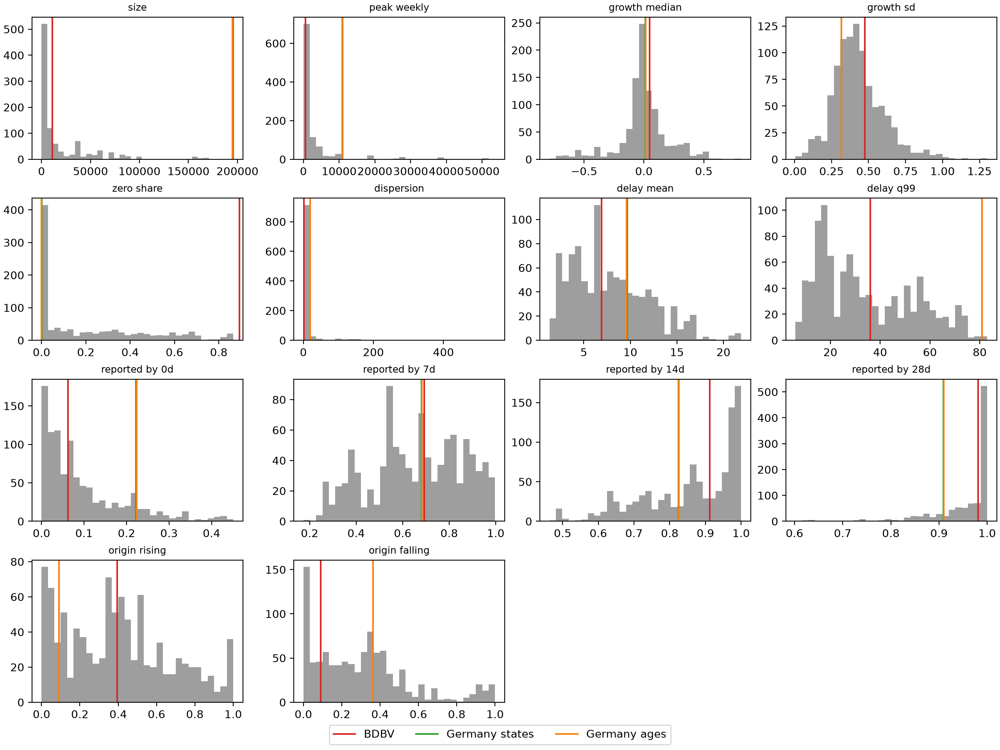
| Summary | Simulated median [5%, 95%] | Published | Sources |
|---|---|---|---|
| generation time or serial interval mean (days) | 7.23 [2.72, 16.8] | COVID-19 5.2; COVID-19 3.95; COVID-19 4.7; influenza 3.6; influenza 2.2; influenza 2.8; Ebola (West Africa 2014-16) 15.3; measles 11.7; mpox (2022) 9.5 | 10.1016/j.ijid.2020.02.060; 10.1056/NEJMoa1411100; 10.1093/aje/kwu209; 10.1097/EDE.0b013e31819d1092; 10.1136/bmj-2022-073153; 10.2807/1560-7917.ES.2020.25.17.2000257 |
| doubling time (days) | 14.1 [7, 40.3] | COVID-19 3; Ebola (West Africa 2014-16) 15.7; Ebola (West Africa 2014-16) 23.6; Ebola (West Africa 2014-16) 30.2; mpox (2022) 9.07 | 10.1056/NEJMoa1411100; 10.1098/rstb.2020.0264; 10.1136/bmj-2022-073153 |
| halving time (days) | 13.5 [5.75, 36] | mpox (2022) 29 | 10.1136/bmj-2022-073153 |
| reporting delay mean (days) | 7.09 [2.2, 15.2] | Ebola (West Africa 2014-16) 5 | 10.1056/NEJMoa1411100 |
| reporting delay 99% point (days) | 29 [11, 66.2] | nan | |
| outbreak size (cases) | 3.67e+03 [71, 8.44e+04] | Ebola (West Africa 2014-16) 28646; mpox (2022) 3000; cholera 604634 | 10.1056/NEJMoa1204927; 10.1098/rstb.2016.0297; 10.1371/journal.pcbi.1011463 |
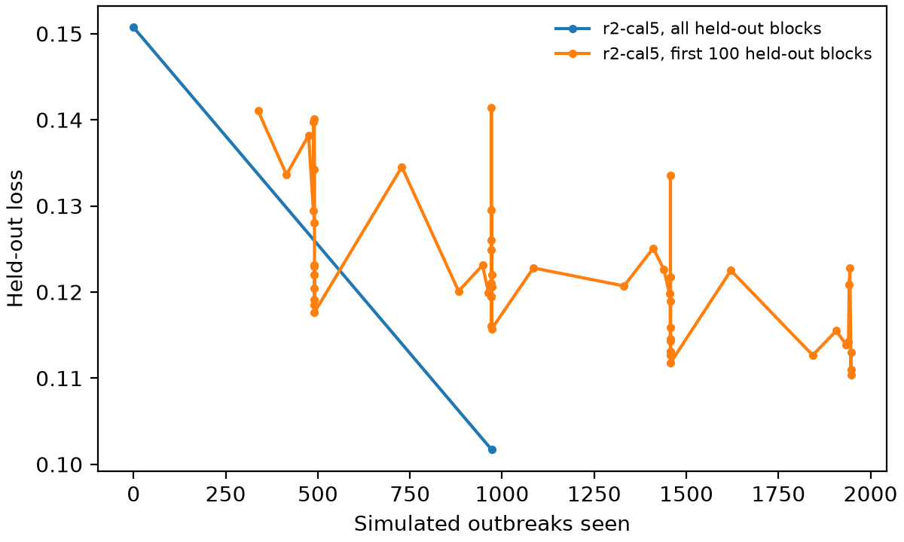
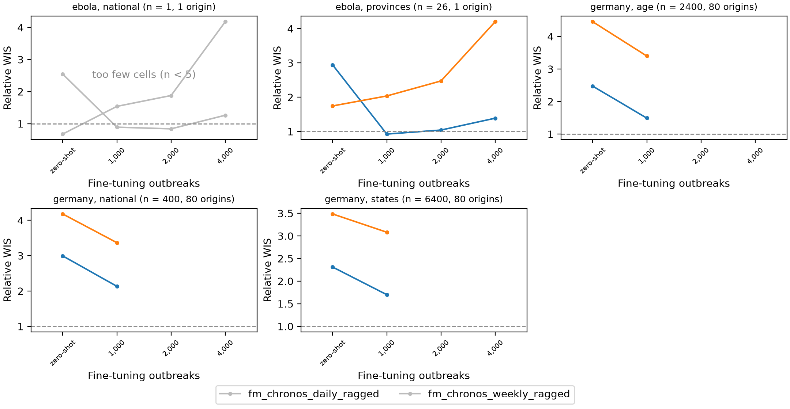
randomwalknowcast of the ragged Chronos-2 models against the number of simulated outbreaks each r3 checkpoint was fine-tuned on, with the zero-shot model at the left, on the case studies by level. Each panel gives n, the fewest matched cells of its points, and the forecast origins they come from, and panels with fewer than 5 are grey. On BDBV’s provinces (n = 26 cells from 1 origin) the daily model goes from 2.94 zero-shot to 0.92 at 1,000 and 1.04 at 2,000 outbreaks, then worsens to 1.39 at 4,000; the weekly model worsens throughout, from 1.74 to 4.2. BDBV’s national panel has n = 1, so it is grey. German checkpoints join as they are scored.
The held-out synthetic set
The held-out set is simulated on grid r3 with seeds 8016 to 8025, 25 simulations each. These cover the complete balanced blocks 1670 to 1671, and simulations outside them are not used. We evaluate draw 1 of each simulation, so the outbreaks are independent. The seeds are disjoint from the fine-tune’s training and held-out seeds (config/finetune/r3.env). The simulations are written to ../output/finetune/heldout, and the workflow config records them. The synthetic runner of #192 runs the models on the set.
The held-out set was reserved for the final evaluation. No model was scored on it during development. We checked the pipeline on the r3 pilot seeds 9501 to 9504, whose forecasts are not results.
Protocol
Each outbreak is released weekly, on one weekday from Wednesday to Saturday drawn from its id, and a release’s cut-off is its origin. Each outbreak has four origins, spread evenly from its 6th release to the last release at least its longest delay plus 5 weeks before its last report. Each forecast covers weeks -4 to 3 from the week of the cut-off, as weekly totals by onset week for the country and each stratum. Scores use rolling truth, the count reported D days after the end of a target week, with D the outbreak’s own 98% reporting delay in whole days, and are relative to randomwalknowcast.
Aggregation options
Chronos-2 can forecast every level of a place hierarchy in one block, or each level on its own. We compare four options for the zero-shot and fine-tuned models, daily and weekly (#222): (a) all levels in one joint block; (b) each level in its own block; (c) the lowest level only, summed up to the others with draws paired at random; (d) the lowest level only, summed up after pairing its draws with the rolling copula. Option (d) tests whether the copula rescues aggregation.
Scoring
- Scoring, and its check against scoringutils.
- Key references: (Bosse et al. 2022; Jordan, Krüger, and Lerch 2019; Zanetta and Allen 2024).
Implementation
- The tools we used, each cited: Python, PyTorch on the laptop GPU, chronos-forecasting, PEFT for LoRA, R and epinowcast for simulation, and scoringrules for scoring, checked against scoringutils.
- The evaluation runs as a Snakemake workflow, so every result can be reproduced from the raw data.
Results
- Score breakdowns by location and horizon for each case study.
- WIS over time for each case study.
- Held-out synthetic scores by number of fine-tuning outbreaks.
Joint block or aggregation
The submission uses the joint block. On BDBV it is best or tied at provinces and zones for every model, and at the national level for the zero-shot models. At the national level, level by level is better for the daily fine-tuned models and the weekly model fine-tuned on 1,000 outbreaks, with relative WIS 0.71 against 1.94 for round 1. On the German development half, the joint block is best at the national level with the daily checkpoint fine-tuned on 1,000 outbreaks (1.89 against 2.11 level by level). Level by level is competitive on Germany for the daily zero-shot and round-1 models (2.19 against 3.05 for zero-shot at the national level) and for age groups. Summing the lowest level loses at every level above it, with or without the copula: at BDBV’s national level the daily zero-shot model scores 8.01 summed and 5.11 summed after pairing, against 1.26 for the joint block. All WIS are relative to randomwalknowcast on the same targets. Table 5 and Table 6 give every model and level, and Table 7 what each option costs.
randomwalknowcast on the same targets (log scale in brackets), 50% and 95% coverage and the number of targets, by level (national, provinces, zones).
| Model | Option | Level | Relative WIS (log) | 50% / 95% | n |
|---|---|---|---|---|---|
| fm_chronos_daily_ragged | Joint block | national | 1.26 (1.20) | 0.33 / 0.67 | 6 |
| fm_chronos_daily_ragged | Joint block | provinces | 1.90 (3.51) | 0.96 / 0.97 | 156 |
| fm_chronos_daily_ragged | Joint block | zones | 2.19 (2.01) | 0.69 / 0.86 | 65 |
| fm_chronos_daily_ragged | Level by level | national | 1.39 (1.28) | 0.33 / 0.67 | 6 |
| fm_chronos_daily_ragged | Level by level | provinces | 1.96 (3.87) | 0.94 / 0.97 | 156 |
| fm_chronos_daily_ragged | Level by level | zones | 2.29 (2.18) | 0.66 / 0.88 | 65 |
| fm_chronos_daily_ragged | Zones summed | national | 8.01 (6.04) | 0.33 / 0.50 | 6 |
| fm_chronos_daily_ragged | Zones summed | provinces | 5.74 (7.88) | 0.94 / 0.96 | 156 |
| fm_chronos_daily_ragged | Zones summed | zones | 4.72 (4.18) | 0.55 / 0.77 | 65 |
| fm_chronos_daily_ragged | Zones summed after pairing | national | 5.11 (3.92) | 0.50 / 0.50 | 6 |
| fm_chronos_daily_ragged | Zones summed after pairing | provinces | 4.06 (5.57) | 0.96 / 0.96 | 156 |
| fm_chronos_daily_ragged | Zones summed after pairing | zones | 4.72 (4.18) | 0.55 / 0.77 | 65 |
| fm_chronos_daily_ragged_ft | Joint block | national | 1.94 (1.80) | 0.33 / 0.50 | 6 |
| fm_chronos_daily_ragged_ft | Joint block | provinces | 2.11 (3.58) | 0.95 / 0.96 | 156 |
| fm_chronos_daily_ragged_ft | Joint block | zones | 2.78 (2.38) | 0.63 / 0.83 | 65 |
| fm_chronos_daily_ragged_ft | Level by level | national | 0.71 (0.69) | 0.33 / 0.67 | 6 |
| fm_chronos_daily_ragged_ft | Level by level | provinces | 2.25 (3.53) | 0.95 / 0.97 | 156 |
| fm_chronos_daily_ragged_ft | Level by level | zones | 2.84 (2.51) | 0.63 / 0.78 | 65 |
| fm_chronos_daily_ragged_ft | Zones summed | national | 7.97 (6.02) | 0.33 / 0.50 | 6 |
| fm_chronos_daily_ragged_ft | Zones summed | provinces | 5.95 (6.82) | 0.94 / 0.96 | 156 |
| fm_chronos_daily_ragged_ft | Zones summed | zones | 5.48 (4.34) | 0.54 / 0.69 | 65 |
| fm_chronos_daily_ragged_ft | Zones summed after pairing | national | 5.65 (4.39) | 0.50 / 0.50 | 6 |
| fm_chronos_daily_ragged_ft | Zones summed after pairing | provinces | 4.49 (5.13) | 0.96 / 0.96 | 156 |
| fm_chronos_daily_ragged_ft | Zones summed after pairing | zones | 5.48 (4.34) | 0.54 / 0.69 | 65 |
| fm_chronos_daily_ragged_ft_n1000 | Joint block | national | 1.34 (1.27) | 0.33 / 0.67 | 6 |
| fm_chronos_daily_ragged_ft_n1000 | Joint block | provinces | 1.25 (2.55) | 0.96 / 0.97 | 156 |
| fm_chronos_daily_ragged_ft_n1000 | Joint block | zones | 1.88 (1.74) | 0.69 / 0.86 | 65 |
| fm_chronos_daily_ragged_ft_n1000 | Level by level | national | 0.68 (0.67) | 0.33 / 0.67 | 6 |
| fm_chronos_daily_ragged_ft_n1000 | Level by level | provinces | 1.37 (2.58) | 0.96 / 0.97 | 156 |
| fm_chronos_daily_ragged_ft_n1000 | Level by level | zones | 1.93 (1.87) | 0.71 / 0.85 | 65 |
| fm_chronos_daily_ragged_ft_n1000 | Zones summed | national | 5.69 (4.61) | 0.33 / 0.50 | 6 |
| fm_chronos_daily_ragged_ft_n1000 | Zones summed | provinces | 4.17 (6.05) | 0.94 / 0.96 | 156 |
| fm_chronos_daily_ragged_ft_n1000 | Zones summed | zones | 3.89 (3.55) | 0.58 / 0.77 | 65 |
| fm_chronos_daily_ragged_ft_n1000 | Zones summed after pairing | national | 3.68 (3.04) | 0.50 / 0.50 | 6 |
| fm_chronos_daily_ragged_ft_n1000 | Zones summed after pairing | provinces | 2.93 (4.20) | 0.96 / 0.97 | 156 |
| fm_chronos_daily_ragged_ft_n1000 | Zones summed after pairing | zones | 3.89 (3.55) | 0.58 / 0.77 | 65 |
| fm_chronos_weekly_ragged | Joint block | national | 1.16 (1.08) | 0.50 / 0.50 | 6 |
| fm_chronos_weekly_ragged | Joint block | provinces | 1.54 (2.19) | 0.96 / 0.97 | 156 |
| fm_chronos_weekly_ragged | Joint block | zones | 1.36 (1.11) | 0.86 / 0.92 | 65 |
| fm_chronos_weekly_ragged | Level by level | national | 1.65 (1.53) | 0.50 / 0.50 | 6 |
| fm_chronos_weekly_ragged | Level by level | provinces | 1.57 (2.24) | 0.96 / 0.97 | 156 |
| fm_chronos_weekly_ragged | Level by level | zones | 1.44 (1.20) | 0.86 / 0.94 | 65 |
| fm_chronos_weekly_ragged | Zones summed | national | 4.15 (3.62) | 0.33 / 0.33 | 6 |
| fm_chronos_weekly_ragged | Zones summed | provinces | 2.77 (3.93) | 0.94 / 0.94 | 156 |
| fm_chronos_weekly_ragged | Zones summed | zones | 2.22 (2.32) | 0.77 / 0.92 | 65 |
| fm_chronos_weekly_ragged | Zones summed after pairing | national | 2.15 (1.82) | 0.33 / 0.50 | 6 |
| fm_chronos_weekly_ragged | Zones summed after pairing | provinces | 1.72 (2.44) | 0.95 / 0.97 | 156 |
| fm_chronos_weekly_ragged | Zones summed after pairing | zones | 2.22 (2.32) | 0.77 / 0.92 | 65 |
| fm_chronos_weekly_ragged_ft | Joint block | national | 1.09 (1.04) | 0.50 / 0.50 | 6 |
| fm_chronos_weekly_ragged_ft | Joint block | provinces | 1.35 (2.05) | 0.96 / 0.97 | 156 |
| fm_chronos_weekly_ragged_ft | Joint block | zones | 1.32 (1.12) | 0.85 / 0.92 | 65 |
| fm_chronos_weekly_ragged_ft | Level by level | national | 1.13 (1.12) | 0.50 / 0.50 | 6 |
| fm_chronos_weekly_ragged_ft | Level by level | provinces | 1.94 (2.56) | 0.96 / 0.96 | 156 |
| fm_chronos_weekly_ragged_ft | Level by level | zones | 1.80 (1.51) | 0.88 / 0.92 | 65 |
| fm_chronos_weekly_ragged_ft | Zones summed | national | 3.90 (3.46) | 0.33 / 0.33 | 6 |
| fm_chronos_weekly_ragged_ft | Zones summed | provinces | 2.52 (11.14) | 0.94 / 0.94 | 156 |
| fm_chronos_weekly_ragged_ft | Zones summed | zones | 2.18 (2.32) | 0.77 / 0.94 | 65 |
| fm_chronos_weekly_ragged_ft | Zones summed after pairing | national | 2.00 (1.74) | 0.33 / 0.50 | 6 |
| fm_chronos_weekly_ragged_ft | Zones summed after pairing | provinces | 1.59 (3.73) | 0.94 / 0.97 | 156 |
| fm_chronos_weekly_ragged_ft | Zones summed after pairing | zones | 2.18 (2.32) | 0.77 / 0.94 | 65 |
| fm_chronos_weekly_ragged_ft_n1000 | Joint block | national | 1.60 (1.44) | 0.50 / 0.50 | 6 |
| fm_chronos_weekly_ragged_ft_n1000 | Joint block | provinces | 1.69 (2.21) | 0.96 / 0.97 | 156 |
| fm_chronos_weekly_ragged_ft_n1000 | Joint block | zones | 1.49 (1.24) | 0.86 / 0.94 | 65 |
| fm_chronos_weekly_ragged_ft_n1000 | Level by level | national | 1.21 (1.22) | 0.33 / 0.50 | 6 |
| fm_chronos_weekly_ragged_ft_n1000 | Level by level | provinces | 2.97 (3.42) | 0.96 / 0.96 | 156 |
| fm_chronos_weekly_ragged_ft_n1000 | Level by level | zones | 2.41 (1.77) | 0.89 / 0.92 | 65 |
| fm_chronos_weekly_ragged_ft_n1000 | Zones summed | national | 4.59 (3.94) | 0.33 / 0.33 | 6 |
| fm_chronos_weekly_ragged_ft_n1000 | Zones summed | provinces | 3.06 (3.52) | 0.94 / 0.94 | 156 |
| fm_chronos_weekly_ragged_ft_n1000 | Zones summed | zones | 2.42 (2.39) | 0.77 / 0.94 | 65 |
| fm_chronos_weekly_ragged_ft_n1000 | Zones summed after pairing | national | 2.39 (2.01) | 0.33 / 0.50 | 6 |
| fm_chronos_weekly_ragged_ft_n1000 | Zones summed after pairing | provinces | 1.90 (2.19) | 0.95 / 0.97 | 156 |
| fm_chronos_weekly_ragged_ft_n1000 | Zones summed after pairing | zones | 2.42 (2.39) | 0.77 / 0.94 | 65 |
| Model | Option | Level | Relative WIS (log) | 50% / 95% | n |
|---|---|---|---|---|---|
| fm_chronos_daily_ragged | Joint block | ages | 2.80 (2.90) | 0.20 / 0.49 | 2400 |
| fm_chronos_daily_ragged | Joint block | national | 3.05 (3.02) | 0.17 / 0.44 | 400 |
| fm_chronos_daily_ragged | Joint block | states | 2.37 (2.24) | 0.20 / 0.49 | 6400 |
| fm_chronos_daily_ragged | Level by level | ages | 2.52 (2.60) | 0.21 / 0.52 | 2400 |
| fm_chronos_daily_ragged | Level by level | national | 2.19 (2.14) | 0.23 / 0.47 | 400 |
| fm_chronos_daily_ragged | Level by level | states | 2.39 (2.23) | 0.19 / 0.47 | 6400 |
| fm_chronos_daily_ragged | Zones summed | ages | 2.53 (2.60) | 0.21 / 0.51 | 2400 |
| fm_chronos_daily_ragged | Zones summed | national | 3.51 (3.72) | 0.03 / 0.11 | 400 |
| fm_chronos_daily_ragged | Zones summed | states | 2.39 (2.23) | 0.19 / 0.47 | 6400 |
| fm_chronos_daily_ragged | Zones summed after pairing | ages | 2.53 (2.60) | 0.21 / 0.51 | 2400 |
| fm_chronos_daily_ragged | Zones summed after pairing | national | 2.98 (3.13) | 0.07 / 0.29 | 400 |
| fm_chronos_daily_ragged | Zones summed after pairing | states | 2.39 (2.23) | 0.19 / 0.47 | 6400 |
| fm_chronos_daily_ragged_ft | Joint block | ages | 2.89 (2.92) | 0.17 / 0.48 | 2400 |
| fm_chronos_daily_ragged_ft | Joint block | national | 2.79 (2.84) | 0.16 / 0.47 | 400 |
| fm_chronos_daily_ragged_ft | Joint block | states | 2.61 (2.48) | 0.18 / 0.47 | 6400 |
| fm_chronos_daily_ragged_ft | Level by level | ages | 2.75 (2.61) | 0.18 / 0.51 | 2400 |
| fm_chronos_daily_ragged_ft | Level by level | national | 1.94 (1.95) | 0.21 / 0.54 | 400 |
| fm_chronos_daily_ragged_ft | Level by level | states | 2.56 (2.42) | 0.17 / 0.46 | 6400 |
| fm_chronos_daily_ragged_ft | Zones summed | ages | 2.74 (2.59) | 0.18 / 0.51 | 2400 |
| fm_chronos_daily_ragged_ft | Zones summed | national | 4.37 (4.48) | 0.04 / 0.12 | 400 |
| fm_chronos_daily_ragged_ft | Zones summed | states | 2.57 (2.43) | 0.18 / 0.47 | 6400 |
| fm_chronos_daily_ragged_ft | Zones summed after pairing | ages | 2.74 (2.59) | 0.18 / 0.51 | 2400 |
| fm_chronos_daily_ragged_ft | Zones summed after pairing | national | 3.57 (3.62) | 0.10 / 0.30 | 400 |
| fm_chronos_daily_ragged_ft | Zones summed after pairing | states | 2.57 (2.43) | 0.18 / 0.47 | 6400 |
| fm_chronos_daily_ragged_ft_n1000 | Joint block | ages | 2.39 (2.38) | 0.26 / 0.58 | 2400 |
| fm_chronos_daily_ragged_ft_n1000 | Joint block | national | 1.89 (1.87) | 0.30 / 0.65 | 400 |
| fm_chronos_daily_ragged_ft_n1000 | Joint block | states | 2.42 (2.42) | 0.21 / 0.52 | 6400 |
| fm_chronos_daily_ragged_ft_n1000 | Level by level | ages | 2.14 (2.09) | 0.27 / 0.60 | 2400 |
| fm_chronos_daily_ragged_ft_n1000 | Level by level | national | 2.11 (2.17) | 0.20 / 0.55 | 400 |
| fm_chronos_daily_ragged_ft_n1000 | Level by level | states | 2.38 (2.25) | 0.22 / 0.53 | 6400 |
| fm_chronos_daily_ragged_ft_n1000 | Zones summed | ages | 2.12 (2.07) | 0.28 / 0.60 | 2400 |
| fm_chronos_daily_ragged_ft_n1000 | Zones summed | national | 4.19 (3.96) | 0.04 / 0.16 | 400 |
| fm_chronos_daily_ragged_ft_n1000 | Zones summed | states | 2.38 (2.25) | 0.22 / 0.53 | 6400 |
| fm_chronos_daily_ragged_ft_n1000 | Zones summed after pairing | ages | 2.12 (2.07) | 0.28 / 0.60 | 2400 |
| fm_chronos_daily_ragged_ft_n1000 | Zones summed after pairing | national | 3.38 (3.18) | 0.12 / 0.39 | 400 |
| fm_chronos_daily_ragged_ft_n1000 | Zones summed after pairing | states | 2.38 (2.25) | 0.22 / 0.53 | 6400 |
| fm_chronos_weekly_ragged | Joint block | ages | 4.35 (4.18) | 0.27 / 0.68 | 2400 |
| fm_chronos_weekly_ragged | Joint block | national | 4.15 (4.27) | 0.20 / 0.75 | 400 |
| fm_chronos_weekly_ragged | Joint block | states | 3.47 (2.85) | 0.30 / 0.73 | 6400 |
| fm_chronos_weekly_ragged | Level by level | ages | 4.44 (4.20) | 0.29 / 0.70 | 2400 |
| fm_chronos_weekly_ragged | Level by level | national | 4.48 (4.52) | 0.28 / 0.79 | 400 |
| fm_chronos_weekly_ragged | Level by level | states | 3.47 (2.82) | 0.30 / 0.73 | 6400 |
| fm_chronos_weekly_ragged | Zones summed | ages | 4.39 (4.18) | 0.28 / 0.70 | 2400 |
| fm_chronos_weekly_ragged | Zones summed | national | 5.60 (5.68) | 0.10 / 0.33 | 400 |
| fm_chronos_weekly_ragged | Zones summed | states | 3.48 (2.84) | 0.30 / 0.72 | 6400 |
| fm_chronos_weekly_ragged | Zones summed after pairing | ages | 4.39 (4.18) | 0.28 / 0.70 | 2400 |
| fm_chronos_weekly_ragged | Zones summed after pairing | national | 5.11 (5.13) | 0.20 / 0.44 | 400 |
| fm_chronos_weekly_ragged | Zones summed after pairing | states | 3.48 (2.84) | 0.30 / 0.72 | 6400 |
| fm_chronos_weekly_ragged_ft | Joint block | ages | 4.37 (3.80) | 0.34 / 0.70 | 2400 |
| fm_chronos_weekly_ragged_ft | Joint block | national | 4.05 (4.02) | 0.33 / 0.73 | 400 |
| fm_chronos_weekly_ragged_ft | Joint block | states | 3.53 (2.71) | 0.33 / 0.74 | 6400 |
| fm_chronos_weekly_ragged_ft | Level by level | ages | 4.15 (3.49) | 0.37 / 0.74 | 2400 |
| fm_chronos_weekly_ragged_ft | Level by level | national | 4.37 (4.25) | 0.38 / 0.73 | 400 |
| fm_chronos_weekly_ragged_ft | Level by level | states | 3.66 (2.68) | 0.32 / 0.73 | 6400 |
| fm_chronos_weekly_ragged_ft | Zones summed | ages | 4.23 (3.53) | 0.36 / 0.74 | 2400 |
| fm_chronos_weekly_ragged_ft | Zones summed | national | 6.21 (5.97) | 0.06 / 0.24 | 400 |
| fm_chronos_weekly_ragged_ft | Zones summed | states | 3.66 (2.68) | 0.33 / 0.74 | 6400 |
| fm_chronos_weekly_ragged_ft | Zones summed after pairing | ages | 4.23 (3.53) | 0.36 / 0.74 | 2400 |
| fm_chronos_weekly_ragged_ft | Zones summed after pairing | national | 5.94 (5.70) | 0.15 / 0.34 | 400 |
| fm_chronos_weekly_ragged_ft | Zones summed after pairing | states | 3.66 (2.68) | 0.33 / 0.74 | 6400 |
| fm_chronos_weekly_ragged_ft_n1000 | Joint block | ages | 6.00 (4.60) | 0.22 / 0.74 | 2400 |
| fm_chronos_weekly_ragged_ft_n1000 | Joint block | national | 5.55 (5.01) | 0.19 / 0.70 | 400 |
| fm_chronos_weekly_ragged_ft_n1000 | Joint block | states | 4.59 (3.31) | 0.30 / 0.73 | 6400 |
| fm_chronos_weekly_ragged_ft_n1000 | Level by level | ages | 5.32 (3.99) | 0.28 / 0.76 | 2400 |
| fm_chronos_weekly_ragged_ft_n1000 | Level by level | national | 4.40 (4.24) | 0.23 / 0.72 | 400 |
| fm_chronos_weekly_ragged_ft_n1000 | Level by level | states | 4.83 (3.33) | 0.28 / 0.73 | 6400 |
| fm_chronos_weekly_ragged_ft_n1000 | Zones summed | ages | 5.41 (4.04) | 0.27 / 0.75 | 2400 |
| fm_chronos_weekly_ragged_ft_n1000 | Zones summed | national | 10.18 (9.00) | 0.04 / 0.13 | 400 |
| fm_chronos_weekly_ragged_ft_n1000 | Zones summed | states | 4.81 (3.33) | 0.28 / 0.73 | 6400 |
| fm_chronos_weekly_ragged_ft_n1000 | Zones summed after pairing | ages | 5.41 (4.04) | 0.27 / 0.75 | 2400 |
| fm_chronos_weekly_ragged_ft_n1000 | Zones summed after pairing | national | 8.70 (7.72) | 0.08 / 0.30 | 400 |
| fm_chronos_weekly_ragged_ft_n1000 | Zones summed after pairing | states | 4.81 (3.33) | 0.28 / 0.73 | 6400 |
| Study | Model | Option | Series per block | Memory (GB) | Time (s) |
|---|---|---|---|---|---|
| ebola | fm_chronos_daily_ragged | Joint block | 2646 | 7.4 | 43.9 |
| ebola | fm_chronos_daily_ragged | Level by level | 29+250+2367 | 7.28 | 38 |
| ebola | fm_chronos_daily_ragged | Zones summed after pairing | 2367 | 6.61 | 36.9 |
| ebola | fm_chronos_daily_ragged | Zones summed | 2367 | 6.61 | 36.9 |
| ebola | fm_chronos_daily_ragged_ft | Joint block | 2646 | 7.56 | 43.3 |
| ebola | fm_chronos_daily_ragged_ft | Level by level | 29+250+2367 | 7.31 | 37.8 |
| ebola | fm_chronos_daily_ragged_ft | Zones summed after pairing | 2367 | 6.74 | 36.6 |
| ebola | fm_chronos_daily_ragged_ft | Zones summed | 2367 | 6.74 | 36.6 |
| ebola | fm_chronos_daily_ragged_ft_n1000 | Joint block | 2646 | 7.66 | 43.4 |
| ebola | fm_chronos_daily_ragged_ft_n1000 | Level by level | 29+250+2367 | 7.31 | 39.7 |
| ebola | fm_chronos_daily_ragged_ft_n1000 | Zones summed after pairing | 2367 | 6.73 | 37.5 |
| ebola | fm_chronos_daily_ragged_ft_n1000 | Zones summed | 2367 | 6.73 | 37.5 |
| ebola | fm_chronos_weekly_ragged | Joint block | 846 | 1.73 | 7.5 |
| ebola | fm_chronos_weekly_ragged | Level by level | 5+58+783 | 1.7 | 6.9 |
| ebola | fm_chronos_weekly_ragged | Zones summed after pairing | 783 | 1.69 | 6.7 |
| ebola | fm_chronos_weekly_ragged | Zones summed | 783 | 1.69 | 6.7 |
| ebola | fm_chronos_weekly_ragged_ft | Joint block | 846 | 1.76 | 6.9 |
| ebola | fm_chronos_weekly_ragged_ft | Level by level | 5+58+783 | 1.73 | 6.8 |
| ebola | fm_chronos_weekly_ragged_ft | Zones summed after pairing | 783 | 1.72 | 6.7 |
| ebola | fm_chronos_weekly_ragged_ft | Zones summed | 783 | 1.72 | 6.7 |
| ebola | fm_chronos_weekly_ragged_ft_n1000 | Joint block | 846 | 1.76 | 7 |
| ebola | fm_chronos_weekly_ragged_ft_n1000 | Level by level | 5+58+783 | 1.73 | 6.9 |
| ebola | fm_chronos_weekly_ragged_ft_n1000 | Zones summed after pairing | 783 | 1.72 | 6.7 |
| ebola | fm_chronos_weekly_ragged_ft_n1000 | Zones summed | 783 | 1.72 | 6.7 |
| germany | fm_chronos_daily_ragged | Joint block | 667 | 3.68 | 11.7 |
| germany | fm_chronos_daily_ragged | Level by level | 29+464+29+174 | 3.33 | 11.2 |
| germany | fm_chronos_daily_ragged | Zones summed after pairing | 464+174 | 3.32 | 10.8 |
| germany | fm_chronos_daily_ragged | Zones summed | 464+174 | 3.32 | 10.8 |
| germany | fm_chronos_daily_ragged_ft | Joint block | 667 | 3.74 | 11.6 |
| germany | fm_chronos_daily_ragged_ft | Level by level | 29+464+29+174 | 3.25 | 11.6 |
| germany | fm_chronos_daily_ragged_ft | Zones summed after pairing | 464+174 | 3.22 | 11.2 |
| germany | fm_chronos_daily_ragged_ft | Zones summed | 464+174 | 3.22 | 11.2 |
| germany | fm_chronos_daily_ragged_ft_n1000 | Joint block | 667 | 3.69 | 11.7 |
| germany | fm_chronos_daily_ragged_ft_n1000 | Level by level | 29+464+29+174 | 3.34 | 11.4 |
| germany | fm_chronos_daily_ragged_ft_n1000 | Zones summed after pairing | 464+174 | 3.33 | 11.2 |
| germany | fm_chronos_daily_ragged_ft_n1000 | Zones summed | 464+174 | 3.33 | 11.2 |
| germany | fm_chronos_weekly_ragged | Joint block | 115 | 2.74 | 2.2 |
| germany | fm_chronos_weekly_ragged | Level by level | 5+80+5+30 | 2.71 | 2.4 |
| germany | fm_chronos_weekly_ragged | Zones summed after pairing | 80+30 | 2.71 | 2.4 |
| germany | fm_chronos_weekly_ragged | Zones summed | 80+30 | 2.71 | 2.4 |
| germany | fm_chronos_weekly_ragged_ft | Joint block | 115 | 2.75 | 2.2 |
| germany | fm_chronos_weekly_ragged_ft | Level by level | 5+80+5+30 | 2.74 | 2.5 |
| germany | fm_chronos_weekly_ragged_ft | Zones summed after pairing | 80+30 | 2.74 | 2.4 |
| germany | fm_chronos_weekly_ragged_ft | Zones summed | 80+30 | 2.74 | 2.4 |
| germany | fm_chronos_weekly_ragged_ft_n1000 | Joint block | 115 | 2.74 | 2.2 |
| germany | fm_chronos_weekly_ragged_ft_n1000 | Level by level | 5+80+5+30 | 2.73 | 2.4 |
| germany | fm_chronos_weekly_ragged_ft_n1000 | Zones summed after pairing | 80+30 | 2.73 | 2.4 |
| germany | fm_chronos_weekly_ragged_ft_n1000 | Zones summed | 80+30 | 2.73 | 2.4 |
Held-out synthetic data
| factor | level | share |
|---|---|---|
| Process | renewal_3 | 0.5 |
| Process | renewal_15 | 0.375 |
| Process | growth | 0.125 |
| Gt shape | gamma_0.6 | 0.375 |
| Gt shape | gamma_0.3 | 0.25 |
| Gt shape | lognormal_0.6 | 0.25 |
| Gt shape | gamma_1 | 0.125 |
| Trajectory | rise_fall_sharp | 0.25 |
| Trajectory | growth | 0.125 |
| Trajectory | flat | 0.125 |
| Trajectory | rise_fall_gradual | 0.125 |
| Trajectory | decline | 0.125 |
| Trajectory | fall_rise | 0.125 |
| Trajectory | oscillating | 0.125 |
| Delay family | exponential | 0.5 |
| Delay family | lognormal | 0.375 |
| Delay family | gamma | 0.125 |
| Delay form | parametric | 0.375 |
| Delay form | both | 0.375 |
| Delay form | non_parametric | 0.25 |
| Delay change | walk | 0.375 |
| Delay change | drift | 0.375 |
| Delay change | step | 0.25 |
| Reporting | daily | 0.625 |
| Reporting | weekdays | 0.375 |
| Reference dow | yes | 0.75 |
| Reference dow | no | 0.25 |
| Observation | negbin1d | 0.625 |
| Observation | negbin | 0.375 |
| Strata | places_ages | 0.5 |
| Strata | places | 0.25 |
| Strata | single | 0.25 |
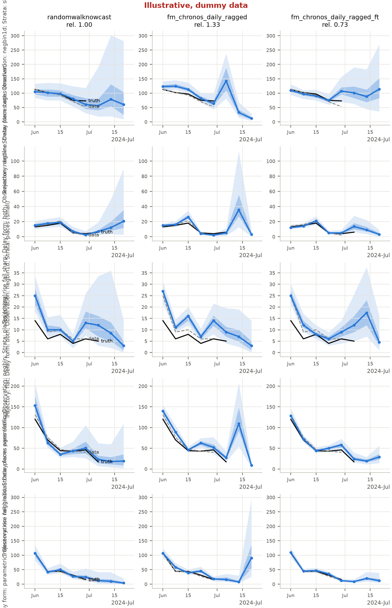
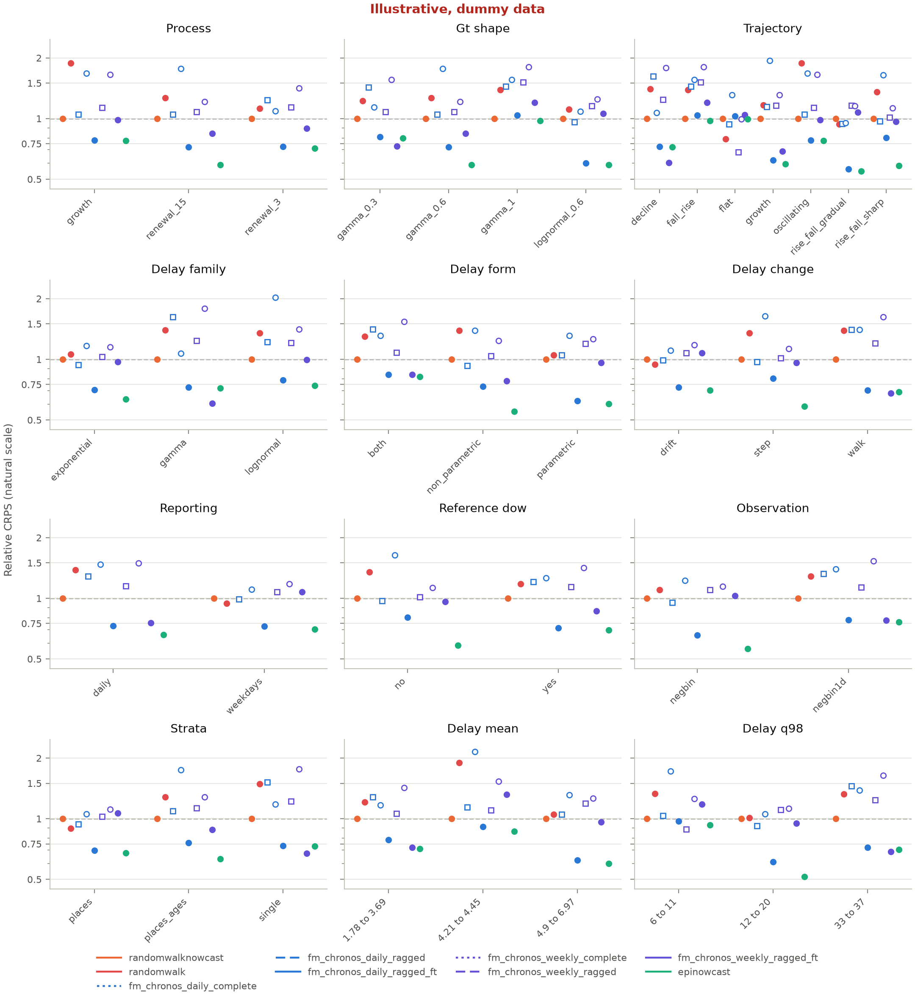
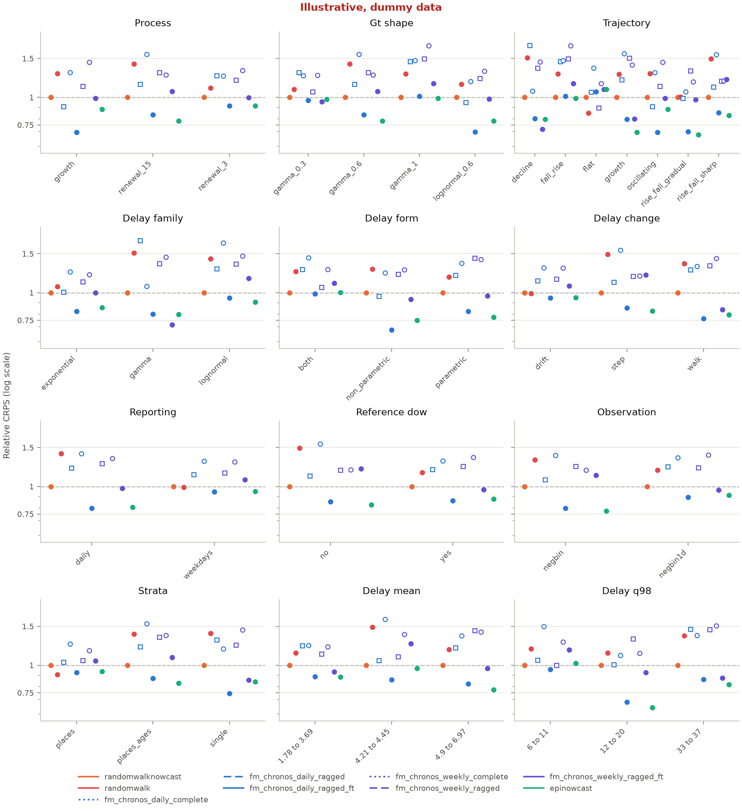
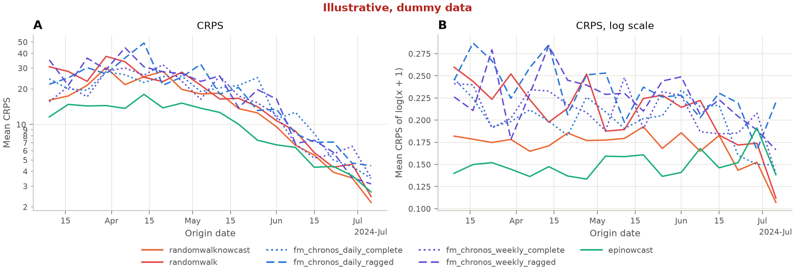
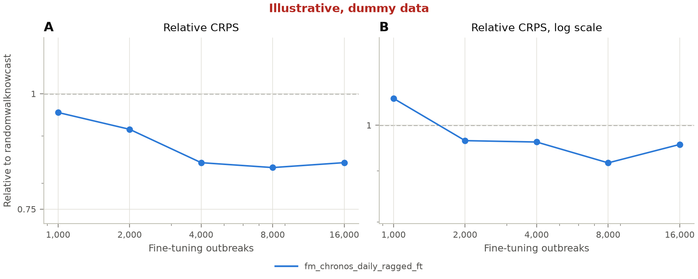
| study | model | metric | horizon | score | log_score | bias | coverage_50 | coverage_90 | n | rel_score | rel_log_score |
|---|---|---|---|---|---|---|---|---|---|---|---|
| synthetic | epinowcast | crps | -28 | 5.78 | 0.0845 | 0.259 | 0.496 | 0.783 | 129 | 0.701 | 0.885 |
| synthetic | epinowcast | crps | -21 | 6.61 | 0.0963 | 0.367 | 0.366 | 0.701 | 134 | 1.06 | 1.09 |
| synthetic | epinowcast | crps | -14 | 6.91 | 0.093 | 0.339 | 0.504 | 0.763 | 139 | 0.993 | 0.981 |
| synthetic | epinowcast | crps | -7 | 6.19 | 0.101 | 0.291 | 0.437 | 0.803 | 142 | 0.684 | 0.96 |
| synthetic | epinowcast | crps | 0 | 10.9 | 0.141 | 0.235 | 0.479 | 0.8 | 140 | 0.815 | 0.863 |
| synthetic | epinowcast | crps | 7 | 13.4 | 0.192 | 0.179 | 0.5 | 0.818 | 132 | 0.542 | 0.816 |
| synthetic | epinowcast | crps | 14 | 19.9 | 0.244 | 0.132 | 0.419 | 0.847 | 124 | 0.782 | 0.844 |
| synthetic | epinowcast | crps | 21 | 18.6 | 0.27 | 0.0801 | 0.526 | 0.905 | 116 | 0.495 | 0.781 |
| synthetic | fm_chronos_daily_complete | crps | -28 | 8.11 | 0.103 | -0.33 | 0.357 | 0.729 | 129 | 0.984 | 1.08 |
| synthetic | fm_chronos_daily_complete | crps | -21 | 7.99 | 0.0964 | -0.221 | 0.336 | 0.769 | 134 | 1.28 | 1.09 |
| synthetic | fm_chronos_daily_complete | crps | -14 | 7.88 | 0.103 | -0.168 | 0.417 | 0.748 | 139 | 1.13 | 1.09 |
| synthetic | fm_chronos_daily_complete | crps | -7 | 8.56 | 0.123 | -0.163 | 0.444 | 0.775 | 142 | 0.946 | 1.17 |
| synthetic | fm_chronos_daily_complete | crps | 0 | 14.1 | 0.182 | -0.0389 | 0.479 | 0.814 | 140 | 1.06 | 1.12 |
| synthetic | fm_chronos_daily_complete | crps | 7 | 27.8 | 0.277 | -0.056 | 0.447 | 0.833 | 132 | 1.12 | 1.18 |
| synthetic | fm_chronos_daily_complete | crps | 14 | 32.4 | 0.342 | 0.0752 | 0.435 | 0.839 | 124 | 1.28 | 1.19 |
| synthetic | fm_chronos_daily_complete | crps | 21 | 48 | 0.443 | 0.0758 | 0.397 | 0.836 | 116 | 1.28 | 1.28 |
| synthetic | fm_chronos_daily_ragged | crps | -28 | 11.3 | 0.134 | 0.596 | 0.217 | 0.442 | 129 | 1.37 | 1.4 |
| synthetic | fm_chronos_daily_ragged | crps | -21 | 11.1 | 0.149 | 0.648 | 0.231 | 0.493 | 134 | 1.79 | 1.7 |
| synthetic | fm_chronos_daily_ragged | crps | -14 | 10.7 | 0.146 | 0.606 | 0.194 | 0.511 | 139 | 1.53 | 1.54 |
| synthetic | fm_chronos_daily_ragged | crps | -7 | 14.4 | 0.183 | 0.594 | 0.303 | 0.514 | 142 | 1.6 | 1.75 |
| synthetic | fm_chronos_daily_ragged | crps | 0 | 17.6 | 0.215 | 0.323 | 0.336 | 0.7 | 140 | 1.32 | 1.32 |
| synthetic | fm_chronos_daily_ragged | crps | 7 | 20.8 | 0.254 | 0.262 | 0.333 | 0.735 | 132 | 0.84 | 1.08 |
| synthetic | fm_chronos_daily_ragged | crps | 14 | 28.8 | 0.366 | 0.0617 | 0.403 | 0.694 | 124 | 1.13 | 1.27 |
| synthetic | fm_chronos_daily_ragged | crps | 21 | 60.5 | 0.477 | 0.265 | 0.362 | 0.716 | 116 | 1.61 | 1.38 |
| synthetic | fm_chronos_daily_ragged_ft | crps | -28 | 6.45 | 0.0887 | 0.347 | 0.419 | 0.736 | 129 | 0.782 | 0.929 |
| synthetic | fm_chronos_daily_ragged_ft | crps | -21 | 5.98 | 0.0895 | 0.3 | 0.448 | 0.746 | 134 | 0.96 | 1.02 |
| synthetic | fm_chronos_daily_ragged_ft | crps | -14 | 6.15 | 0.0891 | 0.334 | 0.367 | 0.734 | 139 | 0.884 | 0.939 |
| synthetic | fm_chronos_daily_ragged_ft | crps | -7 | 6.73 | 0.098 | 0.285 | 0.423 | 0.81 | 142 | 0.744 | 0.933 |
| synthetic | fm_chronos_daily_ragged_ft | crps | 0 | 10.7 | 0.139 | 0.29 | 0.464 | 0.843 | 140 | 0.805 | 0.855 |
| synthetic | fm_chronos_daily_ragged_ft | crps | 7 | 14.7 | 0.196 | 0.143 | 0.386 | 0.856 | 132 | 0.592 | 0.833 |
| synthetic | fm_chronos_daily_ragged_ft | crps | 14 | 19 | 0.234 | 0.186 | 0.395 | 0.855 | 124 | 0.749 | 0.81 |
| synthetic | fm_chronos_daily_ragged_ft | crps | 21 | 25.9 | 0.279 | 0.123 | 0.466 | 0.879 | 116 | 0.688 | 0.808 |
| synthetic | fm_chronos_weekly_complete | crps | -28 | 8.43 | 0.111 | -0.347 | 0.302 | 0.651 | 129 | 1.02 | 1.16 |
| synthetic | fm_chronos_weekly_complete | crps | -21 | 9.69 | 0.111 | -0.365 | 0.321 | 0.672 | 134 | 1.56 | 1.27 |
| synthetic | fm_chronos_weekly_complete | crps | -14 | 9.05 | 0.117 | -0.339 | 0.324 | 0.705 | 139 | 1.3 | 1.23 |
| synthetic | fm_chronos_weekly_complete | crps | -7 | 9.43 | 0.124 | -0.249 | 0.415 | 0.81 | 142 | 1.04 | 1.18 |
| synthetic | fm_chronos_weekly_complete | crps | 0 | 16.7 | 0.213 | -0.0974 | 0.479 | 0.814 | 140 | 1.25 | 1.31 |
| synthetic | fm_chronos_weekly_complete | crps | 7 | 23.4 | 0.276 | -0.0476 | 0.53 | 0.879 | 132 | 0.945 | 1.17 |
| synthetic | fm_chronos_weekly_complete | crps | 14 | 29.7 | 0.365 | -0.0856 | 0.516 | 0.839 | 124 | 1.17 | 1.27 |
| synthetic | fm_chronos_weekly_complete | crps | 21 | 40.7 | 0.409 | -0.0356 | 0.517 | 0.897 | 116 | 1.08 | 1.19 |
| synthetic | fm_chronos_weekly_ragged | crps | -28 | 6.8 | 0.0853 | -0.00845 | 0.457 | 0.76 | 129 | 0.825 | 0.894 |
| synthetic | fm_chronos_weekly_ragged | crps | -21 | 7.73 | 0.103 | 0.0893 | 0.366 | 0.687 | 134 | 1.24 | 1.17 |
| synthetic | fm_chronos_weekly_ragged | crps | -14 | 9.93 | 0.119 | -0.024 | 0.353 | 0.734 | 139 | 1.43 | 1.26 |
| synthetic | fm_chronos_weekly_ragged | crps | -7 | 8.81 | 0.137 | -0.00331 | 0.345 | 0.704 | 142 | 0.974 | 1.3 |
| synthetic | fm_chronos_weekly_ragged | crps | 0 | 16 | 0.22 | 0.0749 | 0.386 | 0.729 | 140 | 1.2 | 1.35 |
| synthetic | fm_chronos_weekly_ragged | crps | 7 | 30.3 | 0.34 | 0.0248 | 0.379 | 0.727 | 132 | 1.22 | 1.45 |
| synthetic | fm_chronos_weekly_ragged | crps | 14 | 42.7 | 0.428 | 0.0718 | 0.395 | 0.71 | 124 | 1.68 | 1.49 |
| synthetic | fm_chronos_weekly_ragged | crps | 21 | 59.4 | 0.432 | 0.13 | 0.466 | 0.828 | 116 | 1.58 | 1.25 |
| synthetic | fm_chronos_weekly_ragged_ft | crps | -28 | 6.95 | 0.0936 | 0.329 | 0.388 | 0.76 | 129 | 0.843 | 0.98 |
| synthetic | fm_chronos_weekly_ragged_ft | crps | -21 | 7.29 | 0.1 | 0.336 | 0.388 | 0.724 | 134 | 1.17 | 1.14 |
| synthetic | fm_chronos_weekly_ragged_ft | crps | -14 | 7.23 | 0.0935 | 0.399 | 0.439 | 0.784 | 139 | 1.04 | 0.986 |
| synthetic | fm_chronos_weekly_ragged_ft | crps | -7 | 8.39 | 0.122 | 0.279 | 0.458 | 0.796 | 142 | 0.927 | 1.16 |
| synthetic | fm_chronos_weekly_ragged_ft | crps | 0 | 11.7 | 0.163 | 0.292 | 0.421 | 0.85 | 140 | 0.876 | 1 |
| synthetic | fm_chronos_weekly_ragged_ft | crps | 7 | 17.3 | 0.235 | 0.0686 | 0.455 | 0.856 | 132 | 0.699 | 0.999 |
| synthetic | fm_chronos_weekly_ragged_ft | crps | 14 | 22.4 | 0.275 | 0.0779 | 0.427 | 0.879 | 124 | 0.882 | 0.955 |
| synthetic | fm_chronos_weekly_ragged_ft | crps | 21 | 34.9 | 0.358 | 0.138 | 0.491 | 0.845 | 116 | 0.93 | 1.04 |
| synthetic | randomwalk | crps | -28 | 7.04 | 0.095 | -0.0828 | 0.558 | 0.845 | 129 | 0.854 | 0.995 |
| synthetic | randomwalk | crps | -21 | 6.88 | 0.0945 | -0.147 | 0.5 | 0.858 | 134 | 1.11 | 1.07 |
| synthetic | randomwalk | crps | -14 | 7.72 | 0.105 | -0.0886 | 0.511 | 0.856 | 139 | 1.11 | 1.11 |
| synthetic | randomwalk | crps | -7 | 9.09 | 0.119 | -0.0984 | 0.563 | 0.894 | 142 | 1 | 1.14 |
| synthetic | randomwalk | crps | 0 | 14.4 | 0.176 | 0.0397 | 0.564 | 0.957 | 140 | 1.08 | 1.08 |
| synthetic | randomwalk | crps | 7 | 27.8 | 0.312 | 0.0346 | 0.53 | 0.879 | 132 | 1.12 | 1.33 |
| synthetic | randomwalk | crps | 14 | 39.2 | 0.376 | 0.0573 | 0.581 | 0.927 | 124 | 1.55 | 1.3 |
| synthetic | randomwalk | crps | 21 | 47.9 | 0.475 | 0.0109 | 0.595 | 0.905 | 116 | 1.28 | 1.38 |
| synthetic | randomwalknowcast | crps | -28 | 8.25 | 0.0955 | 0.32 | 0.527 | 0.798 | 129 | 1 | 1 |
| synthetic | randomwalknowcast | crps | -21 | 6.22 | 0.088 | 0.192 | 0.649 | 0.888 | 134 | 1 | 1 |
| synthetic | randomwalknowcast | crps | -14 | 6.96 | 0.0948 | 0.213 | 0.583 | 0.906 | 139 | 1 | 1 |
| synthetic | randomwalknowcast | crps | -7 | 9.04 | 0.105 | 0.189 | 0.634 | 0.901 | 142 | 1 | 1 |
| synthetic | randomwalknowcast | crps | 0 | 13.3 | 0.163 | 0.182 | 0.6 | 0.936 | 140 | 1 | 1 |
| synthetic | randomwalknowcast | crps | 7 | 24.8 | 0.235 | 0.151 | 0.644 | 0.955 | 132 | 1 | 1 |
| synthetic | randomwalknowcast | crps | 14 | 25.4 | 0.288 | 0.0586 | 0.669 | 0.976 | 124 | 1 | 1 |
| synthetic | randomwalknowcast | crps | 21 | 37.6 | 0.345 | 0.101 | 0.69 | 0.966 | 116 | 1 | 1 |
| study | model | metric | location | stratum | score | log_score | bias | coverage_50 | coverage_90 | n | rel_score | rel_log_score |
|---|---|---|---|---|---|---|---|---|---|---|---|---|
| synthetic | epinowcast | crps | s9501-sim01 | all | 9.88 | 0.11 | 0.108 | 0.552 | 0.888 | 134 | 0.594 | 0.693 |
| synthetic | epinowcast | crps | s9501-sim02 | all | 13.2 | 0.317 | 0.735 | 0.227 | 0.445 | 128 | 0.995 | 1.09 |
| synthetic | epinowcast | crps | s9501-sim03 | all | 17.6 | 0.112 | 0.491 | 0.303 | 0.72 | 132 | 0.547 | 0.677 |
| synthetic | epinowcast | crps | s9501-sim04 | all | 22.9 | 0.125 | -0.00746 | 0.522 | 0.828 | 134 | 0.721 | 0.796 |
| synthetic | epinowcast | crps | s9501-sim05 | all | 4.85 | 0.136 | -0.0269 | 0.612 | 0.891 | 129 | 0.974 | 0.991 |
| synthetic | epinowcast | crps | s9501-sim06 | all | 5.21 | 0.157 | 0.171 | 0.515 | 0.886 | 132 | 0.987 | 1.06 |
| synthetic | epinowcast | crps | s9501-sim07 | all | 5.51 | 0.151 | 0.282 | 0.485 | 0.856 | 132 | 0.775 | 0.883 |
| synthetic | epinowcast | crps | s9501-sim08 | all | 6.93 | 0.0934 | 0.183 | 0.496 | 0.874 | 135 | 0.45 | 0.607 |
| synthetic | fm_chronos_daily_complete | crps | s9501-sim01 | all | 19 | 0.19 | -0.343 | 0.321 | 0.724 | 134 | 1.14 | 1.2 |
| synthetic | fm_chronos_daily_complete | crps | s9501-sim02 | all | 12.4 | 0.309 | 0.569 | 0.242 | 0.531 | 128 | 0.937 | 1.06 |
| synthetic | fm_chronos_daily_complete | crps | s9501-sim03 | all | 30.4 | 0.164 | -0.0935 | 0.462 | 0.864 | 132 | 0.943 | 0.992 |
| synthetic | fm_chronos_daily_complete | crps | s9501-sim04 | all | 51.5 | 0.269 | -0.256 | 0.418 | 0.791 | 134 | 1.62 | 1.72 |
| synthetic | fm_chronos_daily_complete | crps | s9501-sim05 | all | 7.2 | 0.2 | -0.273 | 0.419 | 0.845 | 129 | 1.45 | 1.45 |
| synthetic | fm_chronos_daily_complete | crps | s9501-sim06 | all | 6.69 | 0.18 | -0.0424 | 0.508 | 0.909 | 132 | 1.27 | 1.21 |
| synthetic | fm_chronos_daily_complete | crps | s9501-sim07 | all | 7.46 | 0.155 | -0.0754 | 0.523 | 0.871 | 132 | 1.05 | 0.909 |
| synthetic | fm_chronos_daily_complete | crps | s9501-sim08 | all | 13.5 | 0.158 | -0.317 | 0.422 | 0.793 | 135 | 0.874 | 1.02 |
| synthetic | fm_chronos_daily_ragged | crps | s9501-sim01 | all | 32.2 | 0.249 | 0.282 | 0.373 | 0.627 | 134 | 1.94 | 1.58 |
| synthetic | fm_chronos_daily_ragged | crps | s9501-sim02 | all | 17.4 | 0.397 | 0.693 | 0.211 | 0.398 | 128 | 1.31 | 1.36 |
| synthetic | fm_chronos_daily_ragged | crps | s9501-sim03 | all | 30.8 | 0.175 | 0.521 | 0.258 | 0.583 | 132 | 0.954 | 1.06 |
| synthetic | fm_chronos_daily_ragged | crps | s9501-sim04 | all | 33.9 | 0.167 | 0.349 | 0.351 | 0.709 | 134 | 1.07 | 1.07 |
| synthetic | fm_chronos_daily_ragged | crps | s9501-sim05 | all | 7.75 | 0.201 | 0.228 | 0.318 | 0.682 | 129 | 1.56 | 1.47 |
| synthetic | fm_chronos_daily_ragged | crps | s9501-sim06 | all | 14.7 | 0.294 | 0.458 | 0.28 | 0.53 | 132 | 2.78 | 1.98 |
| synthetic | fm_chronos_daily_ragged | crps | s9501-sim07 | all | 11.9 | 0.221 | 0.458 | 0.311 | 0.583 | 132 | 1.68 | 1.3 |
| synthetic | fm_chronos_daily_ragged | crps | s9501-sim08 | all | 19.4 | 0.179 | 0.431 | 0.259 | 0.659 | 135 | 1.26 | 1.16 |
| synthetic | fm_chronos_daily_ragged_ft | crps | s9501-sim01 | all | 10.3 | 0.126 | -0.0616 | 0.47 | 0.873 | 134 | 0.621 | 0.797 |
| synthetic | fm_chronos_daily_ragged_ft | crps | s9501-sim02 | all | 13.6 | 0.31 | 0.685 | 0.219 | 0.492 | 128 | 1.03 | 1.06 |
| synthetic | fm_chronos_daily_ragged_ft | crps | s9501-sim03 | all | 18.1 | 0.115 | 0.553 | 0.25 | 0.659 | 132 | 0.562 | 0.699 |
| synthetic | fm_chronos_daily_ragged_ft | crps | s9501-sim04 | all | 23 | 0.125 | 0.0656 | 0.448 | 0.896 | 134 | 0.725 | 0.801 |
| synthetic | fm_chronos_daily_ragged_ft | crps | s9501-sim05 | all | 5.17 | 0.139 | 0.0721 | 0.566 | 0.93 | 129 | 1.04 | 1.01 |
| synthetic | fm_chronos_daily_ragged_ft | crps | s9501-sim06 | all | 5.74 | 0.156 | 0.264 | 0.386 | 0.826 | 132 | 1.09 | 1.05 |
| synthetic | fm_chronos_daily_ragged_ft | crps | s9501-sim07 | all | 5.55 | 0.118 | 0.272 | 0.523 | 0.856 | 132 | 0.781 | 0.695 |
| synthetic | fm_chronos_daily_ragged_ft | crps | s9501-sim08 | all | 10.9 | 0.102 | 0.203 | 0.496 | 0.904 | 135 | 0.71 | 0.662 |
| synthetic | fm_chronos_weekly_complete | crps | s9501-sim01 | all | 19.3 | 0.238 | -0.364 | 0.351 | 0.739 | 134 | 1.16 | 1.51 |
| synthetic | fm_chronos_weekly_complete | crps | s9501-sim02 | all | 9.05 | 0.262 | 0.37 | 0.414 | 0.719 | 128 | 0.682 | 0.895 |
| synthetic | fm_chronos_weekly_complete | crps | s9501-sim03 | all | 37.5 | 0.218 | -0.159 | 0.409 | 0.773 | 132 | 1.16 | 1.32 |
| synthetic | fm_chronos_weekly_complete | crps | s9501-sim04 | all | 39.3 | 0.212 | -0.399 | 0.366 | 0.716 | 134 | 1.24 | 1.36 |
| synthetic | fm_chronos_weekly_complete | crps | s9501-sim05 | all | 7.53 | 0.205 | -0.387 | 0.419 | 0.736 | 129 | 1.51 | 1.49 |
| synthetic | fm_chronos_weekly_complete | crps | s9501-sim06 | all | 5.61 | 0.156 | -0.0817 | 0.553 | 0.902 | 132 | 1.06 | 1.05 |
| synthetic | fm_chronos_weekly_complete | crps | s9501-sim07 | all | 8.05 | 0.192 | -0.158 | 0.492 | 0.902 | 132 | 1.13 | 1.12 |
| synthetic | fm_chronos_weekly_complete | crps | s9501-sim08 | all | 15.4 | 0.201 | -0.395 | 0.385 | 0.763 | 135 | 0.997 | 1.31 |
| synthetic | fm_chronos_weekly_ragged | crps | s9501-sim01 | all | 21.8 | 0.222 | -0.115 | 0.425 | 0.731 | 134 | 1.31 | 1.4 |
| synthetic | fm_chronos_weekly_ragged | crps | s9501-sim02 | all | 13.2 | 0.338 | 0.559 | 0.266 | 0.547 | 128 | 0.995 | 1.16 |
| synthetic | fm_chronos_weekly_ragged | crps | s9501-sim03 | all | 37.3 | 0.194 | 0.0118 | 0.402 | 0.795 | 132 | 1.16 | 1.18 |
| synthetic | fm_chronos_weekly_ragged | crps | s9501-sim04 | all | 56.7 | 0.227 | -0.0821 | 0.373 | 0.746 | 134 | 1.79 | 1.45 |
| synthetic | fm_chronos_weekly_ragged | crps | s9501-sim05 | all | 8.98 | 0.235 | -0.112 | 0.403 | 0.767 | 129 | 1.8 | 1.71 |
| synthetic | fm_chronos_weekly_ragged | crps | s9501-sim06 | all | 7.22 | 0.193 | 0.0444 | 0.477 | 0.803 | 132 | 1.37 | 1.3 |
| synthetic | fm_chronos_weekly_ragged | crps | s9501-sim07 | all | 11.7 | 0.246 | 0.0575 | 0.386 | 0.712 | 132 | 1.65 | 1.44 |
| synthetic | fm_chronos_weekly_ragged | crps | s9501-sim08 | all | 16.2 | 0.166 | -0.00711 | 0.393 | 0.756 | 135 | 1.05 | 1.08 |
| synthetic | fm_chronos_weekly_ragged_ft | crps | s9501-sim01 | all | 11.5 | 0.127 | 0.114 | 0.515 | 0.896 | 134 | 0.689 | 0.8 |
| synthetic | fm_chronos_weekly_ragged_ft | crps | s9501-sim02 | all | 13.9 | 0.318 | 0.636 | 0.234 | 0.547 | 128 | 1.05 | 1.09 |
| synthetic | fm_chronos_weekly_ragged_ft | crps | s9501-sim03 | all | 34.6 | 0.161 | 0.332 | 0.386 | 0.742 | 132 | 1.07 | 0.977 |
| synthetic | fm_chronos_weekly_ragged_ft | crps | s9501-sim04 | all | 19.2 | 0.112 | 0.041 | 0.425 | 0.858 | 134 | 0.605 | 0.716 |
| synthetic | fm_chronos_weekly_ragged_ft | crps | s9501-sim05 | all | 5.98 | 0.159 | 0.0963 | 0.527 | 0.946 | 129 | 1.2 | 1.16 |
| synthetic | fm_chronos_weekly_ragged_ft | crps | s9501-sim06 | all | 9.38 | 0.23 | 0.242 | 0.462 | 0.78 | 132 | 1.78 | 1.56 |
| synthetic | fm_chronos_weekly_ragged_ft | crps | s9501-sim07 | all | 6.99 | 0.169 | 0.303 | 0.417 | 0.871 | 132 | 0.984 | 0.989 |
| synthetic | fm_chronos_weekly_ragged_ft | crps | s9501-sim08 | all | 10.7 | 0.135 | 0.206 | 0.489 | 0.837 | 135 | 0.692 | 0.874 |
| synthetic | randomwalk | crps | s9501-sim01 | all | 19.4 | 0.201 | -0.15 | 0.582 | 0.948 | 134 | 1.16 | 1.27 |
| synthetic | randomwalk | crps | s9501-sim02 | all | 10.5 | 0.248 | 0.501 | 0.422 | 0.711 | 128 | 0.79 | 0.849 |
| synthetic | randomwalk | crps | s9501-sim03 | all | 30.2 | 0.166 | -0.0105 | 0.598 | 0.955 | 132 | 0.938 | 1.01 |
| synthetic | randomwalk | crps | s9501-sim04 | all | 44.4 | 0.237 | -0.176 | 0.507 | 0.918 | 134 | 1.4 | 1.51 |
| synthetic | randomwalk | crps | s9501-sim05 | all | 6.9 | 0.175 | -0.187 | 0.574 | 0.876 | 129 | 1.39 | 1.28 |
| synthetic | randomwalk | crps | s9501-sim06 | all | 10.1 | 0.255 | -0.00568 | 0.561 | 0.909 | 132 | 1.91 | 1.72 |
| synthetic | randomwalk | crps | s9501-sim07 | all | 13.4 | 0.219 | -0.0805 | 0.583 | 0.947 | 132 | 1.89 | 1.28 |
| synthetic | randomwalk | crps | s9501-sim08 | all | 18 | 0.197 | -0.162 | 0.563 | 0.852 | 135 | 1.17 | 1.28 |
| synthetic | randomwalknowcast | crps | s9501-sim01 | all | 16.6 | 0.158 | 0.0135 | 0.679 | 0.963 | 134 | 1 | 1 |
| synthetic | randomwalknowcast | crps | s9501-sim02 | all | 13.3 | 0.292 | 0.633 | 0.258 | 0.617 | 128 | 1 | 1 |
| synthetic | randomwalknowcast | crps | s9501-sim03 | all | 32.2 | 0.165 | 0.217 | 0.591 | 0.902 | 132 | 1 | 1 |
| synthetic | randomwalknowcast | crps | s9501-sim04 | all | 31.7 | 0.157 | -0.000149 | 0.724 | 0.97 | 134 | 1 | 1 |
| synthetic | randomwalknowcast | crps | s9501-sim05 | all | 4.98 | 0.137 | 0.0632 | 0.752 | 0.984 | 129 | 1 | 1 |
| synthetic | randomwalknowcast | crps | s9501-sim06 | all | 5.28 | 0.148 | 0.22 | 0.636 | 0.962 | 132 | 1 | 1 |
| synthetic | randomwalknowcast | crps | s9501-sim07 | all | 7.11 | 0.171 | 0.225 | 0.659 | 0.939 | 132 | 1 | 1 |
| synthetic | randomwalknowcast | crps | s9501-sim08 | all | 15.4 | 0.154 | 0.0701 | 0.674 | 0.97 | 135 | 1 | 1 |
German nowcast hub
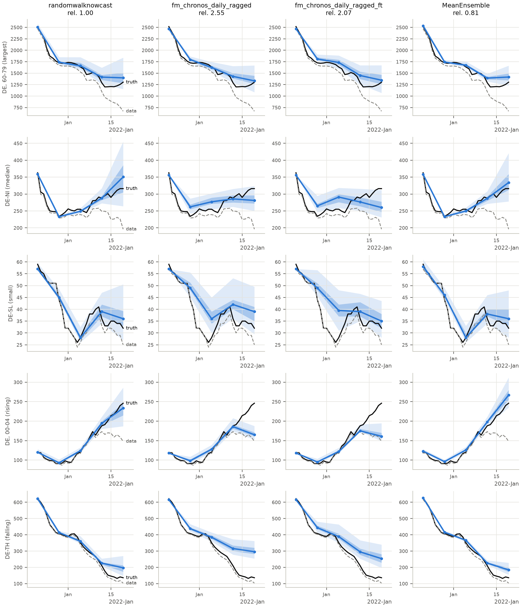
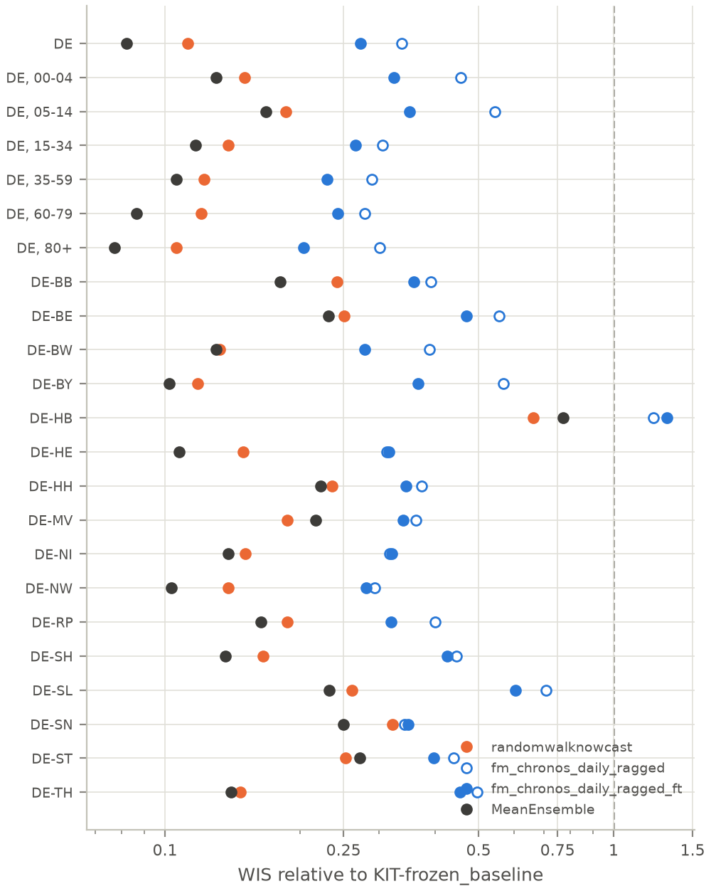
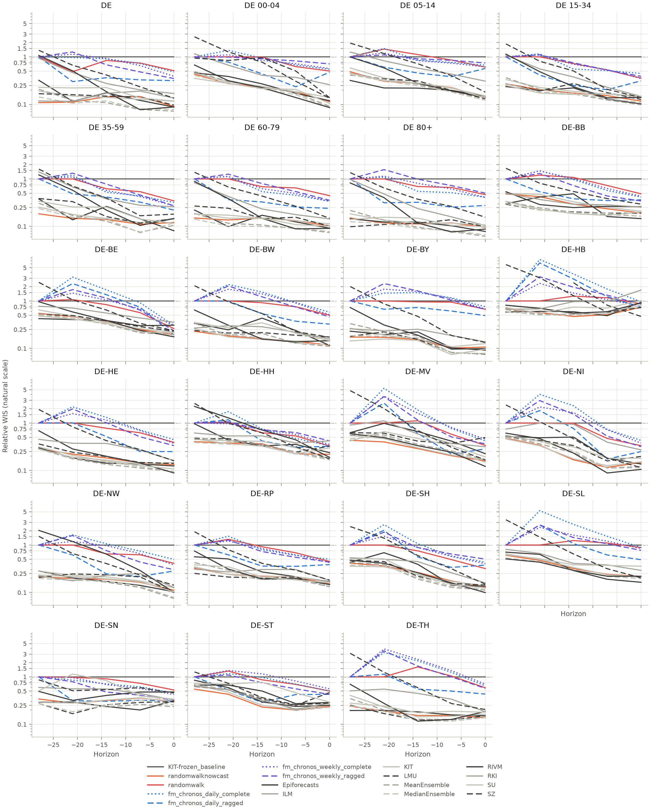
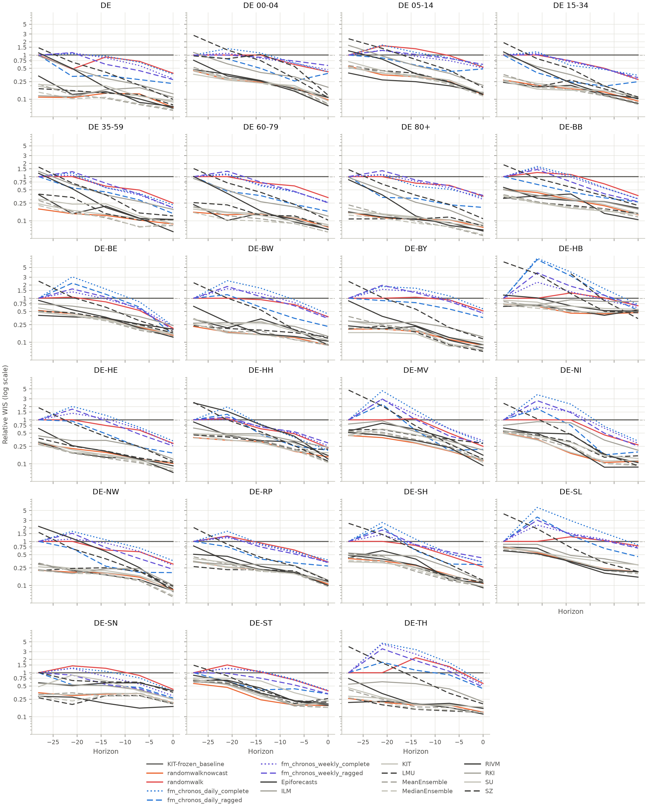
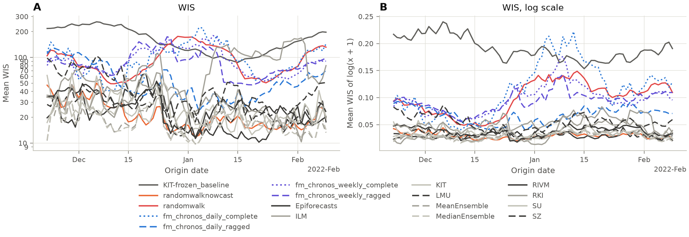
| study | model | metric | horizon | score | log_score | bias | coverage_50 | coverage_95 | n | rel_score | rel_log_score | rel_score_randomwalknowcast | rel_log_score_randomwalknowcast |
|---|---|---|---|---|---|---|---|---|---|---|---|---|---|
| germany | Epiforecasts | wis | -28 | 5.11 | 0.00657 | -0.192 | 0.444 | 0.774 | 1837 | 0.302 | 0.411 | 1.51 | 1.09 |
| germany | Epiforecasts | wis | -21 | 6.96 | 0.0117 | 0.126 | 0.378 | 0.763 | 1837 | 0.186 | 0.339 | 1.06 | 1.14 |
| germany | Epiforecasts | wis | -14 | 17.8 | 0.0218 | 0.232 | 0.306 | 0.701 | 1837 | 0.217 | 0.281 | 1.28 | 1.17 |
| germany | Epiforecasts | wis | -7 | 28.1 | 0.0344 | 0.0579 | 0.336 | 0.762 | 1837 | 0.144 | 0.177 | 0.924 | 0.951 |
| germany | Epiforecasts | wis | 0 | 55 | 0.0764 | -0.0418 | 0.413 | 0.872 | 1837 | 0.111 | 0.121 | 0.933 | 0.973 |
| germany | ILM | wis | -28 | 37.4 | 0.0194 | 0.783 | 0.214 | 0.61 | 518 | 0.98 | 1.15 | 6.81 | 4.27 |
| germany | ILM | wis | -21 | 40.5 | 0.0218 | 0.717 | 0.282 | 0.689 | 560 | 0.494 | 0.61 | 3.73 | 3.18 |
| germany | ILM | wis | -14 | 50.9 | 0.0277 | 0.662 | 0.305 | 0.725 | 560 | 0.284 | 0.358 | 1.99 | 2.05 |
| germany | ILM | wis | -7 | 88.2 | 0.0464 | 0.615 | 0.334 | 0.605 | 560 | 0.207 | 0.245 | 1.48 | 1.73 |
| germany | ILM | wis | 0 | 178 | 0.0891 | 0.611 | 0.261 | 0.546 | 518 | 0.17 | 0.143 | 1.8 | 1.74 |
| germany | KIT | wis | -28 | 4.32 | 0.00684 | 0.125 | 0.608 | 0.935 | 1840 | 0.256 | 0.428 | 1.28 | 1.13 |
| germany | KIT | wis | -21 | 7.31 | 0.0111 | 0.0219 | 0.566 | 0.932 | 1840 | 0.195 | 0.32 | 1.11 | 1.08 |
| germany | KIT | wis | -14 | 14 | 0.0191 | -0.0356 | 0.497 | 0.929 | 1840 | 0.171 | 0.246 | 1.01 | 1.02 |
| germany | KIT | wis | -7 | 29 | 0.0366 | -0.0226 | 0.467 | 0.929 | 1840 | 0.149 | 0.188 | 0.955 | 1.01 |
| germany | KIT | wis | 0 | 67.9 | 0.0865 | -0.0386 | 0.493 | 0.917 | 1840 | 0.137 | 0.137 | 1.15 | 1.1 |
| germany | KIT-frozen_baseline | wis | -28 | 16.9 | 0.016 | -0.843 | 0.114 | 0.114 | 1840 | 1 | 1 | 5.01 | 2.64 |
| germany | KIT-frozen_baseline | wis | -21 | 37.4 | 0.0347 | -0.92 | 0.0538 | 0.0538 | 1840 | 1 | 1 | 5.71 | 3.37 |
| germany | KIT-frozen_baseline | wis | -14 | 81.9 | 0.0778 | -0.974 | 0.0185 | 0.0185 | 1840 | 1 | 1 | 5.9 | 4.14 |
| germany | KIT-frozen_baseline | wis | -7 | 194 | 0.195 | -0.99 | 0 | 0 | 1840 | 1 | 1 | 6.41 | 5.38 |
| germany | KIT-frozen_baseline | wis | 0 | 496 | 0.63 | -0.979 | 0 | 0 | 1840 | 1 | 1 | 8.41 | 8.01 |
| germany | LMU | wis | -28 | 4.36 | 0.00637 | -0.163 | 0.41 | 0.77 | 1699 | 0.239 | 0.388 | 1.2 | 1.08 |
| germany | LMU | wis | -21 | 8.73 | 0.0117 | -0.108 | 0.292 | 0.672 | 1699 | 0.216 | 0.327 | 1.24 | 1.15 |
| germany | LMU | wis | -14 | 16 | 0.0218 | 0.184 | 0.232 | 0.557 | 1699 | 0.181 | 0.273 | 1.07 | 1.17 |
| germany | LMU | wis | -7 | 33.7 | 0.0396 | 0.0559 | 0.193 | 0.517 | 1699 | 0.16 | 0.198 | 1.03 | 1.11 |
| germany | LMU | wis | 0 | 69.2 | 0.0898 | 0.0541 | 0.217 | 0.536 | 1699 | 0.129 | 0.137 | 1.1 | 1.19 |
| germany | MeanEnsemble | wis | -28 | 4.61 | 0.00682 | 0.203 | 0.473 | 0.834 | 1840 | 0.273 | 0.426 | 1.37 | 1.13 |
| germany | MeanEnsemble | wis | -21 | 6.81 | 0.0108 | 0.203 | 0.436 | 0.832 | 1840 | 0.182 | 0.312 | 1.04 | 1.05 |
| germany | MeanEnsemble | wis | -14 | 12 | 0.018 | 0.205 | 0.39 | 0.796 | 1840 | 0.146 | 0.232 | 0.863 | 0.959 |
| germany | MeanEnsemble | wis | -7 | 20.8 | 0.0317 | 0.139 | 0.389 | 0.819 | 1840 | 0.107 | 0.163 | 0.684 | 0.877 |
| germany | MeanEnsemble | wis | 0 | 46.4 | 0.0687 | 0.119 | 0.406 | 0.862 | 1817 | 0.0942 | 0.109 | 0.803 | 0.881 |
| germany | MedianEnsemble | wis | -28 | 3.48 | 0.00576 | 0.0753 | 0.546 | 0.907 | 1840 | 0.206 | 0.36 | 1.03 | 0.952 |
| germany | MedianEnsemble | wis | -21 | 5.91 | 0.0097 | 0.117 | 0.454 | 0.864 | 1840 | 0.158 | 0.279 | 0.902 | 0.941 |
| germany | MedianEnsemble | wis | -14 | 12.1 | 0.0177 | 0.165 | 0.372 | 0.782 | 1840 | 0.148 | 0.227 | 0.871 | 0.941 |
| germany | MedianEnsemble | wis | -7 | 21.8 | 0.0327 | 0.11 | 0.351 | 0.776 | 1840 | 0.112 | 0.168 | 0.717 | 0.904 |
| germany | MedianEnsemble | wis | 0 | 49.1 | 0.0703 | 0.081 | 0.387 | 0.82 | 1817 | 0.0997 | 0.112 | 0.85 | 0.902 |
| germany | RIVM | wis | -28 | 16.4 | 0.0154 | 0.672 | 0.243 | 0.515 | 1840 | 0.972 | 0.963 | 4.86 | 2.55 |
| germany | RIVM | wis | -21 | 18.2 | 0.0193 | 0.579 | 0.229 | 0.532 | 1840 | 0.487 | 0.557 | 2.78 | 1.88 |
| germany | RIVM | wis | -14 | 18.7 | 0.026 | 0.392 | 0.224 | 0.546 | 1840 | 0.228 | 0.334 | 1.35 | 1.38 |
| germany | RIVM | wis | -7 | 26 | 0.043 | 0.242 | 0.243 | 0.574 | 1840 | 0.134 | 0.221 | 0.857 | 1.19 |
| germany | RIVM | wis | 0 | 60.5 | 0.0843 | 0.103 | 0.225 | 0.599 | 1840 | 0.122 | 0.134 | 1.03 | 1.07 |
| germany | RKI | wis | -28 | 4.19 | 0.00819 | -0.0231 | 0.288 | 0.441 | 1360 | 0.275 | 0.52 | 1.3 | 1.28 |
| germany | RKI | wis | -21 | 8.6 | 0.016 | 0.192 | 0.208 | 0.339 | 1360 | 0.255 | 0.465 | 1.35 | 1.41 |
| germany | RKI | wis | -14 | 20 | 0.0322 | 0.252 | 0.117 | 0.229 | 1360 | 0.27 | 0.411 | 1.48 | 1.57 |
| germany | RKI | wis | -7 | 41.7 | 0.0611 | 0.323 | 0.0757 | 0.201 | 1360 | 0.238 | 0.309 | 1.4 | 1.54 |
| germany | RKI | wis | 0 | 76 | 0.127 | 0.331 | 0.128 | 0.307 | 1360 | 0.17 | 0.201 | 1.37 | 1.46 |
| germany | SU | wis | -28 | 4.57 | 0.00659 | -0.0846 | 0.473 | 0.833 | 1840 | 0.271 | 0.412 | 1.36 | 1.09 |
| germany | SU | wis | -21 | 10.8 | 0.0134 | 0.0714 | 0.38 | 0.782 | 1840 | 0.288 | 0.385 | 1.64 | 1.3 |
| germany | SU | wis | -14 | 20.9 | 0.0244 | 0.106 | 0.337 | 0.72 | 1840 | 0.255 | 0.313 | 1.51 | 1.3 |
| germany | SU | wis | -7 | 30.7 | 0.0405 | 0.114 | 0.326 | 0.755 | 1840 | 0.158 | 0.208 | 1.01 | 1.12 |
| germany | SU | wis | 0 | 64.7 | 0.0855 | 0.191 | 0.365 | 0.813 | 1840 | 0.131 | 0.136 | 1.1 | 1.09 |
| germany | SZ | wis | -28 | 26.4 | 0.0349 | -0.276 | 0.0311 | 0.119 | 1771 | 1.54 | 2.17 | 7.7 | 5.76 |
| germany | SZ | wis | -21 | 27.3 | 0.0357 | -0.264 | 0.0924 | 0.252 | 1840 | 0.729 | 1.03 | 4.17 | 3.46 |
| germany | SZ | wis | -14 | 36.5 | 0.0429 | -0.249 | 0.146 | 0.368 | 1840 | 0.446 | 0.552 | 2.63 | 2.29 |
| germany | SZ | wis | -7 | 49.4 | 0.0563 | -0.152 | 0.207 | 0.512 | 1840 | 0.254 | 0.289 | 1.63 | 1.55 |
| germany | SZ | wis | 0 | 80.9 | 0.0985 | -0.0429 | 0.264 | 0.588 | 1840 | 0.163 | 0.156 | 1.37 | 1.25 |
| germany | fm_chronos_daily_complete | wis | -28 | 16.9 | 0.016 | -0.843 | 0.114 | 0.114 | 1840 | 1 | 1 | 5.01 | 2.64 |
| germany | fm_chronos_daily_complete | wis | -21 | 49.2 | 0.0726 | 0.27 | 0.134 | 0.34 | 1840 | 1.31 | 2.09 | 7.5 | 7.05 |
| germany | fm_chronos_daily_complete | wis | -14 | 73.4 | 0.099 | 0.354 | 0.22 | 0.576 | 1840 | 0.897 | 1.27 | 5.29 | 5.27 |
| germany | fm_chronos_daily_complete | wis | -7 | 136 | 0.145 | 0.113 | 0.193 | 0.504 | 1840 | 0.699 | 0.747 | 4.48 | 4.01 |
| germany | fm_chronos_daily_complete | wis | 0 | 233 | 0.242 | -0.0636 | 0.152 | 0.424 | 1840 | 0.471 | 0.384 | 3.96 | 3.08 |
| germany | fm_chronos_daily_ragged | wis | -28 | 16.9 | 0.016 | -0.843 | 0.114 | 0.114 | 1840 | 1 | 1 | 5.01 | 2.64 |
| germany | fm_chronos_daily_ragged | wis | -21 | 18.6 | 0.0388 | 0.552 | 0.219 | 0.613 | 1840 | 0.498 | 1.12 | 2.84 | 3.76 |
| germany | fm_chronos_daily_ragged | wis | -14 | 33.5 | 0.0474 | 0.316 | 0.258 | 0.655 | 1840 | 0.409 | 0.61 | 2.41 | 2.53 |
| germany | fm_chronos_daily_ragged | wis | -7 | 64 | 0.0737 | 0.068 | 0.252 | 0.639 | 1840 | 0.329 | 0.378 | 2.11 | 2.03 |
| germany | fm_chronos_daily_ragged | wis | 0 | 155 | 0.168 | -0.256 | 0.149 | 0.409 | 1840 | 0.313 | 0.266 | 2.63 | 2.14 |
| germany | fm_chronos_daily_ragged_ft | wis | -28 | 16.9 | 0.016 | -0.843 | 0.114 | 0.114 | 1840 | 1 | 1 | 5.01 | 2.64 |
| germany | fm_chronos_daily_ragged_ft | wis | -21 | 21.2 | 0.0405 | 0.712 | 0.243 | 0.645 | 1840 | 0.565 | 1.17 | 3.23 | 3.93 |
| germany | fm_chronos_daily_ragged_ft | wis | -14 | 28.5 | 0.0492 | 0.52 | 0.377 | 0.782 | 1840 | 0.348 | 0.633 | 2.05 | 2.62 |
| germany | fm_chronos_daily_ragged_ft | wis | -7 | 54.7 | 0.0672 | -0.0371 | 0.33 | 0.732 | 1840 | 0.281 | 0.345 | 1.8 | 1.85 |
| germany | fm_chronos_daily_ragged_ft | wis | 0 | 113 | 0.13 | -0.431 | 0.235 | 0.629 | 1840 | 0.228 | 0.206 | 1.92 | 1.65 |
| germany | fm_chronos_weekly_complete | wis | -28 | 16.9 | 0.016 | -0.843 | 0.114 | 0.114 | 1840 | 1 | 1 | 5.01 | 2.64 |
| germany | fm_chronos_weekly_complete | wis | -21 | 47.7 | 0.0516 | -0.211 | 0.343 | 0.683 | 1840 | 1.27 | 1.48 | 7.27 | 5 |
| germany | fm_chronos_weekly_complete | wis | -14 | 75.9 | 0.0769 | -0.0742 | 0.429 | 0.942 | 1840 | 0.927 | 0.989 | 5.46 | 4.09 |
| germany | fm_chronos_weekly_complete | wis | -7 | 130 | 0.127 | -0.0966 | 0.384 | 0.922 | 1840 | 0.667 | 0.653 | 4.28 | 3.51 |
| germany | fm_chronos_weekly_complete | wis | 0 | 207 | 0.22 | -0.104 | 0.343 | 0.921 | 1840 | 0.418 | 0.349 | 3.51 | 2.8 |
| germany | fm_chronos_weekly_ragged | wis | -28 | 16.9 | 0.016 | -0.843 | 0.114 | 0.114 | 1840 | 1 | 1 | 5.01 | 2.64 |
| germany | fm_chronos_weekly_ragged | wis | -21 | 54.4 | 0.0545 | 0.209 | 0.35 | 0.908 | 1840 | 1.45 | 1.57 | 8.29 | 5.29 |
| germany | fm_chronos_weekly_ragged | wis | -14 | 69.4 | 0.0708 | -0.000978 | 0.377 | 0.887 | 1840 | 0.848 | 0.91 | 5 | 3.77 |
| germany | fm_chronos_weekly_ragged | wis | -7 | 111 | 0.113 | -0.117 | 0.344 | 0.87 | 1840 | 0.571 | 0.582 | 3.66 | 3.13 |
| germany | fm_chronos_weekly_ragged | wis | 0 | 196 | 0.22 | -0.222 | 0.266 | 0.788 | 1840 | 0.396 | 0.349 | 3.33 | 2.8 |
| germany | fm_chronos_weekly_ragged_ft | wis | -28 | 16.9 | 0.016 | -0.843 | 0.114 | 0.114 | 1840 | 1 | 1 | 5.01 | 2.64 |
| germany | fm_chronos_weekly_ragged_ft | wis | -21 | 49.7 | 0.0618 | 0.187 | 0.346 | 0.853 | 1840 | 1.33 | 1.78 | 7.58 | 6 |
| germany | fm_chronos_weekly_ragged_ft | wis | -14 | 55.9 | 0.0711 | -0.092 | 0.264 | 0.847 | 1840 | 0.683 | 0.913 | 4.03 | 3.78 |
| germany | fm_chronos_weekly_ragged_ft | wis | -7 | 88.1 | 0.104 | -0.161 | 0.247 | 0.83 | 1840 | 0.453 | 0.533 | 2.91 | 2.87 |
| germany | fm_chronos_weekly_ragged_ft | wis | 0 | 132 | 0.164 | -0.259 | 0.249 | 0.808 | 1840 | 0.266 | 0.261 | 2.23 | 2.09 |
| germany | randomwalk | wis | -28 | 16.9 | 0.016 | -0.843 | 0.114 | 0.114 | 1840 | 1 | 1 | 5.01 | 2.64 |
| germany | randomwalk | wis | -21 | 31.7 | 0.0387 | -0.773 | 0.11 | 0.164 | 1840 | 0.847 | 1.11 | 4.84 | 3.75 |
| germany | randomwalk | wis | -14 | 67.2 | 0.076 | -0.255 | 0.291 | 0.641 | 1840 | 0.821 | 0.977 | 4.84 | 4.05 |
| germany | randomwalk | wis | -7 | 138 | 0.135 | -0.129 | 0.297 | 0.739 | 1840 | 0.709 | 0.695 | 4.55 | 3.74 |
| germany | randomwalk | wis | 0 | 237 | 0.232 | -0.0996 | 0.25 | 0.679 | 1840 | 0.477 | 0.368 | 4.01 | 2.95 |
| germany | randomwalknowcast | wis | -28 | 3.37 | 0.00605 | -0.226 | 0.636 | 0.917 | 1840 | 0.2 | 0.378 | 1 | 1 |
| germany | randomwalknowcast | wis | -21 | 6.56 | 0.0103 | -0.162 | 0.534 | 0.892 | 1840 | 0.175 | 0.297 | 1 | 1 |
| germany | randomwalknowcast | wis | -14 | 13.9 | 0.0188 | -0.131 | 0.458 | 0.882 | 1840 | 0.17 | 0.241 | 1 | 1 |
| germany | randomwalknowcast | wis | -7 | 30.3 | 0.0362 | -0.067 | 0.441 | 0.866 | 1840 | 0.156 | 0.186 | 1 | 1 |
| germany | randomwalknowcast | wis | 0 | 59 | 0.0786 | -0.0973 | 0.559 | 0.946 | 1840 | 0.119 | 0.125 | 1 | 1 |
| study | model | metric | location | stratum | score | log_score | bias | coverage_50 | coverage_95 | n | rel_score | rel_log_score | rel_score_randomwalknowcast | rel_log_score_randomwalknowcast |
|---|---|---|---|---|---|---|---|---|---|---|---|---|---|---|
| germany | Epiforecasts | wis | DE | 00-04 | 3.37 | 0.0199 | -0.366 | 0.422 | 0.902 | 400 | 0.155 | 0.149 | 1.03 | 1.07 |
| germany | Epiforecasts | wis | DE | 05-14 | 4.74 | 0.0282 | 0.0209 | 0.44 | 0.853 | 400 | 0.175 | 0.178 | 0.941 | 0.916 |
| germany | Epiforecasts | wis | DE | 15-34 | 14.8 | 0.0184 | -0.00588 | 0.37 | 0.835 | 400 | 0.123 | 0.104 | 0.889 | 0.887 |
| germany | Epiforecasts | wis | DE | 35-59 | 40.5 | 0.0202 | -0.188 | 0.233 | 0.623 | 400 | 0.121 | 0.087 | 0.986 | 0.922 |
| germany | Epiforecasts | wis | DE | 60-79 | 47.6 | 0.0182 | -0.179 | 0.28 | 0.69 | 400 | 0.111 | 0.0836 | 0.924 | 0.893 |
| germany | Epiforecasts | wis | DE | 80+ | 31 | 0.0147 | -0.14 | 0.307 | 0.795 | 400 | 0.0928 | 0.0735 | 0.875 | 0.868 |
| germany | Epiforecasts | wis | DE | all | 140 | 0.0174 | -0.323 | 0.215 | 0.527 | 400 | 0.11 | 0.0842 | 0.983 | 0.951 |
| germany | Epiforecasts | wis | DE-BB | all | 9.79 | 0.038 | 0.388 | 0.355 | 0.777 | 400 | 0.208 | 0.159 | 0.857 | 0.805 |
| germany | Epiforecasts | wis | DE-BE | all | 9.62 | 0.0378 | 0.134 | 0.403 | 0.792 | 400 | 0.323 | 0.236 | 1.28 | 1.17 |
| germany | Epiforecasts | wis | DE-BW | all | 30.3 | 0.0265 | -0.0144 | 0.318 | 0.693 | 400 | 0.18 | 0.132 | 1.35 | 1.26 |
| germany | Epiforecasts | wis | DE-BY | all | 27 | 0.02 | -0.0891 | 0.297 | 0.713 | 400 | 0.116 | 0.0995 | 0.979 | 0.917 |
| germany | Epiforecasts | wis | DE-HB | all | 4.99 | 0.0538 | 0.208 | 0.608 | 0.87 | 400 | 0.786 | 0.522 | 1.19 | 1.09 |
| germany | Epiforecasts | wis | DE-HE | all | 9.66 | 0.0201 | -0.0975 | 0.42 | 0.9 | 400 | 0.133 | 0.108 | 0.893 | 0.872 |
| germany | Epiforecasts | wis | DE-HH | all | 9.23 | 0.0566 | -0.121 | 0.478 | 0.826 | 385 | 0.288 | 0.219 | 1.23 | 1.28 |
| germany | Epiforecasts | wis | DE-MV | all | 10.1 | 0.0438 | 0.349 | 0.33 | 0.735 | 400 | 0.324 | 0.249 | 1.73 | 1.6 |
| germany | Epiforecasts | wis | DE-NI | all | 8.45 | 0.0241 | 0.25 | 0.398 | 0.78 | 400 | 0.183 | 0.152 | 1.21 | 1.19 |
| germany | Epiforecasts | wis | DE-NW | all | 30.6 | 0.0225 | -0.139 | 0.31 | 0.67 | 400 | 0.125 | 0.103 | 0.906 | 0.922 |
| germany | Epiforecasts | wis | DE-RP | all | 13 | 0.0404 | 0.161 | 0.32 | 0.718 | 400 | 0.211 | 0.17 | 1.13 | 1.11 |
| germany | Epiforecasts | wis | DE-SH | all | 4.82 | 0.0265 | 0.301 | 0.435 | 0.86 | 400 | 0.181 | 0.162 | 1.09 | 1.06 |
| germany | Epiforecasts | wis | DE-SL | all | 1.23 | 0.0228 | 0.195 | 0.667 | 0.98 | 400 | 0.217 | 0.217 | 0.833 | 0.837 |
| germany | Epiforecasts | wis | DE-SN | all | 37.2 | 0.0503 | 0.153 | 0.305 | 0.757 | 400 | 0.27 | 0.181 | 0.841 | 0.69 |
| germany | Epiforecasts | wis | DE-ST | all | 21.3 | 0.0548 | 0.00125 | 0.335 | 0.64 | 400 | 0.344 | 0.253 | 1.36 | 1.18 |
| germany | Epiforecasts | wis | DE-TH | all | 9.99 | 0.0202 | 0.333 | 0.39 | 0.875 | 400 | 0.158 | 0.134 | 1.07 | 0.907 |
| germany | ILM | wis | DE | 00-04 | 6.95 | 0.035 | 0.363 | 0.402 | 0.714 | 388 | 0.321 | 0.268 | 2.12 | 1.9 |
| germany | ILM | wis | DE | 05-14 | 10.9 | 0.0551 | 0.647 | 0.157 | 0.474 | 388 | 0.413 | 0.358 | 2.24 | 1.85 |
| germany | ILM | wis | DE | 15-34 | 25.3 | 0.0303 | 0.696 | 0.348 | 0.755 | 388 | 0.215 | 0.177 | 1.57 | 1.53 |
| germany | ILM | wis | DE | 35-59 | 101 | 0.0554 | 0.822 | 0.191 | 0.546 | 388 | 0.313 | 0.247 | 2.6 | 2.64 |
| germany | ILM | wis | DE | 60-79 | 79.2 | 0.039 | 0.74 | 0.278 | 0.686 | 388 | 0.193 | 0.184 | 1.62 | 1.97 |
| germany | ILM | wis | DE | 80+ | 56.1 | 0.0301 | 0.653 | 0.369 | 0.698 | 388 | 0.175 | 0.154 | 1.67 | 1.83 |
| germany | ILM | wis | DE | all | 267 | 0.0383 | 0.818 | 0.219 | 0.585 | 388 | 0.219 | 0.191 | 2.02 | 2.21 |
| germany | KIT | wis | DE | 00-04 | 3.6 | 0.0203 | -0.119 | 0.583 | 0.948 | 400 | 0.165 | 0.152 | 1.1 | 1.09 |
| germany | KIT | wis | DE | 05-14 | 5.35 | 0.0329 | 0.118 | 0.477 | 0.902 | 400 | 0.198 | 0.208 | 1.06 | 1.07 |
| germany | KIT | wis | DE | 15-34 | 18.9 | 0.0234 | -0.00188 | 0.537 | 0.988 | 400 | 0.157 | 0.132 | 1.14 | 1.13 |
| germany | KIT | wis | DE | 35-59 | 48 | 0.0259 | 0.138 | 0.557 | 0.99 | 400 | 0.143 | 0.111 | 1.17 | 1.18 |
| germany | KIT | wis | DE | 60-79 | 53.2 | 0.0217 | 0.0908 | 0.527 | 0.988 | 400 | 0.124 | 0.0994 | 1.03 | 1.06 |
| germany | KIT | wis | DE | 80+ | 38.1 | 0.0185 | 0.0751 | 0.59 | 0.988 | 400 | 0.114 | 0.0927 | 1.08 | 1.09 |
| germany | KIT | wis | DE | all | 157 | 0.0209 | 0.0929 | 0.56 | 0.993 | 400 | 0.124 | 0.101 | 1.11 | 1.14 |
| germany | KIT | wis | DE-BB | all | 12.1 | 0.0492 | -0.151 | 0.588 | 0.912 | 400 | 0.256 | 0.206 | 1.06 | 1.04 |
| germany | KIT | wis | DE-BE | all | 7.86 | 0.0334 | 0.0665 | 0.463 | 0.91 | 400 | 0.263 | 0.209 | 1.05 | 1.03 |
| germany | KIT | wis | DE-BW | all | 24.8 | 0.0235 | 0.128 | 0.502 | 0.963 | 400 | 0.147 | 0.118 | 1.11 | 1.12 |
| germany | KIT | wis | DE-BY | all | 30.7 | 0.0243 | 0.266 | 0.455 | 0.875 | 400 | 0.131 | 0.121 | 1.11 | 1.11 |
| germany | KIT | wis | DE-HB | all | 4.58 | 0.0527 | -0.0318 | 0.58 | 0.858 | 400 | 0.721 | 0.512 | 1.09 | 1.07 |
| germany | KIT | wis | DE-HE | all | 10.9 | 0.023 | -0.244 | 0.525 | 0.93 | 400 | 0.15 | 0.123 | 1 | 0.997 |
| germany | KIT | wis | DE-HH | all | 9.57 | 0.0527 | -0.0104 | 0.527 | 0.943 | 400 | 0.289 | 0.202 | 1.22 | 1.16 |
| germany | KIT | wis | DE-MV | all | 6.17 | 0.0287 | -0.0261 | 0.502 | 0.93 | 400 | 0.199 | 0.163 | 1.06 | 1.05 |
| germany | KIT | wis | DE-NI | all | 7.28 | 0.0211 | -0.0126 | 0.547 | 0.907 | 400 | 0.157 | 0.133 | 1.04 | 1.04 |
| germany | KIT | wis | DE-NW | all | 37.1 | 0.0271 | -0.119 | 0.522 | 0.955 | 400 | 0.152 | 0.124 | 1.1 | 1.11 |
| germany | KIT | wis | DE-RP | all | 11.6 | 0.0369 | 0.0598 | 0.42 | 0.885 | 400 | 0.188 | 0.155 | 1 | 1.02 |
| germany | KIT | wis | DE-SH | all | 4.41 | 0.0247 | -0.267 | 0.62 | 0.897 | 400 | 0.165 | 0.151 | 0.999 | 0.987 |
| germany | KIT | wis | DE-SL | all | 1.46 | 0.0269 | -0.016 | 0.632 | 0.938 | 400 | 0.257 | 0.256 | 0.987 | 0.987 |
| germany | KIT | wis | DE-SN | all | 43.3 | 0.0717 | 0.0872 | 0.525 | 0.94 | 400 | 0.314 | 0.258 | 0.978 | 0.983 |
| germany | KIT | wis | DE-ST | all | 16.8 | 0.051 | -0.106 | 0.405 | 0.802 | 400 | 0.271 | 0.236 | 1.07 | 1.1 |
| germany | KIT | wis | DE-TH | all | 10.4 | 0.0261 | 0.212 | 0.458 | 0.917 | 400 | 0.164 | 0.172 | 1.12 | 1.17 |
| germany | KIT-frozen_baseline | wis | DE | 00-04 | 21.8 | 0.133 | -0.912 | 0.0625 | 0.0625 | 400 | 1 | 1 | 6.64 | 7.16 |
| germany | KIT-frozen_baseline | wis | DE | 05-14 | 27.1 | 0.159 | -0.875 | 0.035 | 0.035 | 400 | 1 | 1 | 5.38 | 5.16 |
| germany | KIT-frozen_baseline | wis | DE | 15-34 | 120 | 0.177 | -1 | 0 | 0 | 400 | 1 | 1 | 7.23 | 8.55 |
| germany | KIT-frozen_baseline | wis | DE | 35-59 | 335 | 0.232 | -1 | 0 | 0 | 400 | 1 | 1 | 8.17 | 10.6 |
| germany | KIT-frozen_baseline | wis | DE | 60-79 | 427 | 0.218 | -1 | 0 | 0 | 400 | 1 | 1 | 8.31 | 10.7 |
| germany | KIT-frozen_baseline | wis | DE | 80+ | 334 | 0.2 | -1 | 0 | 0 | 400 | 1 | 1 | 9.43 | 11.8 |
| germany | KIT-frozen_baseline | wis | DE | all | 1.27e+03 | 0.207 | -1 | 0 | 0 | 400 | 1 | 1 | 8.89 | 11.3 |
| germany | KIT-frozen_baseline | wis | DE-BB | all | 47.2 | 0.239 | -0.988 | 0.0075 | 0.0075 | 400 | 1 | 1 | 4.13 | 5.07 |
| germany | KIT-frozen_baseline | wis | DE-BE | all | 29.8 | 0.16 | -0.948 | 0.0425 | 0.0425 | 400 | 1 | 1 | 3.98 | 4.95 |
| germany | KIT-frozen_baseline | wis | DE-BW | all | 169 | 0.2 | -1 | 0 | 0 | 400 | 1 | 1 | 7.54 | 9.54 |
| germany | KIT-frozen_baseline | wis | DE-BY | all | 233 | 0.201 | -1 | 0 | 0 | 400 | 1 | 1 | 8.46 | 9.22 |
| germany | KIT-frozen_baseline | wis | DE-HB | all | 6.35 | 0.103 | -0.585 | 0.245 | 0.245 | 400 | 1 | 1 | 1.51 | 2.09 |
| germany | KIT-frozen_baseline | wis | DE-HE | all | 72.6 | 0.187 | -0.988 | 0.0125 | 0.0125 | 400 | 1 | 1 | 6.7 | 8.09 |
| germany | KIT-frozen_baseline | wis | DE-HH | all | 33.1 | 0.261 | -0.965 | 0.035 | 0.035 | 400 | 1 | 1 | 4.24 | 5.77 |
| germany | KIT-frozen_baseline | wis | DE-MV | all | 31.1 | 0.176 | -0.907 | 0.0675 | 0.0675 | 400 | 1 | 1 | 5.33 | 6.44 |
| germany | KIT-frozen_baseline | wis | DE-NI | all | 46.2 | 0.158 | -0.853 | 0.0125 | 0.0125 | 400 | 1 | 1 | 6.61 | 7.83 |
| germany | KIT-frozen_baseline | wis | DE-NW | all | 244 | 0.218 | -1 | 0 | 0 | 400 | 1 | 1 | 7.24 | 8.96 |
| germany | KIT-frozen_baseline | wis | DE-RP | all | 61.7 | 0.238 | -0.98 | 0.01 | 0.01 | 400 | 1 | 1 | 5.34 | 6.56 |
| germany | KIT-frozen_baseline | wis | DE-SH | all | 26.7 | 0.164 | -0.955 | 0.045 | 0.045 | 400 | 1 | 1 | 6.05 | 6.54 |
| germany | KIT-frozen_baseline | wis | DE-SL | all | 5.66 | 0.105 | -0.735 | 0.245 | 0.245 | 400 | 1 | 1 | 3.83 | 3.85 |
| germany | KIT-frozen_baseline | wis | DE-SN | all | 138 | 0.278 | -1 | 0 | 0 | 400 | 1 | 1 | 3.11 | 3.81 |
| germany | KIT-frozen_baseline | wis | DE-ST | all | 62.1 | 0.217 | -0.978 | 0.0225 | 0.0225 | 400 | 1 | 1 | 3.96 | 4.68 |
| germany | KIT-frozen_baseline | wis | DE-TH | all | 63.2 | 0.151 | -0.985 | 0.015 | 0.015 | 400 | 1 | 1 | 6.79 | 6.78 |
| germany | LMU | wis | DE | 00-04 | 6.52 | 0.0412 | 0.783 | 0.16 | 0.5 | 400 | 0.299 | 0.308 | 1.99 | 2.21 |
| germany | LMU | wis | DE | 05-14 | 4.88 | 0.0321 | 0.485 | 0.305 | 0.69 | 400 | 0.18 | 0.202 | 0.969 | 1.04 |
| germany | LMU | wis | DE | 15-34 | 18.5 | 0.0235 | 0.377 | 0.247 | 0.608 | 400 | 0.154 | 0.133 | 1.11 | 1.14 |
| germany | LMU | wis | DE | 35-59 | 50.6 | 0.0277 | -0.452 | 0.128 | 0.34 | 400 | 0.151 | 0.119 | 1.23 | 1.26 |
| germany | LMU | wis | DE | 60-79 | 55.4 | 0.0215 | -0.494 | 0.122 | 0.385 | 400 | 0.13 | 0.0987 | 1.08 | 1.05 |
| germany | LMU | wis | DE | 80+ | 36.7 | 0.018 | -0.145 | 0.245 | 0.605 | 400 | 0.11 | 0.0903 | 1.04 | 1.07 |
| germany | LMU | wis | DE | all | 148 | 0.0196 | -0.303 | 0.102 | 0.302 | 400 | 0.117 | 0.0948 | 1.04 | 1.07 |
| germany | LMU | wis | DE-BB | all | 9.23 | 0.0409 | -0.0773 | 0.338 | 0.745 | 400 | 0.196 | 0.171 | 0.808 | 0.867 |
| germany | LMU | wis | DE-BE | all | 8.27 | 0.0348 | 0.108 | 0.292 | 0.67 | 400 | 0.277 | 0.217 | 1.1 | 1.08 |
| germany | LMU | wis | DE-BW | all | 31 | 0.0293 | -0.17 | 0.282 | 0.532 | 400 | 0.184 | 0.146 | 1.38 | 1.4 |
| germany | LMU | wis | DE-BY | all | 22.1 | 0.0167 | 0.0131 | 0.255 | 0.605 | 400 | 0.0947 | 0.0828 | 0.801 | 0.764 |
| germany | LMU | wis | DE-HB | all | 2.42 | 0.0483 | 0.394 | 0.589 | 0.874 | 95 | 0.61 | 0.54 | 1.84 | 1.68 |
| germany | LMU | wis | DE-HE | all | 11.2 | 0.0238 | -0.189 | 0.333 | 0.705 | 400 | 0.154 | 0.127 | 1.03 | 1.03 |
| germany | LMU | wis | DE-HH | all | 10.4 | 0.0611 | -0.218 | 0.345 | 0.725 | 400 | 0.315 | 0.234 | 1.33 | 1.35 |
| germany | LMU | wis | DE-MV | all | 14.4 | 0.0574 | 0.0636 | 0.305 | 0.64 | 400 | 0.464 | 0.326 | 2.47 | 2.1 |
| germany | LMU | wis | DE-NI | all | 9.64 | 0.0273 | 0.16 | 0.305 | 0.735 | 400 | 0.208 | 0.172 | 1.38 | 1.35 |
| germany | LMU | wis | DE-NW | all | 35.5 | 0.0279 | -0.186 | 0.182 | 0.487 | 400 | 0.145 | 0.128 | 1.05 | 1.14 |
| germany | LMU | wis | DE-RP | all | 10.1 | 0.0336 | 0.0461 | 0.355 | 0.757 | 400 | 0.164 | 0.141 | 0.876 | 0.926 |
| germany | LMU | wis | DE-SH | all | 4.47 | 0.0256 | -0.146 | 0.505 | 0.882 | 400 | 0.167 | 0.156 | 1.01 | 1.02 |
| germany | LMU | wis | DE-SN | all | 38.5 | 0.0653 | 0.25 | 0.175 | 0.445 | 400 | 0.279 | 0.235 | 0.869 | 0.895 |
| germany | LMU | wis | DE-ST | all | 25.4 | 0.0606 | -0.0419 | 0.195 | 0.557 | 400 | 0.409 | 0.28 | 1.62 | 1.31 |
| germany | LMU | wis | DE-TH | all | 9.17 | 0.02 | 0.138 | 0.39 | 0.84 | 400 | 0.145 | 0.132 | 0.986 | 0.898 |
| germany | MeanEnsemble | wis | DE | 00-04 | 2.83 | 0.017 | 0.218 | 0.496 | 0.917 | 399 | 0.13 | 0.128 | 0.864 | 0.913 |
| germany | MeanEnsemble | wis | DE | 05-14 | 4.52 | 0.0298 | 0.334 | 0.346 | 0.815 | 399 | 0.168 | 0.189 | 0.903 | 0.972 |
| germany | MeanEnsemble | wis | DE | 15-34 | 14 | 0.0177 | 0.352 | 0.416 | 0.855 | 399 | 0.117 | 0.101 | 0.847 | 0.862 |
| germany | MeanEnsemble | wis | DE | 35-59 | 35.2 | 0.0196 | 0.392 | 0.378 | 0.83 | 399 | 0.106 | 0.0852 | 0.869 | 0.904 |
| germany | MeanEnsemble | wis | DE | 60-79 | 36.6 | 0.0156 | 0.236 | 0.368 | 0.862 | 399 | 0.0863 | 0.0719 | 0.724 | 0.774 |
| germany | MeanEnsemble | wis | DE | 80+ | 25.5 | 0.0125 | 0.246 | 0.416 | 0.897 | 399 | 0.0771 | 0.063 | 0.73 | 0.747 |
| germany | MeanEnsemble | wis | DE | all | 103 | 0.0142 | 0.315 | 0.361 | 0.807 | 399 | 0.0822 | 0.0689 | 0.74 | 0.786 |
| germany | MeanEnsemble | wis | DE-BB | all | 8.47 | 0.0368 | 0.0677 | 0.434 | 0.87 | 399 | 0.181 | 0.155 | 0.75 | 0.788 |
| germany | MeanEnsemble | wis | DE-BE | all | 6.86 | 0.0287 | 0.145 | 0.411 | 0.807 | 399 | 0.232 | 0.181 | 0.918 | 0.891 |
| germany | MeanEnsemble | wis | DE-BW | all | 21.7 | 0.0207 | 0.131 | 0.333 | 0.767 | 399 | 0.13 | 0.104 | 0.985 | 0.999 |
| germany | MeanEnsemble | wis | DE-BY | all | 23.5 | 0.0184 | 0.201 | 0.401 | 0.729 | 399 | 0.102 | 0.0919 | 0.86 | 0.843 |
| germany | MeanEnsemble | wis | DE-HB | all | 4.88 | 0.0528 | 0.125 | 0.594 | 0.877 | 399 | 0.771 | 0.515 | 1.16 | 1.07 |
| germany | MeanEnsemble | wis | DE-HE | all | 7.77 | 0.0164 | -0.144 | 0.494 | 0.917 | 399 | 0.108 | 0.088 | 0.722 | 0.712 |
| germany | MeanEnsemble | wis | DE-HH | all | 7.33 | 0.043 | 0.154 | 0.411 | 0.842 | 399 | 0.222 | 0.166 | 0.939 | 0.954 |
| germany | MeanEnsemble | wis | DE-MV | all | 6.68 | 0.0302 | 0.0893 | 0.398 | 0.825 | 399 | 0.217 | 0.173 | 1.17 | 1.13 |
| germany | MeanEnsemble | wis | DE-NI | all | 6.35 | 0.0186 | 0.114 | 0.429 | 0.88 | 399 | 0.138 | 0.118 | 0.915 | 0.924 |
| germany | MeanEnsemble | wis | DE-NW | all | 25.1 | 0.019 | 0.156 | 0.358 | 0.769 | 399 | 0.103 | 0.0875 | 0.746 | 0.783 |
| germany | MeanEnsemble | wis | DE-RP | all | 10 | 0.0325 | 0.123 | 0.348 | 0.784 | 399 | 0.163 | 0.137 | 0.871 | 0.899 |
| germany | MeanEnsemble | wis | DE-SH | all | 3.62 | 0.0204 | -0.0353 | 0.566 | 0.92 | 399 | 0.136 | 0.125 | 0.822 | 0.817 |
| germany | MeanEnsemble | wis | DE-SL | all | 1.31 | 0.0247 | 0.126 | 0.664 | 0.972 | 399 | 0.232 | 0.236 | 0.892 | 0.908 |
| germany | MeanEnsemble | wis | DE-SN | all | 34.1 | 0.0663 | 0.379 | 0.293 | 0.604 | 399 | 0.25 | 0.241 | 0.786 | 0.928 |
| germany | MeanEnsemble | wis | DE-ST | all | 16.8 | 0.0478 | 0.0183 | 0.261 | 0.657 | 399 | 0.271 | 0.221 | 1.07 | 1.03 |
| germany | MeanEnsemble | wis | DE-TH | all | 8.78 | 0.0214 | 0.257 | 0.449 | 0.85 | 399 | 0.14 | 0.142 | 0.951 | 0.962 |
| germany | MedianEnsemble | wis | DE | 00-04 | 2.63 | 0.0156 | 0.0627 | 0.511 | 0.95 | 399 | 0.121 | 0.118 | 0.803 | 0.842 |
| germany | MedianEnsemble | wis | DE | 05-14 | 4.42 | 0.0294 | 0.292 | 0.398 | 0.794 | 399 | 0.164 | 0.187 | 0.883 | 0.959 |
| germany | MedianEnsemble | wis | DE | 15-34 | 14.9 | 0.0186 | 0.312 | 0.371 | 0.83 | 399 | 0.125 | 0.106 | 0.901 | 0.904 |
| germany | MedianEnsemble | wis | DE | 35-59 | 37.6 | 0.0209 | 0.233 | 0.401 | 0.845 | 399 | 0.113 | 0.0907 | 0.928 | 0.964 |
| germany | MedianEnsemble | wis | DE | 60-79 | 36.6 | 0.0149 | 0.126 | 0.396 | 0.867 | 399 | 0.0864 | 0.0687 | 0.725 | 0.74 |
| germany | MedianEnsemble | wis | DE | 80+ | 25.3 | 0.0122 | 0.184 | 0.409 | 0.887 | 399 | 0.0765 | 0.0616 | 0.725 | 0.73 |
| germany | MedianEnsemble | wis | DE | all | 108 | 0.0145 | 0.193 | 0.366 | 0.802 | 399 | 0.0857 | 0.0706 | 0.771 | 0.806 |
| germany | MedianEnsemble | wis | DE-BB | all | 8.45 | 0.0369 | -0.0143 | 0.434 | 0.83 | 399 | 0.18 | 0.156 | 0.748 | 0.792 |
| germany | MedianEnsemble | wis | DE-BE | all | 6.89 | 0.0292 | 0.0917 | 0.404 | 0.812 | 399 | 0.233 | 0.184 | 0.921 | 0.906 |
| germany | MedianEnsemble | wis | DE-BW | all | 21.9 | 0.0209 | 0.0554 | 0.358 | 0.754 | 399 | 0.131 | 0.105 | 0.996 | 1.01 |
| germany | MedianEnsemble | wis | DE-BY | all | 22 | 0.0177 | 0.224 | 0.404 | 0.799 | 399 | 0.0956 | 0.0884 | 0.806 | 0.811 |
| germany | MedianEnsemble | wis | DE-HB | all | 4.88 | 0.0528 | 0.125 | 0.594 | 0.872 | 399 | 0.769 | 0.515 | 1.16 | 1.07 |
| germany | MedianEnsemble | wis | DE-HE | all | 8.05 | 0.0169 | -0.156 | 0.449 | 0.902 | 399 | 0.112 | 0.091 | 0.748 | 0.736 |
| germany | MedianEnsemble | wis | DE-HH | all | 6.85 | 0.04 | 0.0377 | 0.481 | 0.885 | 399 | 0.207 | 0.154 | 0.878 | 0.887 |
| germany | MedianEnsemble | wis | DE-MV | all | 6.09 | 0.0282 | 0.103 | 0.388 | 0.81 | 399 | 0.198 | 0.162 | 1.07 | 1.06 |
| germany | MedianEnsemble | wis | DE-NI | all | 6.23 | 0.0184 | 0.109 | 0.404 | 0.865 | 399 | 0.136 | 0.117 | 0.896 | 0.913 |
| germany | MedianEnsemble | wis | DE-NW | all | 25.9 | 0.0195 | -0.0753 | 0.383 | 0.789 | 399 | 0.106 | 0.0898 | 0.77 | 0.804 |
| germany | MedianEnsemble | wis | DE-RP | all | 10 | 0.0326 | 0.0856 | 0.386 | 0.799 | 399 | 0.163 | 0.137 | 0.87 | 0.9 |
| germany | MedianEnsemble | wis | DE-SH | all | 3.73 | 0.0209 | -0.122 | 0.561 | 0.907 | 399 | 0.14 | 0.129 | 0.846 | 0.839 |
| germany | MedianEnsemble | wis | DE-SL | all | 1.32 | 0.0249 | 0.0952 | 0.624 | 0.97 | 399 | 0.233 | 0.238 | 0.895 | 0.918 |
| germany | MedianEnsemble | wis | DE-SN | all | 36.7 | 0.0707 | 0.3 | 0.268 | 0.564 | 399 | 0.269 | 0.257 | 0.847 | 0.99 |
| germany | MedianEnsemble | wis | DE-ST | all | 16.7 | 0.0482 | 0.0119 | 0.261 | 0.642 | 399 | 0.27 | 0.223 | 1.07 | 1.04 |
| germany | MedianEnsemble | wis | DE-TH | all | 8.44 | 0.0201 | 0.25 | 0.459 | 0.907 | 399 | 0.135 | 0.134 | 0.914 | 0.905 |
| germany | RIVM | wis | DE | 00-04 | 2.68 | 0.0165 | 0.29 | 0.453 | 0.88 | 400 | 0.123 | 0.124 | 0.818 | 0.887 |
| germany | RIVM | wis | DE | 05-14 | 5.53 | 0.0384 | 0.472 | 0.242 | 0.588 | 400 | 0.205 | 0.242 | 1.1 | 1.25 |
| germany | RIVM | wis | DE | 15-34 | 21 | 0.0265 | 0.658 | 0.152 | 0.417 | 400 | 0.175 | 0.15 | 1.26 | 1.28 |
| germany | RIVM | wis | DE | 35-59 | 59.5 | 0.033 | 0.751 | 0.065 | 0.27 | 400 | 0.177 | 0.142 | 1.45 | 1.51 |
| germany | RIVM | wis | DE | 60-79 | 54.9 | 0.0233 | 0.584 | 0.122 | 0.33 | 400 | 0.129 | 0.107 | 1.07 | 1.14 |
| germany | RIVM | wis | DE | 80+ | 40.8 | 0.0196 | 0.51 | 0.102 | 0.37 | 400 | 0.122 | 0.0981 | 1.15 | 1.16 |
| germany | RIVM | wis | DE | all | 170 | 0.0234 | 0.674 | 0.0925 | 0.235 | 400 | 0.134 | 0.113 | 1.19 | 1.28 |
| germany | RIVM | wis | DE-BB | all | 12.7 | 0.0561 | 0.219 | 0.22 | 0.537 | 400 | 0.268 | 0.235 | 1.11 | 1.19 |
| germany | RIVM | wis | DE-BE | all | 7.39 | 0.0319 | 0.421 | 0.21 | 0.575 | 400 | 0.248 | 0.199 | 0.987 | 0.988 |
| germany | RIVM | wis | DE-BW | all | 26.9 | 0.0256 | 0.528 | 0.185 | 0.507 | 400 | 0.159 | 0.128 | 1.2 | 1.22 |
| germany | RIVM | wis | DE-BY | all | 30.6 | 0.0258 | 0.738 | 0.133 | 0.445 | 400 | 0.131 | 0.128 | 1.11 | 1.18 |
| germany | RIVM | wis | DE-HB | all | 5.07 | 0.0567 | 0.363 | 0.495 | 0.815 | 400 | 0.798 | 0.551 | 1.2 | 1.15 |
| germany | RIVM | wis | DE-HE | all | 9.05 | 0.0187 | 0.163 | 0.3 | 0.71 | 400 | 0.125 | 0.1 | 0.836 | 0.811 |
| germany | RIVM | wis | DE-HH | all | 12 | 0.0819 | 0.501 | 0.147 | 0.403 | 400 | 0.362 | 0.313 | 1.53 | 1.81 |
| germany | RIVM | wis | DE-MV | all | 5.55 | 0.0262 | 0.106 | 0.333 | 0.752 | 400 | 0.179 | 0.149 | 0.953 | 0.96 |
| germany | RIVM | wis | DE-NI | all | 5.85 | 0.0176 | 0.129 | 0.347 | 0.805 | 400 | 0.126 | 0.111 | 0.836 | 0.87 |
| germany | RIVM | wis | DE-NW | all | 65 | 0.0466 | 0.578 | 0.107 | 0.3 | 400 | 0.266 | 0.213 | 1.92 | 1.91 |
| germany | RIVM | wis | DE-RP | all | 11.1 | 0.0359 | 0.356 | 0.19 | 0.62 | 400 | 0.18 | 0.151 | 0.962 | 0.988 |
| germany | RIVM | wis | DE-SH | all | 3.82 | 0.0224 | -0.0484 | 0.383 | 0.828 | 400 | 0.143 | 0.137 | 0.865 | 0.894 |
| germany | RIVM | wis | DE-SL | all | 1.38 | 0.0258 | 0.152 | 0.593 | 0.94 | 400 | 0.244 | 0.246 | 0.934 | 0.948 |
| germany | RIVM | wis | DE-SN | all | 62.8 | 0.13 | 0.347 | 0.09 | 0.273 | 400 | 0.456 | 0.469 | 1.42 | 1.79 |
| germany | RIVM | wis | DE-ST | all | 18.3 | 0.0558 | 0.198 | 0.142 | 0.435 | 400 | 0.294 | 0.258 | 1.17 | 1.21 |
| germany | RIVM | wis | DE-TH | all | 11.3 | 0.0268 | 0.45 | 0.253 | 0.688 | 400 | 0.178 | 0.177 | 1.21 | 1.2 |
| germany | RKI | wis | DE | all | 191 | 0.0268 | 0.076 | 0.11 | 0.343 | 400 | 0.151 | 0.13 | 1.34 | 1.47 |
| germany | RKI | wis | DE-BB | all | 13.2 | 0.0547 | -0.217 | 0.125 | 0.273 | 400 | 0.28 | 0.228 | 1.15 | 1.16 |
| germany | RKI | wis | DE-BE | all | 12.5 | 0.0514 | 0.333 | 0.135 | 0.235 | 400 | 0.421 | 0.321 | 1.68 | 1.59 |
| germany | RKI | wis | DE-BW | all | 32 | 0.0341 | 0.409 | 0.18 | 0.355 | 400 | 0.19 | 0.17 | 1.43 | 1.63 |
| germany | RKI | wis | DE-BY | all | 39.3 | 0.0337 | 0.217 | 0.177 | 0.32 | 400 | 0.168 | 0.167 | 1.43 | 1.54 |
| germany | RKI | wis | DE-HB | all | 9.03 | 0.087 | 0.507 | 0.343 | 0.425 | 400 | 1.42 | 0.845 | 2.14 | 1.77 |
| germany | RKI | wis | DE-HE | all | 15.5 | 0.0333 | 0.303 | 0.158 | 0.275 | 400 | 0.213 | 0.178 | 1.43 | 1.44 |
| germany | RKI | wis | DE-HH | all | 14.2 | 0.0755 | -0.154 | 0.147 | 0.27 | 400 | 0.429 | 0.289 | 1.82 | 1.67 |
| germany | RKI | wis | DE-MV | all | 11.6 | 0.0484 | 0.485 | 0.128 | 0.287 | 400 | 0.373 | 0.275 | 1.99 | 1.77 |
| germany | RKI | wis | DE-NI | all | 16.7 | 0.046 | 0.691 | 0.115 | 0.215 | 400 | 0.362 | 0.29 | 2.39 | 2.27 |
| germany | RKI | wis | DE-NW | all | 41.1 | 0.0313 | 0.00725 | 0.158 | 0.345 | 400 | 0.168 | 0.143 | 1.22 | 1.28 |
| germany | RKI | wis | DE-RP | all | 14.2 | 0.0449 | -0.202 | 0.182 | 0.305 | 400 | 0.23 | 0.188 | 1.23 | 1.24 |
| germany | RKI | wis | DE-SH | all | 6 | 0.0323 | 0.291 | 0.225 | 0.38 | 400 | 0.225 | 0.197 | 1.36 | 1.29 |
| germany | RKI | wis | DE-SL | all | 2.01 | 0.0393 | 0.38 | 0.297 | 0.47 | 400 | 0.356 | 0.375 | 1.36 | 1.44 |
| germany | RKI | wis | DE-SN | all | 58 | 0.0935 | -0.178 | 0.0625 | 0.128 | 400 | 0.421 | 0.336 | 1.31 | 1.28 |
| germany | RKI | wis | DE-ST | all | 18.3 | 0.0548 | -0.0451 | 0.133 | 0.295 | 400 | 0.295 | 0.253 | 1.17 | 1.18 |
| germany | RKI | wis | DE-TH | all | 16.5 | 0.0447 | 0.752 | 0.102 | 0.24 | 400 | 0.262 | 0.295 | 1.78 | 2 |
| germany | SU | wis | DE | 00-04 | 3.07 | 0.0178 | 0.026 | 0.502 | 0.92 | 400 | 0.141 | 0.134 | 0.936 | 0.956 |
| germany | SU | wis | DE | 05-14 | 5.03 | 0.0331 | 0.24 | 0.357 | 0.767 | 400 | 0.186 | 0.209 | 1 | 1.08 |
| germany | SU | wis | DE | 15-34 | 18.8 | 0.023 | 0.204 | 0.34 | 0.755 | 400 | 0.156 | 0.13 | 1.13 | 1.11 |
| germany | SU | wis | DE | 35-59 | 48.6 | 0.0264 | -0.0117 | 0.237 | 0.65 | 400 | 0.145 | 0.114 | 1.18 | 1.2 |
| germany | SU | wis | DE | 60-79 | 48.5 | 0.0195 | 0.0104 | 0.36 | 0.797 | 400 | 0.113 | 0.0894 | 0.942 | 0.954 |
| germany | SU | wis | DE | 80+ | 36.5 | 0.0171 | 0.0574 | 0.362 | 0.833 | 400 | 0.109 | 0.0855 | 1.03 | 1.01 |
| germany | SU | wis | DE | all | 177 | 0.0231 | -0.115 | 0.207 | 0.61 | 400 | 0.14 | 0.112 | 1.24 | 1.27 |
| germany | SU | wis | DE-BB | all | 9.27 | 0.0386 | 0.027 | 0.42 | 0.863 | 400 | 0.197 | 0.161 | 0.812 | 0.817 |
| germany | SU | wis | DE-BE | all | 7.3 | 0.0311 | -0.174 | 0.422 | 0.83 | 400 | 0.245 | 0.194 | 0.974 | 0.96 |
| germany | SU | wis | DE-BW | all | 31.3 | 0.0288 | 0.0686 | 0.315 | 0.74 | 400 | 0.185 | 0.144 | 1.4 | 1.37 |
| germany | SU | wis | DE-BY | all | 23.4 | 0.019 | -0.0814 | 0.398 | 0.85 | 400 | 0.1 | 0.0942 | 0.849 | 0.868 |
| germany | SU | wis | DE-HB | all | 5.74 | 0.0595 | 0.0369 | 0.53 | 0.807 | 400 | 0.904 | 0.578 | 1.36 | 1.21 |
| germany | SU | wis | DE-HE | all | 8.88 | 0.0188 | -0.09 | 0.455 | 0.88 | 400 | 0.122 | 0.1 | 0.821 | 0.812 |
| germany | SU | wis | DE-HH | all | 7.97 | 0.0492 | 0.211 | 0.398 | 0.815 | 400 | 0.24 | 0.188 | 1.02 | 1.08 |
| germany | SU | wis | DE-MV | all | 8.06 | 0.0345 | 0.156 | 0.388 | 0.752 | 400 | 0.259 | 0.196 | 1.38 | 1.26 |
| germany | SU | wis | DE-NI | all | 9.27 | 0.0253 | 0.103 | 0.388 | 0.843 | 400 | 0.201 | 0.16 | 1.33 | 1.25 |
| germany | SU | wis | DE-NW | all | 32.5 | 0.0239 | -0.0363 | 0.323 | 0.73 | 400 | 0.133 | 0.109 | 0.961 | 0.979 |
| germany | SU | wis | DE-RP | all | 11.3 | 0.0362 | -0.0413 | 0.417 | 0.812 | 400 | 0.183 | 0.152 | 0.976 | 0.998 |
| germany | SU | wis | DE-SH | all | 4.19 | 0.0223 | -0.0366 | 0.51 | 0.897 | 400 | 0.157 | 0.136 | 0.949 | 0.891 |
| germany | SU | wis | DE-SL | all | 2.13 | 0.0358 | 0.249 | 0.53 | 0.95 | 400 | 0.377 | 0.342 | 1.44 | 1.32 |
| germany | SU | wis | DE-SN | all | 68.8 | 0.102 | 0.568 | 0.212 | 0.485 | 400 | 0.499 | 0.367 | 1.55 | 1.4 |
| germany | SU | wis | DE-ST | all | 26.4 | 0.0722 | 0.136 | 0.19 | 0.49 | 400 | 0.426 | 0.334 | 1.69 | 1.56 |
| germany | SU | wis | DE-TH | all | 11.7 | 0.0265 | 0.323 | 0.393 | 0.875 | 400 | 0.185 | 0.175 | 1.26 | 1.19 |
| germany | SZ | wis | DE | 00-04 | 6.44 | 0.0398 | -0.461 | 0.118 | 0.421 | 397 | 0.294 | 0.296 | 1.95 | 2.12 |
| germany | SZ | wis | DE | 05-14 | 10 | 0.066 | -0.329 | 0.101 | 0.32 | 397 | 0.368 | 0.414 | 1.99 | 2.15 |
| germany | SZ | wis | DE | 15-34 | 28.3 | 0.0374 | -0.339 | 0.134 | 0.325 | 397 | 0.233 | 0.209 | 1.68 | 1.79 |
| germany | SZ | wis | DE | 35-59 | 81.5 | 0.0442 | -0.13 | 0.126 | 0.297 | 397 | 0.241 | 0.189 | 1.97 | 2 |
| germany | SZ | wis | DE | 60-79 | 112 | 0.0447 | -0.166 | 0.126 | 0.275 | 397 | 0.26 | 0.203 | 2.16 | 2.17 |
| germany | SZ | wis | DE | 80+ | 86.6 | 0.0411 | -0.208 | 0.0907 | 0.264 | 397 | 0.257 | 0.205 | 2.43 | 2.42 |
| germany | SZ | wis | DE | all | 300 | 0.0393 | -0.178 | 0.101 | 0.252 | 397 | 0.235 | 0.189 | 2.09 | 2.13 |
| germany | SZ | wis | DE-BB | all | 19.5 | 0.0848 | -0.254 | 0.131 | 0.373 | 397 | 0.411 | 0.352 | 1.7 | 1.78 |
| germany | SZ | wis | DE-BE | all | 11.5 | 0.0513 | -0.0358 | 0.209 | 0.453 | 397 | 0.383 | 0.318 | 1.53 | 1.57 |
| germany | SZ | wis | DE-BW | all | 46.8 | 0.0438 | -0.129 | 0.154 | 0.31 | 397 | 0.276 | 0.217 | 2.08 | 2.07 |
| germany | SZ | wis | DE-BY | all | 59.9 | 0.0471 | 0.036 | 0.146 | 0.35 | 397 | 0.255 | 0.232 | 2.16 | 2.14 |
| germany | SZ | wis | DE-HB | all | 5.72 | 0.0752 | -0.191 | 0.166 | 0.383 | 397 | 0.895 | 0.725 | 1.35 | 1.52 |
| germany | SZ | wis | DE-HE | all | 18.6 | 0.0393 | -0.382 | 0.146 | 0.38 | 397 | 0.254 | 0.209 | 1.7 | 1.69 |
| germany | SZ | wis | DE-HH | all | 10.3 | 0.0616 | -0.0742 | 0.202 | 0.451 | 397 | 0.309 | 0.234 | 1.31 | 1.35 |
| germany | SZ | wis | DE-MV | all | 10.2 | 0.0504 | -0.188 | 0.234 | 0.524 | 397 | 0.327 | 0.284 | 1.75 | 1.83 |
| germany | SZ | wis | DE-NI | all | 9.67 | 0.0287 | -0.23 | 0.189 | 0.531 | 397 | 0.208 | 0.18 | 1.37 | 1.41 |
| germany | SZ | wis | DE-NW | all | 56.4 | 0.0401 | -0.328 | 0.134 | 0.36 | 397 | 0.229 | 0.182 | 1.66 | 1.63 |
| germany | SZ | wis | DE-RP | all | 17.7 | 0.0569 | -0.151 | 0.159 | 0.365 | 397 | 0.285 | 0.237 | 1.52 | 1.56 |
| germany | SZ | wis | DE-SH | all | 8.11 | 0.0479 | -0.338 | 0.186 | 0.416 | 397 | 0.302 | 0.29 | 1.82 | 1.9 |
| germany | SZ | wis | DE-SL | all | 2.31 | 0.0473 | -0.0694 | 0.262 | 0.562 | 397 | 0.404 | 0.447 | 1.55 | 1.72 |
| germany | SZ | wis | DE-SN | all | 72.7 | 0.133 | 0.063 | 0.126 | 0.252 | 397 | 0.524 | 0.477 | 1.63 | 1.82 |
| germany | SZ | wis | DE-ST | all | 21.5 | 0.0655 | -0.388 | 0.0982 | 0.325 | 397 | 0.344 | 0.3 | 1.36 | 1.4 |
| germany | SZ | wis | DE-TH | all | 21.6 | 0.0519 | -0.0399 | 0.0907 | 0.312 | 397 | 0.34 | 0.34 | 2.31 | 2.31 |
| germany | fm_chronos_daily_complete | wis | DE | 00-04 | 13.8 | 0.0748 | -0.274 | 0.217 | 0.398 | 400 | 0.632 | 0.56 | 4.2 | 4.01 |
| germany | fm_chronos_daily_complete | wis | DE | 05-14 | 20.1 | 0.117 | -0.316 | 0.138 | 0.307 | 400 | 0.744 | 0.739 | 4 | 3.81 |
| germany | fm_chronos_daily_complete | wis | DE | 15-34 | 61.7 | 0.0773 | -0.558 | 0.102 | 0.285 | 400 | 0.512 | 0.437 | 3.7 | 3.73 |
| germany | fm_chronos_daily_complete | wis | DE | 35-59 | 143 | 0.0797 | -0.379 | 0.09 | 0.333 | 400 | 0.426 | 0.343 | 3.48 | 3.64 |
| germany | fm_chronos_daily_complete | wis | DE | 60-79 | 191 | 0.0834 | -0.356 | 0.117 | 0.307 | 400 | 0.448 | 0.383 | 3.72 | 4.09 |
| germany | fm_chronos_daily_complete | wis | DE | 80+ | 167 | 0.0888 | -0.358 | 0.107 | 0.312 | 400 | 0.499 | 0.445 | 4.7 | 5.25 |
| germany | fm_chronos_daily_complete | wis | DE | all | 785 | 0.107 | -0.123 | 0.0875 | 0.335 | 400 | 0.62 | 0.52 | 5.52 | 5.88 |
| germany | fm_chronos_daily_complete | wis | DE-BB | all | 27.8 | 0.123 | 0.00475 | 0.177 | 0.417 | 400 | 0.59 | 0.516 | 2.44 | 2.61 |
| germany | fm_chronos_daily_complete | wis | DE-BE | all | 22.4 | 0.0987 | 0.347 | 0.207 | 0.49 | 400 | 0.75 | 0.616 | 2.99 | 3.05 |
| germany | fm_chronos_daily_complete | wis | DE-BW | all | 138 | 0.139 | -0.0626 | 0.12 | 0.343 | 400 | 0.818 | 0.696 | 6.17 | 6.64 |
| germany | fm_chronos_daily_complete | wis | DE-BY | all | 226 | 0.163 | 0.00425 | 0.12 | 0.278 | 400 | 0.967 | 0.811 | 8.19 | 7.48 |
| germany | fm_chronos_daily_complete | wis | DE-HB | all | 10.1 | 0.142 | 0.393 | 0.263 | 0.51 | 400 | 1.59 | 1.38 | 2.4 | 2.88 |
| germany | fm_chronos_daily_complete | wis | DE-HE | all | 46.8 | 0.1 | 0.107 | 0.188 | 0.465 | 400 | 0.645 | 0.535 | 4.32 | 4.33 |
| germany | fm_chronos_daily_complete | wis | DE-HH | all | 15.6 | 0.0942 | -0.104 | 0.21 | 0.502 | 400 | 0.469 | 0.36 | 1.99 | 2.08 |
| germany | fm_chronos_daily_complete | wis | DE-MV | all | 22.6 | 0.0972 | 0.195 | 0.203 | 0.472 | 400 | 0.727 | 0.552 | 3.88 | 3.56 |
| germany | fm_chronos_daily_complete | wis | DE-NI | all | 33.3 | 0.0967 | 0.164 | 0.172 | 0.435 | 400 | 0.721 | 0.611 | 4.76 | 4.78 |
| germany | fm_chronos_daily_complete | wis | DE-NW | all | 164 | 0.121 | -0.0571 | 0.145 | 0.357 | 400 | 0.671 | 0.552 | 4.86 | 4.95 |
| germany | fm_chronos_daily_complete | wis | DE-RP | all | 37.7 | 0.125 | -0.106 | 0.135 | 0.375 | 400 | 0.611 | 0.525 | 3.26 | 3.44 |
| germany | fm_chronos_daily_complete | wis | DE-SH | all | 16.2 | 0.0871 | -0.113 | 0.2 | 0.432 | 400 | 0.608 | 0.532 | 3.67 | 3.48 |
| germany | fm_chronos_daily_complete | wis | DE-SL | all | 8.36 | 0.154 | 0.326 | 0.255 | 0.515 | 400 | 1.48 | 1.47 | 5.66 | 5.64 |
| germany | fm_chronos_daily_complete | wis | DE-SN | all | 82.6 | 0.171 | 0.113 | 0.163 | 0.395 | 400 | 0.599 | 0.614 | 1.87 | 2.34 |
| germany | fm_chronos_daily_complete | wis | DE-ST | all | 42.2 | 0.131 | 0.0785 | 0.182 | 0.417 | 400 | 0.681 | 0.604 | 2.69 | 2.83 |
| germany | fm_chronos_daily_complete | wis | DE-TH | all | 65.7 | 0.171 | 0.29 | 0.14 | 0.323 | 400 | 1.04 | 1.13 | 7.06 | 7.68 |
| germany | fm_chronos_daily_ragged | wis | DE | 00-04 | 9.93 | 0.0543 | -0.0877 | 0.292 | 0.552 | 400 | 0.456 | 0.407 | 3.03 | 2.91 |
| germany | fm_chronos_daily_ragged | wis | DE | 05-14 | 14.7 | 0.0836 | -0.212 | 0.195 | 0.427 | 400 | 0.543 | 0.527 | 2.92 | 2.72 |
| germany | fm_chronos_daily_ragged | wis | DE | 15-34 | 36.8 | 0.0463 | -0.285 | 0.188 | 0.535 | 400 | 0.305 | 0.261 | 2.21 | 2.24 |
| germany | fm_chronos_daily_ragged | wis | DE | 35-59 | 97.1 | 0.052 | -0.0457 | 0.207 | 0.482 | 400 | 0.289 | 0.224 | 2.36 | 2.37 |
| germany | fm_chronos_daily_ragged | wis | DE | 60-79 | 119 | 0.0483 | -0.128 | 0.188 | 0.535 | 400 | 0.279 | 0.222 | 2.32 | 2.37 |
| germany | fm_chronos_daily_ragged | wis | DE | 80+ | 101 | 0.0481 | -0.147 | 0.195 | 0.58 | 400 | 0.301 | 0.241 | 2.84 | 2.84 |
| germany | fm_chronos_daily_ragged | wis | DE | all | 426 | 0.0542 | -0.305 | 0.152 | 0.44 | 400 | 0.337 | 0.262 | 2.99 | 2.96 |
| germany | fm_chronos_daily_ragged | wis | DE-BB | all | 18.5 | 0.0801 | -0.226 | 0.182 | 0.482 | 400 | 0.392 | 0.335 | 1.62 | 1.7 |
| germany | fm_chronos_daily_ragged | wis | DE-BE | all | 16.6 | 0.0715 | 0.407 | 0.19 | 0.412 | 400 | 0.556 | 0.447 | 2.22 | 2.21 |
| germany | fm_chronos_daily_ragged | wis | DE-BW | all | 65.5 | 0.0635 | -0.0715 | 0.12 | 0.393 | 400 | 0.389 | 0.317 | 2.93 | 3.03 |
| germany | fm_chronos_daily_ragged | wis | DE-BY | all | 132 | 0.0937 | -0.018 | 0.095 | 0.297 | 400 | 0.568 | 0.465 | 4.81 | 4.29 |
| germany | fm_chronos_daily_ragged | wis | DE-HB | all | 7.78 | 0.113 | 0.507 | 0.263 | 0.48 | 400 | 1.22 | 1.1 | 1.85 | 2.3 |
| germany | fm_chronos_daily_ragged | wis | DE-HE | all | 22.6 | 0.0468 | 0.123 | 0.242 | 0.557 | 400 | 0.312 | 0.25 | 2.09 | 2.02 |
| germany | fm_chronos_daily_ragged | wis | DE-HH | all | 12.4 | 0.0748 | -0.0665 | 0.205 | 0.51 | 400 | 0.373 | 0.286 | 1.58 | 1.65 |
| germany | fm_chronos_daily_ragged | wis | DE-MV | all | 11.3 | 0.0515 | 0.001 | 0.282 | 0.61 | 400 | 0.363 | 0.293 | 1.93 | 1.89 |
| germany | fm_chronos_daily_ragged | wis | DE-NI | all | 14.7 | 0.0415 | 0.128 | 0.188 | 0.545 | 400 | 0.317 | 0.262 | 2.09 | 2.05 |
| germany | fm_chronos_daily_ragged | wis | DE-NW | all | 71.8 | 0.0509 | -0.184 | 0.223 | 0.54 | 400 | 0.293 | 0.233 | 2.12 | 2.09 |
| germany | fm_chronos_daily_ragged | wis | DE-RP | all | 24.7 | 0.0781 | -0.244 | 0.15 | 0.427 | 400 | 0.401 | 0.328 | 2.14 | 2.15 |
| germany | fm_chronos_daily_ragged | wis | DE-SH | all | 11.9 | 0.0654 | -0.14 | 0.247 | 0.51 | 400 | 0.447 | 0.4 | 2.7 | 2.61 |
| germany | fm_chronos_daily_ragged | wis | DE-SL | all | 4 | 0.08 | 0.339 | 0.228 | 0.552 | 400 | 0.708 | 0.763 | 2.71 | 2.94 |
| germany | fm_chronos_daily_ragged | wis | DE-SN | all | 47.2 | 0.104 | 0.015 | 0.128 | 0.407 | 400 | 0.343 | 0.374 | 1.07 | 1.43 |
| germany | fm_chronos_daily_ragged | wis | DE-ST | all | 27.3 | 0.0858 | -0.205 | 0.22 | 0.475 | 400 | 0.44 | 0.396 | 1.74 | 1.85 |
| germany | fm_chronos_daily_ragged | wis | DE-TH | all | 31.4 | 0.0931 | 0.0944 | 0.182 | 0.425 | 400 | 0.497 | 0.616 | 3.37 | 4.17 |
| germany | fm_chronos_daily_ragged_ft | wis | DE | 00-04 | 7.04 | 0.0414 | -0.0512 | 0.335 | 0.728 | 400 | 0.323 | 0.31 | 2.15 | 2.22 |
| germany | fm_chronos_daily_ragged_ft | wis | DE | 05-14 | 9.5 | 0.0569 | -0.157 | 0.292 | 0.618 | 400 | 0.351 | 0.359 | 1.89 | 1.85 |
| germany | fm_chronos_daily_ragged_ft | wis | DE | 15-34 | 32 | 0.0431 | -0.23 | 0.292 | 0.618 | 400 | 0.266 | 0.243 | 1.92 | 2.08 |
| germany | fm_chronos_daily_ragged_ft | wis | DE | 35-59 | 77.2 | 0.0411 | -0.103 | 0.328 | 0.635 | 400 | 0.23 | 0.177 | 1.88 | 1.87 |
| germany | fm_chronos_daily_ragged_ft | wis | DE | 60-79 | 104 | 0.0431 | -0.167 | 0.305 | 0.63 | 400 | 0.242 | 0.198 | 2.01 | 2.11 |
| germany | fm_chronos_daily_ragged_ft | wis | DE | 80+ | 68.1 | 0.0358 | -0.169 | 0.347 | 0.682 | 400 | 0.204 | 0.179 | 1.92 | 2.12 |
| germany | fm_chronos_daily_ragged_ft | wis | DE | all | 345 | 0.0443 | -0.34 | 0.333 | 0.583 | 400 | 0.273 | 0.214 | 2.42 | 2.42 |
| germany | fm_chronos_daily_ragged_ft | wis | DE-BB | all | 16.9 | 0.0728 | -0.126 | 0.258 | 0.53 | 400 | 0.358 | 0.304 | 1.48 | 1.54 |
| germany | fm_chronos_daily_ragged_ft | wis | DE-BE | all | 14 | 0.0592 | 0.34 | 0.237 | 0.54 | 400 | 0.47 | 0.37 | 1.87 | 1.83 |
| germany | fm_chronos_daily_ragged_ft | wis | DE-BW | all | 46.9 | 0.0453 | 0.0289 | 0.237 | 0.59 | 400 | 0.278 | 0.226 | 2.1 | 2.16 |
| germany | fm_chronos_daily_ragged_ft | wis | DE-BY | all | 85.5 | 0.0614 | 0.0453 | 0.198 | 0.56 | 400 | 0.367 | 0.305 | 3.11 | 2.81 |
| germany | fm_chronos_daily_ragged_ft | wis | DE-HB | all | 8.34 | 0.121 | 0.546 | 0.182 | 0.44 | 400 | 1.31 | 1.17 | 1.98 | 2.45 |
| germany | fm_chronos_daily_ragged_ft | wis | DE-HE | all | 22.9 | 0.0467 | 0.0152 | 0.237 | 0.58 | 400 | 0.315 | 0.25 | 2.11 | 2.02 |
| germany | fm_chronos_daily_ragged_ft | wis | DE-HH | all | 11.4 | 0.0712 | -0.139 | 0.26 | 0.573 | 400 | 0.344 | 0.272 | 1.46 | 1.57 |
| germany | fm_chronos_daily_ragged_ft | wis | DE-MV | all | 10.6 | 0.0494 | 0.00987 | 0.25 | 0.66 | 400 | 0.34 | 0.281 | 1.81 | 1.81 |
| germany | fm_chronos_daily_ragged_ft | wis | DE-NI | all | 14.8 | 0.0425 | 0.0722 | 0.207 | 0.56 | 400 | 0.32 | 0.268 | 2.12 | 2.1 |
| germany | fm_chronos_daily_ragged_ft | wis | DE-NW | all | 68.6 | 0.05 | -0.179 | 0.268 | 0.603 | 400 | 0.281 | 0.229 | 2.03 | 2.05 |
| germany | fm_chronos_daily_ragged_ft | wis | DE-RP | all | 19.7 | 0.0628 | -0.183 | 0.237 | 0.552 | 400 | 0.319 | 0.264 | 1.7 | 1.73 |
| germany | fm_chronos_daily_ragged_ft | wis | DE-SH | all | 11.4 | 0.0641 | -0.0528 | 0.285 | 0.562 | 400 | 0.426 | 0.392 | 2.58 | 2.56 |
| germany | fm_chronos_daily_ragged_ft | wis | DE-SL | all | 3.42 | 0.0659 | 0.344 | 0.287 | 0.615 | 400 | 0.604 | 0.629 | 2.32 | 2.42 |
| germany | fm_chronos_daily_ragged_ft | wis | DE-SN | all | 48 | 0.109 | 0.0515 | 0.198 | 0.458 | 400 | 0.348 | 0.392 | 1.08 | 1.5 |
| germany | fm_chronos_daily_ragged_ft | wis | DE-ST | all | 24.7 | 0.0783 | -0.0786 | 0.215 | 0.54 | 400 | 0.397 | 0.362 | 1.57 | 1.69 |
| germany | fm_chronos_daily_ragged_ft | wis | DE-TH | all | 28.7 | 0.0871 | 0.163 | 0.185 | 0.49 | 400 | 0.455 | 0.576 | 3.09 | 3.9 |
| germany | fm_chronos_weekly_complete | wis | DE | 00-04 | 14.6 | 0.0773 | -0.557 | 0.24 | 0.565 | 400 | 0.668 | 0.579 | 4.44 | 4.14 |
| germany | fm_chronos_weekly_complete | wis | DE | 05-14 | 19.9 | 0.107 | -0.448 | 0.23 | 0.527 | 400 | 0.733 | 0.676 | 3.94 | 3.49 |
| germany | fm_chronos_weekly_complete | wis | DE | 15-34 | 55.3 | 0.0701 | -0.534 | 0.205 | 0.57 | 400 | 0.459 | 0.396 | 3.32 | 3.38 |
| germany | fm_chronos_weekly_complete | wis | DE | 35-59 | 130 | 0.0709 | -0.39 | 0.3 | 0.618 | 400 | 0.388 | 0.305 | 3.17 | 3.24 |
| germany | fm_chronos_weekly_complete | wis | DE | 60-79 | 199 | 0.0825 | -0.297 | 0.31 | 0.615 | 400 | 0.465 | 0.379 | 3.86 | 4.04 |
| germany | fm_chronos_weekly_complete | wis | DE | 80+ | 182 | 0.0881 | -0.28 | 0.275 | 0.613 | 400 | 0.546 | 0.441 | 5.15 | 5.21 |
| germany | fm_chronos_weekly_complete | wis | DE | all | 702 | 0.0911 | -0.17 | 0.3 | 0.77 | 400 | 0.554 | 0.441 | 4.93 | 4.98 |
| germany | fm_chronos_weekly_complete | wis | DE-BB | all | 29.2 | 0.12 | -0.165 | 0.312 | 0.738 | 400 | 0.62 | 0.502 | 2.56 | 2.55 |
| germany | fm_chronos_weekly_complete | wis | DE-BE | all | 15.9 | 0.07 | -0.195 | 0.485 | 0.8 | 400 | 0.532 | 0.437 | 2.12 | 2.16 |
| germany | fm_chronos_weekly_complete | wis | DE-BW | all | 125 | 0.113 | -0.225 | 0.307 | 0.74 | 400 | 0.74 | 0.566 | 5.58 | 5.4 |
| germany | fm_chronos_weekly_complete | wis | DE-BY | all | 230 | 0.142 | -0.186 | 0.23 | 0.762 | 400 | 0.988 | 0.705 | 8.36 | 6.5 |
| germany | fm_chronos_weekly_complete | wis | DE-HB | all | 6.16 | 0.0833 | -0.21 | 0.475 | 0.818 | 400 | 0.97 | 0.809 | 1.46 | 1.69 |
| germany | fm_chronos_weekly_complete | wis | DE-HE | all | 41.3 | 0.0862 | -0.207 | 0.343 | 0.757 | 400 | 0.568 | 0.461 | 3.81 | 3.73 |
| germany | fm_chronos_weekly_complete | wis | DE-HH | all | 16.3 | 0.102 | -0.546 | 0.325 | 0.728 | 400 | 0.492 | 0.389 | 2.09 | 2.24 |
| germany | fm_chronos_weekly_complete | wis | DE-MV | all | 22.2 | 0.0938 | -0.174 | 0.417 | 0.765 | 400 | 0.715 | 0.533 | 3.81 | 3.43 |
| germany | fm_chronos_weekly_complete | wis | DE-NI | all | 25.6 | 0.0728 | -0.224 | 0.333 | 0.755 | 400 | 0.554 | 0.459 | 3.66 | 3.6 |
| germany | fm_chronos_weekly_complete | wis | DE-NW | all | 130 | 0.0939 | -0.297 | 0.372 | 0.745 | 400 | 0.533 | 0.43 | 3.86 | 3.85 |
| germany | fm_chronos_weekly_complete | wis | DE-RP | all | 34.9 | 0.112 | -0.364 | 0.275 | 0.755 | 400 | 0.566 | 0.471 | 3.02 | 3.09 |
| germany | fm_chronos_weekly_complete | wis | DE-SH | all | 14.8 | 0.0795 | -0.479 | 0.325 | 0.733 | 400 | 0.556 | 0.485 | 3.36 | 3.17 |
| germany | fm_chronos_weekly_complete | wis | DE-SL | all | 6.17 | 0.103 | -0.221 | 0.42 | 0.858 | 400 | 1.09 | 0.987 | 4.18 | 3.8 |
| germany | fm_chronos_weekly_complete | wis | DE-SN | all | 78.6 | 0.136 | 0.0122 | 0.335 | 0.75 | 400 | 0.57 | 0.49 | 1.78 | 1.87 |
| germany | fm_chronos_weekly_complete | wis | DE-ST | all | 47.6 | 0.129 | -0.0966 | 0.275 | 0.74 | 400 | 0.767 | 0.596 | 3.04 | 2.79 |
| germany | fm_chronos_weekly_complete | wis | DE-TH | all | 68.6 | 0.135 | 0.14 | 0.328 | 0.762 | 400 | 1.09 | 0.895 | 7.37 | 6.07 |
| germany | fm_chronos_weekly_ragged | wis | DE | 00-04 | 17.2 | 0.0913 | -0.472 | 0.28 | 0.627 | 400 | 0.787 | 0.684 | 5.23 | 4.9 |
| germany | fm_chronos_weekly_ragged | wis | DE | 05-14 | 22.1 | 0.12 | -0.375 | 0.253 | 0.555 | 400 | 0.815 | 0.754 | 4.38 | 3.89 |
| germany | fm_chronos_weekly_ragged | wis | DE | 15-34 | 57.3 | 0.072 | -0.401 | 0.307 | 0.715 | 400 | 0.476 | 0.407 | 3.44 | 3.48 |
| germany | fm_chronos_weekly_ragged | wis | DE | 35-59 | 137 | 0.0729 | -0.133 | 0.362 | 0.777 | 400 | 0.407 | 0.314 | 3.33 | 3.33 |
| germany | fm_chronos_weekly_ragged | wis | DE | 60-79 | 214 | 0.0848 | -0.0236 | 0.29 | 0.767 | 400 | 0.501 | 0.389 | 4.16 | 4.15 |
| germany | fm_chronos_weekly_ragged | wis | DE | 80+ | 234 | 0.108 | -0.0934 | 0.235 | 0.728 | 400 | 0.7 | 0.54 | 6.6 | 6.38 |
| germany | fm_chronos_weekly_ragged | wis | DE | all | 595 | 0.0795 | -0.176 | 0.188 | 0.743 | 400 | 0.47 | 0.385 | 4.18 | 4.35 |
| germany | fm_chronos_weekly_ragged | wis | DE-BB | all | 23.5 | 0.103 | -0.189 | 0.215 | 0.682 | 400 | 0.499 | 0.43 | 2.06 | 2.18 |
| germany | fm_chronos_weekly_ragged | wis | DE-BE | all | 15.2 | 0.0679 | -0.0911 | 0.443 | 0.752 | 400 | 0.508 | 0.424 | 2.02 | 2.1 |
| germany | fm_chronos_weekly_ragged | wis | DE-BW | all | 111 | 0.104 | -0.152 | 0.29 | 0.718 | 400 | 0.658 | 0.518 | 4.96 | 4.94 |
| germany | fm_chronos_weekly_ragged | wis | DE-BY | all | 217 | 0.133 | -0.174 | 0.165 | 0.698 | 400 | 0.931 | 0.661 | 7.88 | 6.09 |
| germany | fm_chronos_weekly_ragged | wis | DE-HB | all | 7.18 | 0.0993 | -0.156 | 0.367 | 0.76 | 400 | 1.13 | 0.965 | 1.71 | 2.02 |
| germany | fm_chronos_weekly_ragged | wis | DE-HE | all | 36.6 | 0.0772 | -0.106 | 0.34 | 0.757 | 400 | 0.504 | 0.413 | 3.38 | 3.34 |
| germany | fm_chronos_weekly_ragged | wis | DE-HH | all | 18.1 | 0.112 | -0.545 | 0.295 | 0.652 | 400 | 0.547 | 0.429 | 2.32 | 2.47 |
| germany | fm_chronos_weekly_ragged | wis | DE-MV | all | 17 | 0.0772 | -0.201 | 0.378 | 0.77 | 400 | 0.548 | 0.439 | 2.92 | 2.83 |
| germany | fm_chronos_weekly_ragged | wis | DE-NI | all | 23.9 | 0.0692 | -0.107 | 0.34 | 0.735 | 400 | 0.516 | 0.437 | 3.41 | 3.42 |
| germany | fm_chronos_weekly_ragged | wis | DE-NW | all | 105 | 0.0771 | -0.161 | 0.31 | 0.762 | 400 | 0.43 | 0.353 | 3.12 | 3.16 |
| germany | fm_chronos_weekly_ragged | wis | DE-RP | all | 34 | 0.111 | -0.302 | 0.233 | 0.688 | 400 | 0.551 | 0.465 | 2.94 | 3.05 |
| germany | fm_chronos_weekly_ragged | wis | DE-SH | all | 17.3 | 0.0923 | -0.503 | 0.285 | 0.627 | 400 | 0.646 | 0.563 | 3.91 | 3.68 |
| germany | fm_chronos_weekly_ragged | wis | DE-SL | all | 5.78 | 0.102 | -0.162 | 0.365 | 0.812 | 400 | 1.02 | 0.976 | 3.92 | 3.76 |
| germany | fm_chronos_weekly_ragged | wis | DE-SN | all | 59.6 | 0.106 | 0.0145 | 0.302 | 0.725 | 400 | 0.433 | 0.381 | 1.35 | 1.45 |
| germany | fm_chronos_weekly_ragged | wis | DE-ST | all | 35.8 | 0.105 | -0.118 | 0.205 | 0.693 | 400 | 0.577 | 0.485 | 2.28 | 2.27 |
| germany | fm_chronos_weekly_ragged | wis | DE-TH | all | 57.1 | 0.119 | 0.146 | 0.23 | 0.66 | 400 | 0.903 | 0.787 | 6.13 | 5.33 |
| germany | fm_chronos_weekly_ragged_ft | wis | DE | 00-04 | 12.7 | 0.0695 | -0.59 | 0.225 | 0.723 | 400 | 0.585 | 0.521 | 3.89 | 3.73 |
| germany | fm_chronos_weekly_ragged_ft | wis | DE | 05-14 | 18.7 | 0.105 | -0.509 | 0.12 | 0.552 | 400 | 0.691 | 0.663 | 3.72 | 3.42 |
| germany | fm_chronos_weekly_ragged_ft | wis | DE | 15-34 | 38 | 0.0482 | -0.428 | 0.323 | 0.752 | 400 | 0.316 | 0.272 | 2.28 | 2.33 |
| germany | fm_chronos_weekly_ragged_ft | wis | DE | 35-59 | 119 | 0.0672 | -0.0474 | 0.182 | 0.73 | 400 | 0.355 | 0.29 | 2.9 | 3.07 |
| germany | fm_chronos_weekly_ragged_ft | wis | DE | 60-79 | 174 | 0.0778 | -0.11 | 0.198 | 0.725 | 400 | 0.407 | 0.357 | 3.38 | 3.81 |
| germany | fm_chronos_weekly_ragged_ft | wis | DE | 80+ | 126 | 0.065 | -0.0963 | 0.273 | 0.74 | 400 | 0.377 | 0.325 | 3.56 | 3.84 |
| germany | fm_chronos_weekly_ragged_ft | wis | DE | all | 440 | 0.0602 | -0.191 | 0.25 | 0.767 | 400 | 0.348 | 0.291 | 3.09 | 3.29 |
| germany | fm_chronos_weekly_ragged_ft | wis | DE-BB | all | 23 | 0.102 | -0.382 | 0.212 | 0.635 | 400 | 0.487 | 0.425 | 2.01 | 2.15 |
| germany | fm_chronos_weekly_ragged_ft | wis | DE-BE | all | 12.4 | 0.0539 | 0.0307 | 0.275 | 0.792 | 400 | 0.414 | 0.337 | 1.65 | 1.67 |
| germany | fm_chronos_weekly_ragged_ft | wis | DE-BW | all | 81.4 | 0.0845 | -0.102 | 0.142 | 0.708 | 400 | 0.483 | 0.422 | 3.64 | 4.03 |
| germany | fm_chronos_weekly_ragged_ft | wis | DE-BY | all | 185 | 0.132 | -0.0219 | 0.095 | 0.605 | 400 | 0.793 | 0.653 | 6.71 | 6.02 |
| germany | fm_chronos_weekly_ragged_ft | wis | DE-HB | all | 6.09 | 0.0947 | -0.071 | 0.415 | 0.735 | 400 | 0.958 | 0.919 | 1.45 | 1.92 |
| germany | fm_chronos_weekly_ragged_ft | wis | DE-HE | all | 26.9 | 0.056 | -0.0369 | 0.41 | 0.757 | 400 | 0.371 | 0.299 | 2.49 | 2.42 |
| germany | fm_chronos_weekly_ragged_ft | wis | DE-HH | all | 15.4 | 0.0925 | -0.583 | 0.25 | 0.64 | 400 | 0.464 | 0.354 | 1.97 | 2.04 |
| germany | fm_chronos_weekly_ragged_ft | wis | DE-MV | all | 14 | 0.0676 | -0.401 | 0.323 | 0.718 | 400 | 0.45 | 0.384 | 2.4 | 2.47 |
| germany | fm_chronos_weekly_ragged_ft | wis | DE-NI | all | 19.2 | 0.057 | -0.133 | 0.315 | 0.693 | 400 | 0.415 | 0.36 | 2.74 | 2.82 |
| germany | fm_chronos_weekly_ragged_ft | wis | DE-NW | all | 82.4 | 0.0609 | -0.169 | 0.287 | 0.74 | 400 | 0.337 | 0.279 | 2.44 | 2.5 |
| germany | fm_chronos_weekly_ragged_ft | wis | DE-RP | all | 27.4 | 0.0898 | -0.336 | 0.107 | 0.65 | 400 | 0.444 | 0.377 | 2.37 | 2.48 |
| germany | fm_chronos_weekly_ragged_ft | wis | DE-SH | all | 13.4 | 0.0725 | -0.577 | 0.255 | 0.69 | 400 | 0.501 | 0.443 | 3.03 | 2.9 |
| germany | fm_chronos_weekly_ragged_ft | wis | DE-SL | all | 4.81 | 0.0878 | -0.136 | 0.347 | 0.695 | 400 | 0.849 | 0.837 | 3.26 | 3.22 |
| germany | fm_chronos_weekly_ragged_ft | wis | DE-SN | all | 55.9 | 0.128 | -0.03 | 0.195 | 0.675 | 400 | 0.405 | 0.462 | 1.26 | 1.76 |
| germany | fm_chronos_weekly_ragged_ft | wis | DE-ST | all | 35.7 | 0.116 | -0.375 | 0.18 | 0.542 | 400 | 0.575 | 0.537 | 2.28 | 2.51 |
| germany | fm_chronos_weekly_ragged_ft | wis | DE-TH | all | 43.6 | 0.13 | -0.0786 | 0.233 | 0.613 | 400 | 0.689 | 0.859 | 4.68 | 5.82 |
| germany | randomwalk | wis | DE | 00-04 | 12.9 | 0.0712 | -0.601 | 0.242 | 0.417 | 400 | 0.591 | 0.534 | 3.93 | 3.82 |
| germany | randomwalk | wis | DE | 05-14 | 20.9 | 0.124 | -0.354 | 0.172 | 0.417 | 400 | 0.773 | 0.784 | 4.16 | 4.04 |
| germany | randomwalk | wis | DE | 15-34 | 55.6 | 0.0703 | -0.634 | 0.175 | 0.427 | 400 | 0.461 | 0.397 | 3.33 | 3.4 |
| germany | randomwalk | wis | DE | 35-59 | 155 | 0.0853 | -0.469 | 0.163 | 0.482 | 400 | 0.463 | 0.367 | 3.78 | 3.89 |
| germany | randomwalk | wis | DE | 60-79 | 245 | 0.103 | -0.393 | 0.138 | 0.412 | 400 | 0.573 | 0.474 | 4.76 | 5.06 |
| germany | randomwalk | wis | DE | 80+ | 192 | 0.0956 | -0.379 | 0.172 | 0.512 | 400 | 0.576 | 0.479 | 5.43 | 5.65 |
| germany | randomwalk | wis | DE | all | 778 | 0.107 | -0.181 | 0.138 | 0.315 | 400 | 0.615 | 0.516 | 5.47 | 5.83 |
| germany | randomwalk | wis | DE-BB | all | 31.3 | 0.134 | -0.332 | 0.21 | 0.51 | 400 | 0.663 | 0.56 | 2.74 | 2.84 |
| germany | randomwalk | wis | DE-BE | all | 13.4 | 0.0616 | -0.435 | 0.362 | 0.555 | 400 | 0.45 | 0.384 | 1.79 | 1.9 |
| germany | randomwalk | wis | DE-BW | all | 105 | 0.102 | -0.434 | 0.152 | 0.42 | 400 | 0.62 | 0.51 | 4.67 | 4.86 |
| germany | randomwalk | wis | DE-BY | all | 186 | 0.133 | -0.358 | 0.145 | 0.41 | 400 | 0.799 | 0.663 | 6.76 | 6.11 |
| germany | randomwalk | wis | DE-HB | all | 6.19 | 0.0839 | -0.302 | 0.343 | 0.535 | 400 | 0.974 | 0.815 | 1.47 | 1.7 |
| germany | randomwalk | wis | DE-HE | all | 35.6 | 0.0759 | -0.545 | 0.258 | 0.492 | 400 | 0.49 | 0.405 | 3.28 | 3.28 |
| germany | randomwalk | wis | DE-HH | all | 15.4 | 0.0959 | -0.677 | 0.21 | 0.46 | 400 | 0.463 | 0.367 | 1.96 | 2.12 |
| germany | randomwalk | wis | DE-MV | all | 14.8 | 0.0668 | -0.361 | 0.34 | 0.542 | 400 | 0.476 | 0.379 | 2.54 | 2.44 |
| germany | randomwalk | wis | DE-NI | all | 20.1 | 0.0596 | -0.617 | 0.11 | 0.352 | 400 | 0.435 | 0.376 | 2.88 | 2.95 |
| germany | randomwalk | wis | DE-NW | all | 124 | 0.0908 | -0.563 | 0.158 | 0.458 | 400 | 0.509 | 0.416 | 3.69 | 3.72 |
| germany | randomwalk | wis | DE-RP | all | 37.6 | 0.12 | -0.451 | 0.242 | 0.53 | 400 | 0.61 | 0.506 | 3.26 | 3.32 |
| germany | randomwalk | wis | DE-SH | all | 11.6 | 0.064 | -0.701 | 0.225 | 0.455 | 400 | 0.436 | 0.391 | 2.64 | 2.55 |
| germany | randomwalk | wis | DE-SL | all | 5.72 | 0.0988 | -0.26 | 0.393 | 0.63 | 400 | 1.01 | 0.943 | 3.87 | 3.63 |
| germany | randomwalk | wis | DE-SN | all | 97 | 0.191 | -0.0543 | 0.225 | 0.593 | 400 | 0.704 | 0.689 | 2.19 | 2.63 |
| germany | randomwalk | wis | DE-ST | all | 41.3 | 0.128 | -0.292 | 0.133 | 0.45 | 400 | 0.665 | 0.589 | 2.63 | 2.76 |
| germany | randomwalk | wis | DE-TH | all | 50.3 | 0.127 | -0.267 | 0.18 | 0.372 | 400 | 0.796 | 0.84 | 5.41 | 5.69 |
| germany | randomwalknowcast | wis | DE | 00-04 | 3.28 | 0.0186 | -0.264 | 0.56 | 0.938 | 400 | 0.15 | 0.14 | 1 | 1 |
| germany | randomwalknowcast | wis | DE | 05-14 | 5.03 | 0.0307 | -0.0954 | 0.475 | 0.835 | 400 | 0.186 | 0.194 | 1 | 1 |
| germany | randomwalknowcast | wis | DE | 15-34 | 16.7 | 0.0207 | -0.138 | 0.522 | 0.98 | 400 | 0.138 | 0.117 | 1 | 1 |
| germany | randomwalknowcast | wis | DE | 35-59 | 41.1 | 0.0219 | -0.0571 | 0.532 | 0.938 | 400 | 0.122 | 0.0944 | 1 | 1 |
| germany | randomwalknowcast | wis | DE | 60-79 | 51.5 | 0.0204 | -0.17 | 0.578 | 0.953 | 400 | 0.12 | 0.0936 | 1 | 1 |
| germany | randomwalknowcast | wis | DE | 80+ | 35.4 | 0.0169 | -0.224 | 0.603 | 0.955 | 400 | 0.106 | 0.0847 | 1 | 1 |
| germany | randomwalknowcast | wis | DE | all | 142 | 0.0183 | -0.0729 | 0.34 | 0.815 | 400 | 0.112 | 0.0885 | 1 | 1 |
| germany | randomwalknowcast | wis | DE-BB | all | 11.4 | 0.0472 | -0.3 | 0.545 | 0.875 | 400 | 0.242 | 0.197 | 1 | 1 |
| germany | randomwalknowcast | wis | DE-BE | all | 7.49 | 0.0323 | -0.0339 | 0.497 | 0.892 | 400 | 0.251 | 0.202 | 1 | 1 |
| germany | randomwalknowcast | wis | DE-BW | all | 22.4 | 0.021 | -0.0239 | 0.545 | 0.917 | 400 | 0.133 | 0.105 | 1 | 1 |
| germany | randomwalknowcast | wis | DE-BY | all | 27.5 | 0.0218 | 0.0895 | 0.477 | 0.885 | 400 | 0.118 | 0.108 | 1 | 1 |
| germany | randomwalknowcast | wis | DE-HB | all | 4.21 | 0.0493 | -0.0495 | 0.562 | 0.825 | 400 | 0.663 | 0.479 | 1 | 1 |
| germany | randomwalknowcast | wis | DE-HE | all | 10.8 | 0.0231 | -0.386 | 0.468 | 0.892 | 400 | 0.149 | 0.124 | 1 | 1 |
| germany | randomwalknowcast | wis | DE-HH | all | 7.82 | 0.0453 | -0.114 | 0.527 | 0.885 | 400 | 0.236 | 0.173 | 1 | 1 |
| germany | randomwalknowcast | wis | DE-MV | all | 5.83 | 0.0273 | -0.0867 | 0.552 | 0.938 | 400 | 0.188 | 0.155 | 1 | 1 |
| germany | randomwalknowcast | wis | DE-NI | all | 6.99 | 0.0202 | -0.113 | 0.595 | 0.895 | 400 | 0.151 | 0.128 | 1 | 1 |
| germany | randomwalknowcast | wis | DE-NW | all | 33.8 | 0.0244 | -0.275 | 0.438 | 0.958 | 400 | 0.138 | 0.112 | 1 | 1 |
| germany | randomwalknowcast | wis | DE-RP | all | 11.5 | 0.0363 | -0.0634 | 0.51 | 0.84 | 400 | 0.187 | 0.152 | 1 | 1 |
| germany | randomwalknowcast | wis | DE-SH | all | 4.41 | 0.025 | -0.402 | 0.583 | 0.86 | 400 | 0.165 | 0.153 | 1 | 1 |
| germany | randomwalknowcast | wis | DE-SL | all | 1.48 | 0.0272 | -0.0555 | 0.63 | 0.915 | 400 | 0.261 | 0.26 | 1 | 1 |
| germany | randomwalknowcast | wis | DE-SN | all | 44.3 | 0.0729 | -0.0766 | 0.525 | 0.943 | 400 | 0.321 | 0.262 | 1 | 1 |
| germany | randomwalknowcast | wis | DE-ST | all | 15.7 | 0.0463 | -0.268 | 0.515 | 0.85 | 400 | 0.253 | 0.214 | 1 | 1 |
| germany | randomwalknowcast | wis | DE-TH | all | 9.3 | 0.0223 | 0.0341 | 0.505 | 0.932 | 400 | 0.147 | 0.147 | 1 | 1 |
Ebola hub submissions
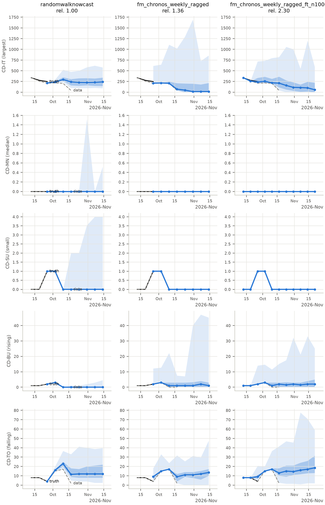
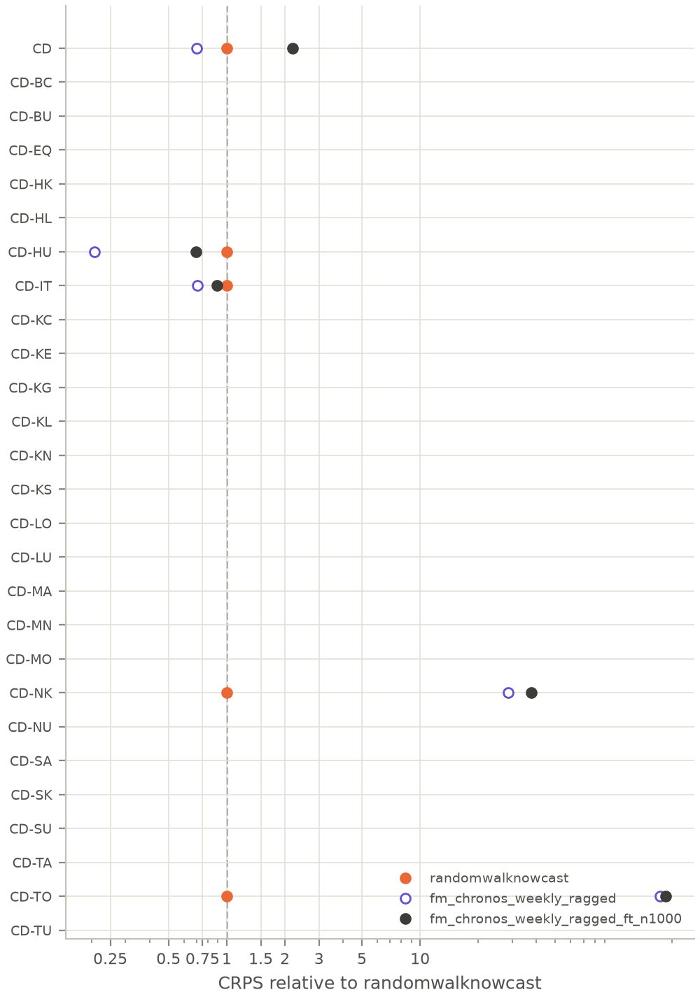
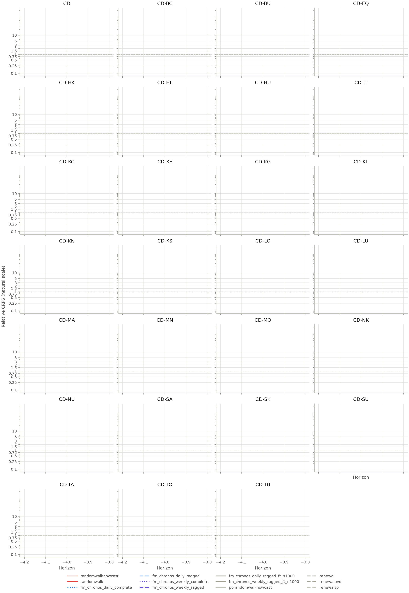
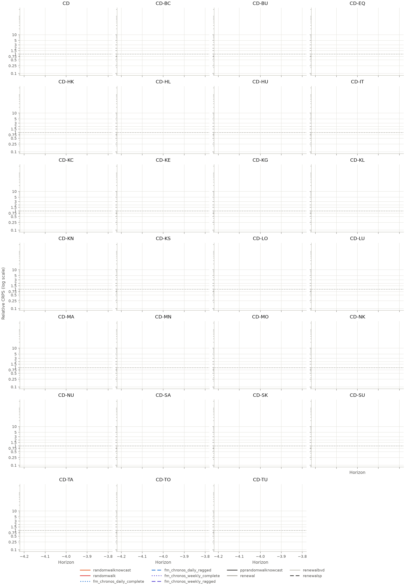
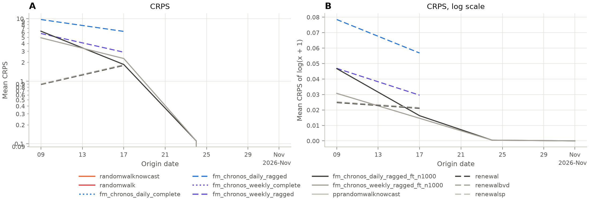
| study | model | metric | horizon | score | log_score | bias | coverage_50 | coverage_90 | n | rel_score | rel_log_score |
|---|---|---|---|---|---|---|---|---|---|---|---|
| ebola | fm_chronos_daily_complete | crps | -4 | 8.66 | 0.0601 | 0.199 | 0.815 | 0.852 | 27 | 4.04 | 5.71 |
| ebola | fm_chronos_daily_ragged | crps | -4 | 7.22 | 0.0574 | 0.191 | 0.815 | 0.907 | 54 | 2.92 | 5.4 |
| ebola | fm_chronos_daily_ragged | crps | -3 | 11.2 | 0.0989 | 0.15 | 0.741 | 0.889 | 27 | ||
| ebola | fm_chronos_daily_ragged_ft_n1000 | crps | -6 | 0.0741 | 0.000755 | 0 | 0.944 | 0.944 | 108 | ||
| ebola | fm_chronos_daily_ragged_ft_n1000 | crps | -5 | 1.02 | 0.0055 | -0.00679 | 0.901 | 0.951 | 81 | ||
| ebola | fm_chronos_daily_ragged_ft_n1000 | crps | -4 | 6.9 | 0.054 | 0.193 | 0.815 | 0.907 | 54 | 2.12 | 4.19 |
| ebola | fm_chronos_daily_ragged_ft_n1000 | crps | -3 | 13.8 | 0.109 | 0.161 | 0.741 | 0.889 | 27 | ||
| ebola | fm_chronos_weekly_complete | crps | -4 | 7.44 | 0.0424 | 0.146 | 0.852 | 0.963 | 27 | 3.47 | 4.03 |
| ebola | fm_chronos_weekly_ragged | crps | -4 | 3.64 | 0.0278 | 0.0756 | 0.907 | 1 | 54 | 1.36 | 2.81 |
| ebola | fm_chronos_weekly_ragged | crps | -3 | 7.21 | 0.0678 | 0.0533 | 0.852 | 0.963 | 27 | ||
| ebola | fm_chronos_weekly_ragged_ft_n1000 | crps | -6 | 0.0741 | 0.000755 | 0 | 0.944 | 0.944 | 108 | ||
| ebola | fm_chronos_weekly_ragged_ft_n1000 | crps | -5 | 0.84 | 0.00354 | -0.123 | 0.877 | 0.877 | 81 | ||
| ebola | fm_chronos_weekly_ragged_ft_n1000 | crps | -4 | 6.29 | 0.0359 | 0.101 | 0.926 | 0.981 | 54 | 2.3 | 3.44 |
| ebola | fm_chronos_weekly_ragged_ft_n1000 | crps | -3 | 11.5 | 0.0823 | 0.0659 | 0.852 | 0.926 | 27 | ||
| ebola | pprandomwalknowcast | crps | -4 | 1.66 | 0.0115 | 0.0467 | 0.889 | 0.926 | 27 | 0.773 | 1.09 |
| ebola | randomwalk | crps | -4 | 2.95 | 0.0122 | -0.093 | 0.889 | 0.889 | 27 | 1.38 | 1.16 |
| ebola | randomwalknowcast | crps | -4 | 2.14 | 0.0105 | -0.0481 | 0.889 | 0.926 | 27 | 1 | 1 |
| ebola | renewal | crps | -4 | 1.43 | 0.0168 | -0.0646 | 0.87 | 0.963 | 54 | 0.835 | 2 |
| ebola | renewal | crps | -3 | 0.696 | 0.0371 | -0.0204 | 0.963 | 0.963 | 27 | ||
| ebola | renewalbvd | crps | -4 | 1.48 | 0.0174 | -0.0685 | 0.87 | 0.963 | 54 | 0.854 | 2.04 |
| ebola | renewalbvd | crps | -3 | 0.679 | 0.0371 | -0.0293 | 0.963 | 0.963 | 27 | ||
| ebola | renewalsp | crps | -4 | 1.75 | 0.0179 | -0.0467 | 0.926 | 0.926 | 27 | 0.819 | 1.7 |
| study | model | metric | location | stratum | score | log_score | bias | coverage_50 | coverage_90 | n | rel_score | rel_log_score |
|---|---|---|---|---|---|---|---|---|---|---|---|---|
| ebola | fm_chronos_daily_complete | crps | CD | all | 110 | 0.227 | 1 | 0 | 0 | 1 | 4.58 | 3.9 |
| ebola | fm_chronos_daily_complete | crps | CD-BC | all | 0 | 0 | 0 | 1 | 1 | 1 | ||
| ebola | fm_chronos_daily_complete | crps | CD-BU | all | 0.482 | 0.126 | 0.57 | 1 | 1 | 1 | inf | inf |
| ebola | fm_chronos_daily_complete | crps | CD-EQ | all | 0 | 0 | 0 | 1 | 1 | 1 | ||
| ebola | fm_chronos_daily_complete | crps | CD-HK | all | 0 | 0 | 0 | 1 | 1 | 1 | ||
| ebola | fm_chronos_daily_complete | crps | CD-HL | all | 0 | 0 | 0 | 1 | 1 | 1 | ||
| ebola | fm_chronos_daily_complete | crps | CD-HU | all | 7.17 | 0.189 | 0.98 | 0 | 0 | 1 | 2.33 | 2.17 |
| ebola | fm_chronos_daily_complete | crps | CD-IT | all | 31 | 0.113 | 0.86 | 0 | 1 | 1 | 1.05 | 0.898 |
| ebola | fm_chronos_daily_complete | crps | CD-KC | all | 0 | 0 | 0 | 1 | 1 | 1 | ||
| ebola | fm_chronos_daily_complete | crps | CD-KE | all | 0 | 0 | 0 | 1 | 1 | 1 | ||
| ebola | fm_chronos_daily_complete | crps | CD-KG | all | 0 | 0 | 0 | 1 | 1 | 1 | ||
| ebola | fm_chronos_daily_complete | crps | CD-KL | all | 0 | 0 | 0 | 1 | 1 | 1 | ||
| ebola | fm_chronos_daily_complete | crps | CD-KN | all | 0 | 0 | 0 | 1 | 1 | 1 | ||
| ebola | fm_chronos_daily_complete | crps | CD-KS | all | 0 | 0 | 0 | 1 | 1 | 1 | ||
| ebola | fm_chronos_daily_complete | crps | CD-LO | all | 0 | 0 | 0 | 1 | 1 | 1 | ||
| ebola | fm_chronos_daily_complete | crps | CD-LU | all | 0 | 0 | 0 | 1 | 1 | 1 | ||
| ebola | fm_chronos_daily_complete | crps | CD-MA | all | 0 | 0 | 0 | 1 | 1 | 1 | ||
| ebola | fm_chronos_daily_complete | crps | CD-MN | all | 0 | 0 | 0 | 1 | 1 | 1 | ||
| ebola | fm_chronos_daily_complete | crps | CD-MO | all | 0 | 0 | 0 | 1 | 1 | 1 | ||
| ebola | fm_chronos_daily_complete | crps | CD-NK | all | 81.7 | 0.464 | 1 | 0 | 0 | 1 | 62.7 | 48.3 |
| ebola | fm_chronos_daily_complete | crps | CD-NU | all | 0 | 0 | 0 | 1 | 1 | 1 | ||
| ebola | fm_chronos_daily_complete | crps | CD-SA | all | 0 | 0 | 0 | 1 | 1 | 1 | ||
| ebola | fm_chronos_daily_complete | crps | CD-SK | all | 0 | 0 | 0 | 1 | 1 | 1 | ||
| ebola | fm_chronos_daily_complete | crps | CD-SU | all | 0 | 0 | 0 | 1 | 1 | 1 | ||
| ebola | fm_chronos_daily_complete | crps | CD-TA | all | 0 | 0 | 0 | 1 | 1 | 1 | ||
| ebola | fm_chronos_daily_complete | crps | CD-TO | all | 3.51 | 0.503 | 0.96 | 0 | 0 | 1 | 206 | 162 |
| ebola | fm_chronos_daily_complete | crps | CD-TU | all | 0 | 0 | 0 | 1 | 1 | 1 | ||
| ebola | fm_chronos_daily_ragged | crps | CD | all | 100 | 0.196 | 0.953 | 0 | 0 | 3 | 2.73 | 2.36 |
| ebola | fm_chronos_daily_ragged | crps | CD-BC | all | 0 | 0 | 0 | 1 | 1 | 3 | ||
| ebola | fm_chronos_daily_ragged | crps | CD-BU | all | 1.6 | 0.388 | 0.767 | 0.333 | 1 | 3 | inf | inf |
| ebola | fm_chronos_daily_ragged | crps | CD-EQ | all | 0 | 0 | 0 | 1 | 1 | 3 | ||
| ebola | fm_chronos_daily_ragged | crps | CD-HK | all | 0 | 0 | 0 | 1 | 1 | 3 | ||
| ebola | fm_chronos_daily_ragged | crps | CD-HL | all | 0 | 0 | 0 | 1 | 1 | 3 | ||
| ebola | fm_chronos_daily_ragged | crps | CD-HU | all | 7.71 | 0.194 | 0.85 | 0 | 0.667 | 3 | 1.75 | 1.64 |
| ebola | fm_chronos_daily_ragged | crps | CD-IT | all | 34.5 | 0.113 | 0.687 | 0 | 1 | 3 | 0.538 | 0.464 |
| ebola | fm_chronos_daily_ragged | crps | CD-KC | all | 0 | 0 | 0 | 1 | 1 | 3 | ||
| ebola | fm_chronos_daily_ragged | crps | CD-KE | all | 0 | 0 | 0 | 1 | 1 | 3 | ||
| ebola | fm_chronos_daily_ragged | crps | CD-KG | all | 0 | 0 | 0 | 1 | 1 | 3 | ||
| ebola | fm_chronos_daily_ragged | crps | CD-KL | all | 0 | 0 | 0 | 1 | 1 | 3 | ||
| ebola | fm_chronos_daily_ragged | crps | CD-KN | all | 0 | 0 | 0 | 1 | 1 | 3 | ||
| ebola | fm_chronos_daily_ragged | crps | CD-KS | all | 0 | 0 | 0 | 1 | 1 | 3 | ||
| ebola | fm_chronos_daily_ragged | crps | CD-LO | all | 0 | 0 | 0 | 1 | 1 | 3 | ||
| ebola | fm_chronos_daily_ragged | crps | CD-LU | all | 0 | 0 | 0 | 1 | 1 | 3 | ||
| ebola | fm_chronos_daily_ragged | crps | CD-MA | all | 0 | 0 | 0 | 1 | 1 | 3 | ||
| ebola | fm_chronos_daily_ragged | crps | CD-MN | all | 0 | 0 | 0 | 1 | 1 | 3 | ||
| ebola | fm_chronos_daily_ragged | crps | CD-MO | all | 0 | 0 | 0 | 1 | 1 | 3 | ||
| ebola | fm_chronos_daily_ragged | crps | CD-NK | all | 83.8 | 0.446 | 1 | 0 | 0 | 3 | 59.2 | 45.5 |
| ebola | fm_chronos_daily_ragged | crps | CD-NU | all | 0 | 0 | 0 | 1 | 1 | 3 | ||
| ebola | fm_chronos_daily_ragged | crps | CD-SA | all | 0 | 0 | 0 | 1 | 1 | 3 | ||
| ebola | fm_chronos_daily_ragged | crps | CD-SK | all | 0.028 | 0.0191 | 0.14 | 1 | 1 | 3 | inf | inf |
| ebola | fm_chronos_daily_ragged | crps | CD-SU | all | 0.333 | 0.231 | -0.333 | 0.667 | 0.667 | 3 | ||
| ebola | fm_chronos_daily_ragged | crps | CD-TA | all | 0 | 0 | 0 | 1 | 1 | 3 | ||
| ebola | fm_chronos_daily_ragged | crps | CD-TO | all | 2.64 | 0.337 | 0.72 | 0.333 | 1 | 3 | 239 | 170 |
| ebola | fm_chronos_daily_ragged | crps | CD-TU | all | 0 | 0 | 0 | 1 | 1 | 3 | ||
| ebola | fm_chronos_daily_ragged_ft_n1000 | crps | CD | all | 37.7 | 0.0729 | 0.207 | 0.2 | 0.5 | 10 | 2.35 | 2.08 |
| ebola | fm_chronos_daily_ragged_ft_n1000 | crps | CD-BC | all | 0 | 0 | 0 | 1 | 1 | 10 | ||
| ebola | fm_chronos_daily_ragged_ft_n1000 | crps | CD-BU | all | 0.411 | 0.111 | 0.278 | 0.8 | 1 | 10 | inf | inf |
| ebola | fm_chronos_daily_ragged_ft_n1000 | crps | CD-EQ | all | 0 | 0 | 0 | 1 | 1 | 10 | ||
| ebola | fm_chronos_daily_ragged_ft_n1000 | crps | CD-HK | all | 0 | 0 | 0 | 1 | 1 | 10 | ||
| ebola | fm_chronos_daily_ragged_ft_n1000 | crps | CD-HL | all | 0 | 0 | 0 | 1 | 1 | 10 | ||
| ebola | fm_chronos_daily_ragged_ft_n1000 | crps | CD-HU | all | 3.65 | 0.0919 | 0.338 | 0.5 | 0.7 | 10 | 2.11 | 1.96 |
| ebola | fm_chronos_daily_ragged_ft_n1000 | crps | CD-IT | all | 12.2 | 0.0411 | 0.004 | 0.4 | 0.7 | 10 | 0.314 | 0.277 |
| ebola | fm_chronos_daily_ragged_ft_n1000 | crps | CD-KC | all | 0 | 0 | 0 | 1 | 1 | 10 | ||
| ebola | fm_chronos_daily_ragged_ft_n1000 | crps | CD-KE | all | 0 | 0 | 0 | 1 | 1 | 10 | ||
| ebola | fm_chronos_daily_ragged_ft_n1000 | crps | CD-KG | all | 0 | 0 | 0 | 1 | 1 | 10 | ||
| ebola | fm_chronos_daily_ragged_ft_n1000 | crps | CD-KL | all | 0 | 0 | 0 | 1 | 1 | 10 | ||
| ebola | fm_chronos_daily_ragged_ft_n1000 | crps | CD-KN | all | 0 | 0 | 0 | 1 | 1 | 10 | ||
| ebola | fm_chronos_daily_ragged_ft_n1000 | crps | CD-KS | all | 0 | 0 | 0 | 1 | 1 | 10 | ||
| ebola | fm_chronos_daily_ragged_ft_n1000 | crps | CD-LO | all | 0 | 0 | 0 | 1 | 1 | 10 | ||
| ebola | fm_chronos_daily_ragged_ft_n1000 | crps | CD-LU | all | 0 | 0 | 0 | 1 | 1 | 10 | ||
| ebola | fm_chronos_daily_ragged_ft_n1000 | crps | CD-MA | all | 0 | 0 | 0 | 1 | 1 | 10 | ||
| ebola | fm_chronos_daily_ragged_ft_n1000 | crps | CD-MN | all | 0 | 0 | 0 | 1 | 1 | 10 | ||
| ebola | fm_chronos_daily_ragged_ft_n1000 | crps | CD-MO | all | 0 | 0 | 0 | 1 | 1 | 10 | ||
| ebola | fm_chronos_daily_ragged_ft_n1000 | crps | CD-NK | all | 28.7 | 0.147 | 0.358 | 0.4 | 0.4 | 10 | 36.3 | 29.8 |
| ebola | fm_chronos_daily_ragged_ft_n1000 | crps | CD-NU | all | 0 | 0 | 0 | 1 | 1 | 10 | ||
| ebola | fm_chronos_daily_ragged_ft_n1000 | crps | CD-SA | all | 0 | 0 | 0 | 1 | 1 | 10 | ||
| ebola | fm_chronos_daily_ragged_ft_n1000 | crps | CD-SK | all | 0.00991 | 0.00681 | 0.058 | 1 | 1 | 10 | inf | inf |
| ebola | fm_chronos_daily_ragged_ft_n1000 | crps | CD-SU | all | 0.1 | 0.0693 | -0.1 | 0.9 | 0.9 | 10 | ||
| ebola | fm_chronos_daily_ragged_ft_n1000 | crps | CD-TA | all | 0 | 0 | 0 | 1 | 1 | 10 | ||
| ebola | fm_chronos_daily_ragged_ft_n1000 | crps | CD-TO | all | 0.79 | 0.0995 | 0.278 | 0.7 | 1 | 10 | 175 | 137 |
| ebola | fm_chronos_daily_ragged_ft_n1000 | crps | CD-TU | all | 0 | 0 | 0 | 1 | 1 | 10 | ||
| ebola | fm_chronos_weekly_complete | crps | CD | all | 79.2 | 0.165 | 0.8 | 0 | 1 | 1 | 3.3 | 2.84 |
| ebola | fm_chronos_weekly_complete | crps | CD-BC | all | 0 | 0 | 0 | 1 | 1 | 1 | ||
| ebola | fm_chronos_weekly_complete | crps | CD-BU | all | 0.0747 | 0.0189 | 0.22 | 1 | 1 | 1 | inf | inf |
| ebola | fm_chronos_weekly_complete | crps | CD-EQ | all | 0 | 0 | 0 | 1 | 1 | 1 | ||
| ebola | fm_chronos_weekly_complete | crps | CD-HK | all | 0 | 0 | 0 | 1 | 1 | 1 | ||
| ebola | fm_chronos_weekly_complete | crps | CD-HL | all | 0 | 0 | 0 | 1 | 1 | 1 | ||
| ebola | fm_chronos_weekly_complete | crps | CD-HU | all | 0.661 | 0.0176 | 0.38 | 1 | 1 | 1 | 0.215 | 0.202 |
| ebola | fm_chronos_weekly_complete | crps | CD-IT | all | 37.1 | 0.13 | 0.58 | 0 | 1 | 1 | 1.26 | 1.03 |
| ebola | fm_chronos_weekly_complete | crps | CD-KC | all | 0 | 0 | 0 | 1 | 1 | 1 | ||
| ebola | fm_chronos_weekly_complete | crps | CD-KE | all | 0 | 0 | 0 | 1 | 1 | 1 | ||
| ebola | fm_chronos_weekly_complete | crps | CD-KG | all | 0 | 0 | 0 | 1 | 1 | 1 | ||
| ebola | fm_chronos_weekly_complete | crps | CD-KL | all | 0 | 0 | 0 | 1 | 1 | 1 | ||
| ebola | fm_chronos_weekly_complete | crps | CD-KN | all | 0 | 0 | 0 | 1 | 1 | 1 | ||
| ebola | fm_chronos_weekly_complete | crps | CD-KS | all | 0 | 0 | 0 | 1 | 1 | 1 | ||
| ebola | fm_chronos_weekly_complete | crps | CD-LO | all | 0 | 0 | 0 | 1 | 1 | 1 | ||
| ebola | fm_chronos_weekly_complete | crps | CD-LU | all | 0 | 0 | 0 | 1 | 1 | 1 | ||
| ebola | fm_chronos_weekly_complete | crps | CD-MA | all | 0 | 0 | 0 | 1 | 1 | 1 | ||
| ebola | fm_chronos_weekly_complete | crps | CD-MN | all | 0 | 0 | 0 | 1 | 1 | 1 | ||
| ebola | fm_chronos_weekly_complete | crps | CD-MO | all | 0 | 0 | 0 | 1 | 1 | 1 | ||
| ebola | fm_chronos_weekly_complete | crps | CD-NK | all | 81.4 | 0.455 | 0.98 | 0 | 0 | 1 | 62.5 | 47.4 |
| ebola | fm_chronos_weekly_complete | crps | CD-NU | all | 0 | 0 | 0 | 1 | 1 | 1 | ||
| ebola | fm_chronos_weekly_complete | crps | CD-SA | all | 0 | 0 | 0 | 1 | 1 | 1 | ||
| ebola | fm_chronos_weekly_complete | crps | CD-SK | all | 0.0156 | 0.00968 | 0.11 | 1 | 1 | 1 | inf | inf |
| ebola | fm_chronos_weekly_complete | crps | CD-SU | all | 0 | 0 | 0 | 1 | 1 | 1 | ||
| ebola | fm_chronos_weekly_complete | crps | CD-TA | all | 0 | 0 | 0 | 1 | 1 | 1 | ||
| ebola | fm_chronos_weekly_complete | crps | CD-TO | all | 2.35 | 0.348 | 0.87 | 0 | 1 | 1 | 138 | 112 |
| ebola | fm_chronos_weekly_complete | crps | CD-TU | all | 0 | 0 | 0 | 1 | 1 | 1 | ||
| ebola | fm_chronos_weekly_ragged | crps | CD | all | 51.2 | 0.102 | 0.34 | 0.333 | 1 | 3 | 0.698 | 0.67 |
| ebola | fm_chronos_weekly_ragged | crps | CD-BC | all | 0 | 0 | 0 | 1 | 1 | 3 | ||
| ebola | fm_chronos_weekly_ragged | crps | CD-BU | all | 0.283 | 0.0795 | 0.363 | 1 | 1 | 3 | inf | inf |
| ebola | fm_chronos_weekly_ragged | crps | CD-EQ | all | 0 | 0 | 0 | 1 | 1 | 3 | ||
| ebola | fm_chronos_weekly_ragged | crps | CD-HK | all | 0 | 0 | 0 | 1 | 1 | 3 | ||
| ebola | fm_chronos_weekly_ragged | crps | CD-HL | all | 0 | 0 | 0 | 1 | 1 | 3 | ||
| ebola | fm_chronos_weekly_ragged | crps | CD-HU | all | 2.36 | 0.0576 | 0.163 | 1 | 1 | 3 | 0.206 | 0.166 |
| ebola | fm_chronos_weekly_ragged | crps | CD-IT | all | 26.5 | 0.0941 | -0.0533 | 0.667 | 1 | 3 | 0.707 | 0.679 |
| ebola | fm_chronos_weekly_ragged | crps | CD-KC | all | 0 | 0 | 0 | 1 | 1 | 3 | ||
| ebola | fm_chronos_weekly_ragged | crps | CD-KE | all | 0 | 0 | 0 | 1 | 1 | 3 | ||
| ebola | fm_chronos_weekly_ragged | crps | CD-KG | all | 0 | 0 | 0 | 1 | 1 | 3 | ||
| ebola | fm_chronos_weekly_ragged | crps | CD-KL | all | 0 | 0 | 0 | 1 | 1 | 3 | ||
| ebola | fm_chronos_weekly_ragged | crps | CD-KN | all | 0 | 0 | 0 | 1 | 1 | 3 | ||
| ebola | fm_chronos_weekly_ragged | crps | CD-KS | all | 0 | 0 | 0 | 1 | 1 | 3 | ||
| ebola | fm_chronos_weekly_ragged | crps | CD-LO | all | 0 | 0 | 0 | 1 | 1 | 3 | ||
| ebola | fm_chronos_weekly_ragged | crps | CD-LU | all | 0 | 0 | 0 | 1 | 1 | 3 | ||
| ebola | fm_chronos_weekly_ragged | crps | CD-MA | all | 0 | 0 | 0 | 1 | 1 | 3 | ||
| ebola | fm_chronos_weekly_ragged | crps | CD-MN | all | 0 | 0 | 0 | 1 | 1 | 3 | ||
| ebola | fm_chronos_weekly_ragged | crps | CD-MO | all | 0 | 0 | 0 | 1 | 1 | 3 | ||
| ebola | fm_chronos_weekly_ragged | crps | CD-NK | all | 47.7 | 0.259 | 0.753 | 0 | 1 | 3 | 28.6 | 22.5 |
| ebola | fm_chronos_weekly_ragged | crps | CD-NU | all | 0 | 0 | 0 | 1 | 1 | 3 | ||
| ebola | fm_chronos_weekly_ragged | crps | CD-SA | all | 0 | 0 | 0 | 1 | 1 | 3 | ||
| ebola | fm_chronos_weekly_ragged | crps | CD-SK | all | 0.0331 | 0.012 | 0.09 | 1 | 1 | 3 | inf | inf |
| ebola | fm_chronos_weekly_ragged | crps | CD-SU | all | 0.333 | 0.231 | -0.333 | 0.667 | 0.667 | 3 | ||
| ebola | fm_chronos_weekly_ragged | crps | CD-TA | all | 0 | 0 | 0 | 1 | 1 | 3 | ||
| ebola | fm_chronos_weekly_ragged | crps | CD-TO | all | 2.01 | 0.275 | 0.517 | 0.333 | 1 | 3 | 174 | 135 |
| ebola | fm_chronos_weekly_ragged | crps | CD-TU | all | 0 | 0 | 0 | 1 | 1 | 3 | ||
| ebola | fm_chronos_weekly_ragged_ft_n1000 | crps | CD | all | 30.6 | 0.0577 | -0.143 | 0.3 | 0.5 | 10 | 2.18 | 1.79 |
| ebola | fm_chronos_weekly_ragged_ft_n1000 | crps | CD-BC | all | 0 | 0 | 0 | 1 | 1 | 10 | ||
| ebola | fm_chronos_weekly_ragged_ft_n1000 | crps | CD-BU | all | 0.0635 | 0.0199 | 0.101 | 1 | 1 | 10 | inf | inf |
| ebola | fm_chronos_weekly_ragged_ft_n1000 | crps | CD-EQ | all | 0 | 0 | 0 | 1 | 1 | 10 | ||
| ebola | fm_chronos_weekly_ragged_ft_n1000 | crps | CD-HK | all | 0 | 0 | 0 | 1 | 1 | 10 | ||
| ebola | fm_chronos_weekly_ragged_ft_n1000 | crps | CD-HL | all | 0 | 0 | 0 | 1 | 1 | 10 | ||
| ebola | fm_chronos_weekly_ragged_ft_n1000 | crps | CD-HU | all | 1.36 | 0.0368 | -0.024 | 0.7 | 0.7 | 10 | 0.694 | 0.558 |
| ebola | fm_chronos_weekly_ragged_ft_n1000 | crps | CD-IT | all | 14 | 0.0456 | -0.332 | 0.6 | 0.6 | 10 | 0.888 | 0.755 |
| ebola | fm_chronos_weekly_ragged_ft_n1000 | crps | CD-KC | all | 0 | 0 | 0 | 1 | 1 | 10 | ||
| ebola | fm_chronos_weekly_ragged_ft_n1000 | crps | CD-KE | all | 0 | 0 | 0 | 1 | 1 | 10 | ||
| ebola | fm_chronos_weekly_ragged_ft_n1000 | crps | CD-KG | all | 0 | 0 | 0 | 1 | 1 | 10 | ||
| ebola | fm_chronos_weekly_ragged_ft_n1000 | crps | CD-KL | all | 0 | 0 | 0 | 1 | 1 | 10 | ||
| ebola | fm_chronos_weekly_ragged_ft_n1000 | crps | CD-KN | all | 0 | 0 | 0 | 1 | 1 | 10 | ||
| ebola | fm_chronos_weekly_ragged_ft_n1000 | crps | CD-KS | all | 0 | 0 | 0 | 1 | 1 | 10 | ||
| ebola | fm_chronos_weekly_ragged_ft_n1000 | crps | CD-LO | all | 0 | 0 | 0 | 1 | 1 | 10 | ||
| ebola | fm_chronos_weekly_ragged_ft_n1000 | crps | CD-LU | all | 0 | 0 | 0 | 1 | 1 | 10 | ||
| ebola | fm_chronos_weekly_ragged_ft_n1000 | crps | CD-MA | all | 0 | 0 | 0 | 1 | 1 | 10 | ||
| ebola | fm_chronos_weekly_ragged_ft_n1000 | crps | CD-MN | all | 0 | 0 | 0 | 1 | 1 | 10 | ||
| ebola | fm_chronos_weekly_ragged_ft_n1000 | crps | CD-MO | all | 0 | 0 | 0 | 1 | 1 | 10 | ||
| ebola | fm_chronos_weekly_ragged_ft_n1000 | crps | CD-NK | all | 25.9 | 0.128 | 0.042 | 0.3 | 0.4 | 10 | 37.5 | 27.3 |
| ebola | fm_chronos_weekly_ragged_ft_n1000 | crps | CD-NU | all | 0 | 0 | 0 | 1 | 1 | 10 | ||
| ebola | fm_chronos_weekly_ragged_ft_n1000 | crps | CD-SA | all | 0 | 0 | 0 | 1 | 1 | 10 | ||
| ebola | fm_chronos_weekly_ragged_ft_n1000 | crps | CD-SK | all | 0.0068 | 0.00309 | 0.024 | 1 | 1 | 10 | inf | inf |
| ebola | fm_chronos_weekly_ragged_ft_n1000 | crps | CD-SU | all | 0.1 | 0.0693 | -0.1 | 0.9 | 0.9 | 10 | ||
| ebola | fm_chronos_weekly_ragged_ft_n1000 | crps | CD-TA | all | 0 | 0 | 0 | 1 | 1 | 10 | ||
| ebola | fm_chronos_weekly_ragged_ft_n1000 | crps | CD-TO | all | 0.689 | 0.092 | 0.158 | 0.8 | 1 | 10 | 186 | 143 |
| ebola | fm_chronos_weekly_ragged_ft_n1000 | crps | CD-TU | all | 0 | 0 | 0 | 1 | 1 | 10 | ||
| ebola | pprandomwalknowcast | crps | CD | all | 2.19 | 0.00517 | -0.18 | 1 | 1 | 1 | 0.0913 | 0.0887 |
| ebola | pprandomwalknowcast | crps | CD-BC | all | 0 | 0 | 0 | 1 | 1 | 1 | ||
| ebola | pprandomwalknowcast | crps | CD-BU | all | 0.0226 | 0.0065 | 0.15 | 1 | 1 | 1 | inf | inf |
| ebola | pprandomwalknowcast | crps | CD-EQ | all | 0 | 0 | 0 | 1 | 1 | 1 | ||
| ebola | pprandomwalknowcast | crps | CD-HK | all | 0 | 0 | 0 | 1 | 1 | 1 | ||
| ebola | pprandomwalknowcast | crps | CD-HL | all | 0 | 0 | 0 | 1 | 1 | 1 | ||
| ebola | pprandomwalknowcast | crps | CD-HU | all | 0.888 | 0.0261 | 0.75 | 0 | 1 | 1 | 0.289 | 0.3 |
| ebola | pprandomwalknowcast | crps | CD-IT | all | 23.6 | 0.0995 | -1 | 0 | 0 | 1 | 0.801 | 0.79 |
| ebola | pprandomwalknowcast | crps | CD-KC | all | 0 | 0 | 0 | 1 | 1 | 1 | ||
| ebola | pprandomwalknowcast | crps | CD-KE | all | 0 | 0 | 0 | 1 | 1 | 1 | ||
| ebola | pprandomwalknowcast | crps | CD-KG | all | 0 | 0 | 0 | 1 | 1 | 1 | ||
| ebola | pprandomwalknowcast | crps | CD-KL | all | 0 | 0 | 0 | 1 | 1 | 1 | ||
| ebola | pprandomwalknowcast | crps | CD-KN | all | 0 | 0 | 0 | 1 | 1 | 1 | ||
| ebola | pprandomwalknowcast | crps | CD-KS | all | 0 | 0 | 0 | 1 | 1 | 1 | ||
| ebola | pprandomwalknowcast | crps | CD-LO | all | 0 | 0 | 0 | 1 | 1 | 1 | ||
| ebola | pprandomwalknowcast | crps | CD-LU | all | 0 | 0 | 0 | 1 | 1 | 1 | ||
| ebola | pprandomwalknowcast | crps | CD-MA | all | 0 | 0 | 0 | 1 | 1 | 1 | ||
| ebola | pprandomwalknowcast | crps | CD-MN | all | 0 | 0 | 0 | 1 | 1 | 1 | ||
| ebola | pprandomwalknowcast | crps | CD-MO | all | 0 | 0 | 0 | 1 | 1 | 1 | ||
| ebola | pprandomwalknowcast | crps | CD-NK | all | 17.7 | 0.121 | 1 | 0 | 0 | 1 | 13.6 | 12.6 |
| ebola | pprandomwalknowcast | crps | CD-NU | all | 0 | 0 | 0 | 1 | 1 | 1 | ||
| ebola | pprandomwalknowcast | crps | CD-SA | all | 0 | 0 | 0 | 1 | 1 | 1 | ||
| ebola | pprandomwalknowcast | crps | CD-SK | all | 0 | 0 | 0 | 1 | 1 | 1 | ||
| ebola | pprandomwalknowcast | crps | CD-SU | all | 0.0037 | 0.00149 | 0.06 | 1 | 1 | 1 | inf | inf |
| ebola | pprandomwalknowcast | crps | CD-TA | all | 0 | 0 | 0 | 1 | 1 | 1 | ||
| ebola | pprandomwalknowcast | crps | CD-TO | all | 0.281 | 0.0497 | 0.48 | 1 | 1 | 1 | 16.5 | 16.1 |
| ebola | pprandomwalknowcast | crps | CD-TU | all | 0 | 0 | 0 | 1 | 1 | 1 | ||
| ebola | randomwalk | crps | CD | all | 34.4 | 0.085 | -0.99 | 0 | 0 | 1 | 1.43 | 1.46 |
| ebola | randomwalk | crps | CD-BC | all | 0 | 0 | 0 | 1 | 1 | 1 | ||
| ebola | randomwalk | crps | CD-BU | all | 0 | 0 | 0 | 1 | 1 | 1 | ||
| ebola | randomwalk | crps | CD-EQ | all | 0 | 0 | 0 | 1 | 1 | 1 | ||
| ebola | randomwalk | crps | CD-HK | all | 0 | 0 | 0 | 1 | 1 | 1 | ||
| ebola | randomwalk | crps | CD-HL | all | 0 | 0 | 0 | 1 | 1 | 1 | ||
| ebola | randomwalk | crps | CD-HU | all | 1.33 | 0.0349 | 0.48 | 1 | 1 | 1 | 0.432 | 0.401 |
| ebola | randomwalk | crps | CD-IT | all | 38 | 0.166 | -1 | 0 | 0 | 1 | 1.29 | 1.31 |
| ebola | randomwalk | crps | CD-KC | all | 0 | 0 | 0 | 1 | 1 | 1 | ||
| ebola | randomwalk | crps | CD-KE | all | 0 | 0 | 0 | 1 | 1 | 1 | ||
| ebola | randomwalk | crps | CD-KG | all | 0 | 0 | 0 | 1 | 1 | 1 | ||
| ebola | randomwalk | crps | CD-KL | all | 0 | 0 | 0 | 1 | 1 | 1 | ||
| ebola | randomwalk | crps | CD-KN | all | 0 | 0 | 0 | 1 | 1 | 1 | ||
| ebola | randomwalk | crps | CD-KS | all | 0 | 0 | 0 | 1 | 1 | 1 | ||
| ebola | randomwalk | crps | CD-LO | all | 0 | 0 | 0 | 1 | 1 | 1 | ||
| ebola | randomwalk | crps | CD-LU | all | 0 | 0 | 0 | 1 | 1 | 1 | ||
| ebola | randomwalk | crps | CD-MA | all | 0 | 0 | 0 | 1 | 1 | 1 | ||
| ebola | randomwalk | crps | CD-MN | all | 0 | 0 | 0 | 1 | 1 | 1 | ||
| ebola | randomwalk | crps | CD-MO | all | 0 | 0 | 0 | 1 | 1 | 1 | ||
| ebola | randomwalk | crps | CD-NK | all | 6 | 0.0448 | -1 | 0 | 0 | 1 | 4.61 | 4.67 |
| ebola | randomwalk | crps | CD-NU | all | 0 | 0 | 0 | 1 | 1 | 1 | ||
| ebola | randomwalk | crps | CD-SA | all | 0 | 0 | 0 | 1 | 1 | 1 | ||
| ebola | randomwalk | crps | CD-SK | all | 0 | 0 | 0 | 1 | 1 | 1 | ||
| ebola | randomwalk | crps | CD-SU | all | 0 | 0 | 0 | 1 | 1 | 1 | ||
| ebola | randomwalk | crps | CD-TA | all | 0 | 0 | 0 | 1 | 1 | 1 | ||
| ebola | randomwalk | crps | CD-TO | all | 0 | 0 | 0 | 1 | 1 | 1 | 0 | 0 |
| ebola | randomwalk | crps | CD-TU | all | 0 | 0 | 0 | 1 | 1 | 1 | ||
| ebola | randomwalknowcast | crps | CD | all | 24 | 0.0583 | -1 | 0 | 0 | 1 | 1 | 1 |
| ebola | randomwalknowcast | crps | CD-BC | all | 0 | 0 | 0 | 1 | 1 | 1 | ||
| ebola | randomwalknowcast | crps | CD-BU | all | 0 | 0 | 0 | 1 | 1 | 1 | ||
| ebola | randomwalknowcast | crps | CD-EQ | all | 0 | 0 | 0 | 1 | 1 | 1 | ||
| ebola | randomwalknowcast | crps | CD-HK | all | 0 | 0 | 0 | 1 | 1 | 1 | ||
| ebola | randomwalknowcast | crps | CD-HL | all | 0 | 0 | 0 | 1 | 1 | 1 | ||
| ebola | randomwalknowcast | crps | CD-HU | all | 3.07 | 0.0871 | 0.94 | 0 | 1 | 1 | 1 | 1 |
| ebola | randomwalknowcast | crps | CD-IT | all | 29.4 | 0.126 | -1 | 0 | 0 | 1 | 1 | 1 |
| ebola | randomwalknowcast | crps | CD-KC | all | 0 | 0 | 0 | 1 | 1 | 1 | ||
| ebola | randomwalknowcast | crps | CD-KE | all | 0 | 0 | 0 | 1 | 1 | 1 | ||
| ebola | randomwalknowcast | crps | CD-KG | all | 0 | 0 | 0 | 1 | 1 | 1 | ||
| ebola | randomwalknowcast | crps | CD-KL | all | 0 | 0 | 0 | 1 | 1 | 1 | ||
| ebola | randomwalknowcast | crps | CD-KN | all | 0 | 0 | 0 | 1 | 1 | 1 | ||
| ebola | randomwalknowcast | crps | CD-KS | all | 0 | 0 | 0 | 1 | 1 | 1 | ||
| ebola | randomwalknowcast | crps | CD-LO | all | 0 | 0 | 0 | 1 | 1 | 1 | ||
| ebola | randomwalknowcast | crps | CD-LU | all | 0 | 0 | 0 | 1 | 1 | 1 | ||
| ebola | randomwalknowcast | crps | CD-MA | all | 0 | 0 | 0 | 1 | 1 | 1 | ||
| ebola | randomwalknowcast | crps | CD-MN | all | 0 | 0 | 0 | 1 | 1 | 1 | ||
| ebola | randomwalknowcast | crps | CD-MO | all | 0 | 0 | 0 | 1 | 1 | 1 | ||
| ebola | randomwalknowcast | crps | CD-NK | all | 1.3 | 0.0096 | -0.37 | 1 | 1 | 1 | 1 | 1 |
| ebola | randomwalknowcast | crps | CD-NU | all | 0 | 0 | 0 | 1 | 1 | 1 | ||
| ebola | randomwalknowcast | crps | CD-SA | all | 0 | 0 | 0 | 1 | 1 | 1 | ||
| ebola | randomwalknowcast | crps | CD-SK | all | 0 | 0 | 0 | 1 | 1 | 1 | ||
| ebola | randomwalknowcast | crps | CD-SU | all | 0 | 0 | 0 | 1 | 1 | 1 | ||
| ebola | randomwalknowcast | crps | CD-TA | all | 0 | 0 | 0 | 1 | 1 | 1 | ||
| ebola | randomwalknowcast | crps | CD-TO | all | 0.017 | 0.0031 | 0.13 | 1 | 1 | 1 | 1 | 1 |
| ebola | randomwalknowcast | crps | CD-TU | all | 0 | 0 | 0 | 1 | 1 | 1 | ||
| ebola | renewal | crps | CD | all | 13.3 | 0.0309 | -0.613 | 0.333 | 0.667 | 3 | 0.848 | 0.847 |
| ebola | renewal | crps | CD-BC | all | 0 | 0 | 0 | 1 | 1 | 3 | ||
| ebola | renewal | crps | CD-BU | all | 0.297 | 0.101 | 0.207 | 1 | 1 | 3 | inf | inf |
| ebola | renewal | crps | CD-EQ | all | 0 | 0 | 0 | 1 | 1 | 3 | ||
| ebola | renewal | crps | CD-HK | all | 0 | 0 | 0 | 1 | 1 | 3 | ||
| ebola | renewal | crps | CD-HL | all | 3.33e-05 | 2.31e-05 | 0.00333 | 1 | 1 | 3 | inf | inf |
| ebola | renewal | crps | CD-HU | all | 0.53 | 0.0161 | 0.277 | 1 | 1 | 3 | 0.193 | 0.201 |
| ebola | renewal | crps | CD-IT | all | 12.9 | 0.0528 | -0.743 | 0.333 | 0.667 | 3 | 0.799 | 0.79 |
| ebola | renewal | crps | CD-KC | all | 0 | 0 | 0 | 1 | 1 | 3 | ||
| ebola | renewal | crps | CD-KE | all | 0 | 0 | 0 | 1 | 1 | 3 | ||
| ebola | renewal | crps | CD-KG | all | 0 | 0 | 0 | 1 | 1 | 3 | ||
| ebola | renewal | crps | CD-KL | all | 3.33e-05 | 2.31e-05 | 0.00333 | 1 | 1 | 3 | ||
| ebola | renewal | crps | CD-KN | all | 0 | 0 | 0 | 1 | 1 | 3 | ||
| ebola | renewal | crps | CD-KS | all | 0 | 0 | 0 | 1 | 1 | 3 | ||
| ebola | renewal | crps | CD-LO | all | 3.33e-05 | 2.31e-05 | 0.00333 | 1 | 1 | 3 | ||
| ebola | renewal | crps | CD-LU | all | 0 | 0 | 0 | 1 | 1 | 3 | ||
| ebola | renewal | crps | CD-MA | all | 3.33e-05 | 2.31e-05 | 0.00333 | 1 | 1 | 3 | ||
| ebola | renewal | crps | CD-MN | all | 0 | 0 | 0 | 1 | 1 | 3 | ||
| ebola | renewal | crps | CD-MO | all | 3.33e-05 | 2.31e-05 | 0.00333 | 1 | 1 | 3 | ||
| ebola | renewal | crps | CD-NK | all | 3.72 | 0.0252 | -0.17 | 0.667 | 1 | 3 | 1.72 | 1.74 |
| ebola | renewal | crps | CD-NU | all | 0 | 0 | 0 | 1 | 1 | 3 | ||
| ebola | renewal | crps | CD-SA | all | 0 | 0 | 0 | 1 | 1 | 3 | ||
| ebola | renewal | crps | CD-SK | all | 6.67e-05 | 4.62e-05 | 0.00667 | 1 | 1 | 3 | ||
| ebola | renewal | crps | CD-SU | all | 0.419 | 0.277 | -0.35 | 0.667 | 0.667 | 3 | inf | inf |
| ebola | renewal | crps | CD-TA | all | 0 | 0 | 0 | 1 | 1 | 3 | ||
| ebola | renewal | crps | CD-TO | all | 0.848 | 0.133 | 0.0233 | 0.333 | 1 | 3 | 68.3 | 62.4 |
| ebola | renewal | crps | CD-TU | all | 0 | 0 | 0 | 1 | 1 | 3 | ||
| ebola | renewalbvd | crps | CD | all | 13.6 | 0.0316 | -0.647 | 0.333 | 0.667 | 3 | 0.874 | 0.874 |
| ebola | renewalbvd | crps | CD-BC | all | 0 | 0 | 0 | 1 | 1 | 3 | ||
| ebola | renewalbvd | crps | CD-BU | all | 0.312 | 0.108 | 0.213 | 1 | 1 | 3 | inf | inf |
| ebola | renewalbvd | crps | CD-EQ | all | 0 | 0 | 0 | 1 | 1 | 3 | ||
| ebola | renewalbvd | crps | CD-HK | all | 0 | 0 | 0 | 1 | 1 | 3 | ||
| ebola | renewalbvd | crps | CD-HL | all | 3.33e-05 | 2.31e-05 | 0.00333 | 1 | 1 | 3 | inf | inf |
| ebola | renewalbvd | crps | CD-HU | all | 0.545 | 0.0167 | 0.247 | 1 | 1 | 3 | 0.161 | 0.168 |
| ebola | renewalbvd | crps | CD-IT | all | 13.2 | 0.054 | -0.76 | 0.333 | 0.667 | 3 | 0.811 | 0.802 |
| ebola | renewalbvd | crps | CD-KC | all | 0 | 0 | 0 | 1 | 1 | 3 | ||
| ebola | renewalbvd | crps | CD-KE | all | 0 | 0 | 0 | 1 | 1 | 3 | ||
| ebola | renewalbvd | crps | CD-KG | all | 0 | 0 | 0 | 1 | 1 | 3 | ||
| ebola | renewalbvd | crps | CD-KL | all | 3.33e-05 | 2.31e-05 | 0.00333 | 1 | 1 | 3 | ||
| ebola | renewalbvd | crps | CD-KN | all | 0 | 0 | 0 | 1 | 1 | 3 | ||
| ebola | renewalbvd | crps | CD-KS | all | 0 | 0 | 0 | 1 | 1 | 3 | ||
| ebola | renewalbvd | crps | CD-LO | all | 3.33e-05 | 2.31e-05 | 0.00333 | 1 | 1 | 3 | ||
| ebola | renewalbvd | crps | CD-LU | all | 0 | 0 | 0 | 1 | 1 | 3 | ||
| ebola | renewalbvd | crps | CD-MA | all | 3.33e-05 | 2.31e-05 | 0.00333 | 1 | 1 | 3 | ||
| ebola | renewalbvd | crps | CD-MN | all | 0 | 0 | 0 | 1 | 1 | 3 | ||
| ebola | renewalbvd | crps | CD-MO | all | 3.33e-05 | 2.31e-05 | 0.00333 | 1 | 1 | 3 | ||
| ebola | renewalbvd | crps | CD-NK | all | 3.72 | 0.0251 | -0.21 | 0.667 | 1 | 3 | 1.84 | 1.85 |
| ebola | renewalbvd | crps | CD-NU | all | 0 | 0 | 0 | 1 | 1 | 3 | ||
| ebola | renewalbvd | crps | CD-SA | all | 0 | 0 | 0 | 1 | 1 | 3 | ||
| ebola | renewalbvd | crps | CD-SK | all | 0.000167 | 0.000116 | 0.01 | 1 | 1 | 3 | ||
| ebola | renewalbvd | crps | CD-SU | all | 0.416 | 0.275 | -0.347 | 0.667 | 0.667 | 3 | inf | inf |
| ebola | renewalbvd | crps | CD-TA | all | 0 | 0 | 0 | 1 | 1 | 3 | ||
| ebola | renewalbvd | crps | CD-TO | all | 0.872 | 0.136 | -0.02 | 0.333 | 1 | 3 | 74.3 | 66.4 |
| ebola | renewalbvd | crps | CD-TU | all | 0 | 0 | 0 | 1 | 1 | 3 | ||
| ebola | renewalsp | crps | CD | all | 18.5 | 0.045 | -0.91 | 0 | 0 | 1 | 0.772 | 0.771 |
| ebola | renewalsp | crps | CD-BC | all | 0 | 0 | 0 | 1 | 1 | 1 | ||
| ebola | renewalsp | crps | CD-BU | all | 0.414 | 0.118 | 0.27 | 1 | 1 | 1 | inf | inf |
| ebola | renewalsp | crps | CD-EQ | all | 0 | 0 | 0 | 1 | 1 | 1 | ||
| ebola | renewalsp | crps | CD-HK | all | 0 | 0 | 0 | 1 | 1 | 1 | ||
| ebola | renewalsp | crps | CD-HL | all | 0 | 0 | 0 | 1 | 1 | 1 | ||
| ebola | renewalsp | crps | CD-HU | all | 0.253 | 0.00755 | 0.12 | 1 | 1 | 1 | 0.0822 | 0.0867 |
| ebola | renewalsp | crps | CD-IT | all | 25.4 | 0.108 | -1 | 0 | 0 | 1 | 0.862 | 0.856 |
| ebola | renewalsp | crps | CD-KC | all | 0 | 0 | 0 | 1 | 1 | 1 | ||
| ebola | renewalsp | crps | CD-KE | all | 0 | 0 | 0 | 1 | 1 | 1 | ||
| ebola | renewalsp | crps | CD-KG | all | 0 | 0 | 0 | 1 | 1 | 1 | ||
| ebola | renewalsp | crps | CD-KL | all | 0 | 0 | 0 | 1 | 1 | 1 | ||
| ebola | renewalsp | crps | CD-KN | all | 0 | 0 | 0 | 1 | 1 | 1 | ||
| ebola | renewalsp | crps | CD-KS | all | 0 | 0 | 0 | 1 | 1 | 1 | ||
| ebola | renewalsp | crps | CD-LO | all | 0 | 0 | 0 | 1 | 1 | 1 | ||
| ebola | renewalsp | crps | CD-LU | all | 0 | 0 | 0 | 1 | 1 | 1 | ||
| ebola | renewalsp | crps | CD-MA | all | 0 | 0 | 0 | 1 | 1 | 1 | ||
| ebola | renewalsp | crps | CD-MN | all | 0 | 0 | 0 | 1 | 1 | 1 | ||
| ebola | renewalsp | crps | CD-MO | all | 0 | 0 | 0 | 1 | 1 | 1 | ||
| ebola | renewalsp | crps | CD-NK | all | 2.08 | 0.0151 | 0.03 | 1 | 1 | 1 | 1.6 | 1.57 |
| ebola | renewalsp | crps | CD-NU | all | 0 | 0 | 0 | 1 | 1 | 1 | ||
| ebola | renewalsp | crps | CD-SA | all | 0 | 0 | 0 | 1 | 1 | 1 | ||
| ebola | renewalsp | crps | CD-SK | all | 0 | 0 | 0 | 1 | 1 | 1 | ||
| ebola | renewalsp | crps | CD-SU | all | 0.227 | 0.115 | 0.04 | 1 | 1 | 1 | inf | inf |
| ebola | renewalsp | crps | CD-TA | all | 0 | 0 | 0 | 1 | 1 | 1 | ||
| ebola | renewalsp | crps | CD-TO | all | 0.46 | 0.0751 | 0.19 | 1 | 1 | 1 | 27.1 | 24.3 |
| ebola | renewalsp | crps | CD-TU | all | 0 | 0 | 0 | 1 | 1 | 1 |